| スライムなダンジョンから天下をとろうと思う。 2 ～二人の少女 (アース・スターノベル) | |
| 再藤 | |
| (2015) | |
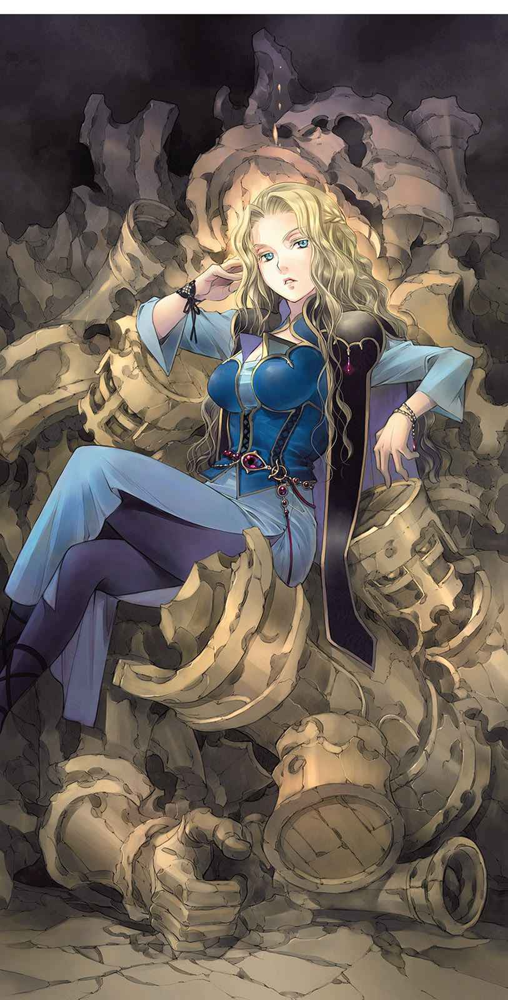
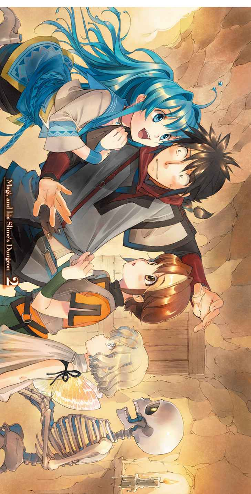
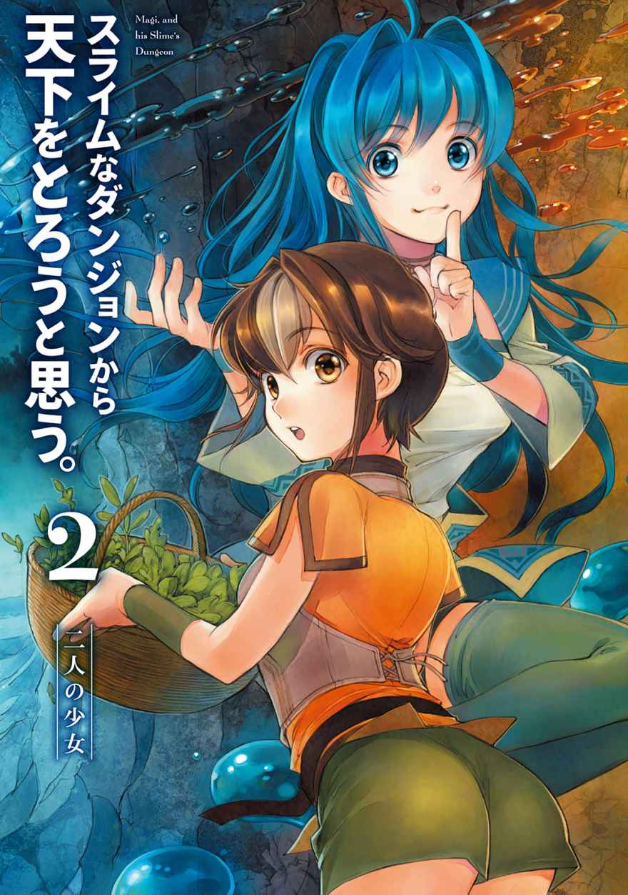
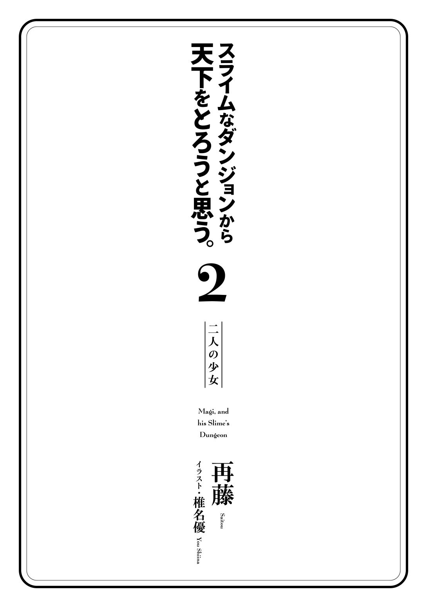
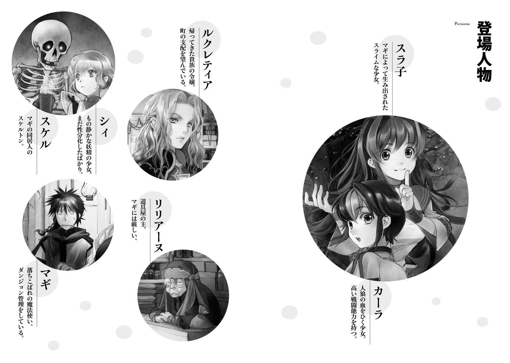
プロローグ
天然の洞窟に設置された立て付けの悪い扉を開けた瞬間、
「エロ親父！ バカ！ 変態！ スケベー！」
怒濤 の如く浴びせられた罵声 の嵐に、俺はそっと目の前の扉を閉めた。
後ろを振り返って、
「スラ子、俺は親父か......？」
「なにをこの世の終わりみたいな顔してるんです。あのくらいの女の子から見たら、年上の人は大抵そうってだけですよ」
「親父......？ まだ二十五にもなってないのに......子どもどころか奥さんもいないし、髭だって生やしちゃいないのに......？」
「悩むとハゲちゃいますよ。ほら、いきますよ」
部屋のなかにぽーんと押し出される。
暗く、ジメジメした室内。元は研究用途のスペースで、少し前からスラ子とシィの寝床になっている広めの空間の隅っこに、声の主の姿はあった。
今にも泣きだしそうなのを必死に堪 えるようにして、寝台からこちらを睨 みつけてくる少女。
改めて見ると、年の頃は十五、六くらいか。もう少し上かもしれないが、表情のせいでちょっと幼く見える。冒険者らしい短めの髪は前髪の一房だけが白みがかっていて、耳横の両側が長く垂らされていた。
身長は、俺はもちろん、スラ子より低いだろう。肩だって全然ほそっこくて、とても強力を振るうようには見えない──目の前のこの相手がスラ子と壮絶な死闘を繰り広げたという事実の方を疑ってしまいそうな程だ。
「来るな、寄るな！ この変なのをどうにかしろー！」
壁際で拘束されているその両手両足にへばりついているのは、俺の飼っているスライムの一種。
前の作戦で使ったものと同じように、それにもちょっと変わった習性が持たせてあって、彼らはスライム本来の雑食ではなく完全な草食嗜好 になっている。
つまり、このスライムをけしかけても相手の自由を奪うだけで捕食までは至らず、俺はこの特殊なスライムのことをこっそり「エロスライム」と名付けていた。
......自分で言うのもなんだが馬鹿だと思う。
しかも最近では、それとは比較にならない本格的エロスライムが颯爽 と登場したりしたもんだから、せっかくの個性も影が薄くなってしまったという悲劇具合である。
「誰がエロスライムですか」
「お前以外に誰がいるんだ」
長くなりそうなやりとりは後にして、俺は粘着するスライムから逃れようと必死にもがいている相手に呼び掛けた。
「えーと。君、まずは落ち着いて欲しいんだが」
「痴漢！ 陰湿エロい人！ 話したことないけど、きっとそう！」
「帰る」
「メンタル弱すぎです、マスター」
踵 を返しかけたところに後ろからむんずと首根っこを捕まえられ、引っ張られる。
「ほら。誰かと話す練習ですよ。リラックス、リラックス。深呼吸してください。ひっひ、ふー。ひっひ、ふー」
出産か。
「人を対人恐怖症かなにかみたいに言ってからに......」
「社交不安っぽいところはあるんじゃないかなあと、ちょっと心配しています」
そう言うスラ子の表情が思ったよりも真面目だったので、俺はそっと目線を逸らした。実際、そうじゃなければアカデミーにいた頃、周りにほとんど同じ人間種族がいなかったとはいえ、ぼっちになんかなっていない。
「......とにかく。とりあえず話を聞いてくれないか。今、スライムを離すから」
木桶に持ってきた削り岩苔 の山を目の前の床にばら撒くと、ぞぞぞ、と少女の手足に纏 わりついていたスライム達がそっちに群がり始める。
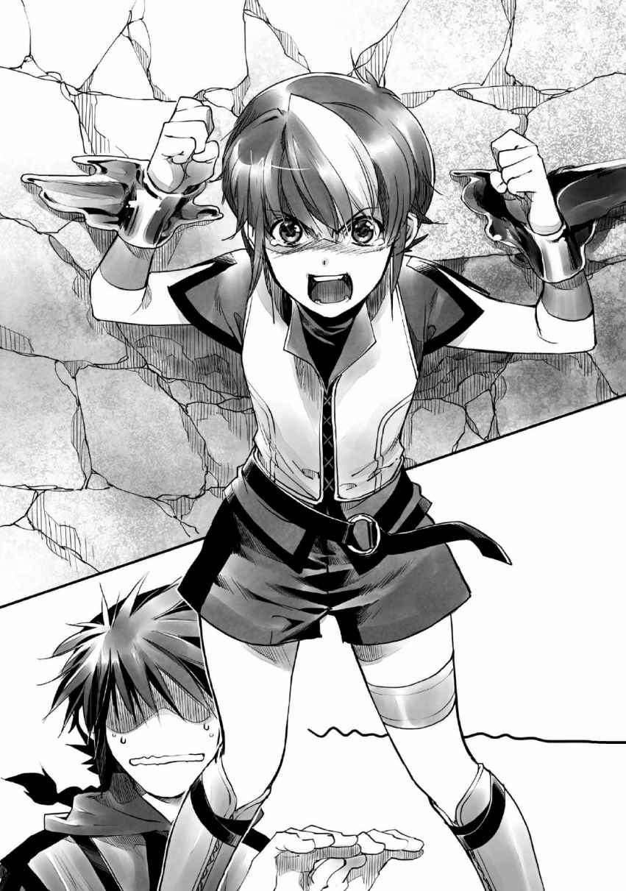
拘束から身体が自由になった瞬間、
「ッ──！」
一拍も置かずに少女が跳ねた。
獣の俊敏さで飛びかかって来る相手に、俺はまったく動けない。そんなに上等な反射神経なんざ持ち合わせてはいなかった。
俺にできることといえば悲鳴をあげることくらいだったが、それより早く、
「──ダメですよ」
声と同時、隣から伸びたスラ子の腕が少女の拳を搦め捕っていた。そのまま振り回すようにして、身体ごと壁に叩きつける。
息を詰まらせる相手の両手を押さえ、すっと顔を近づけたスラ子が、
「マスターへのお痛 は許しません。わかりましたか？」
スラ子の表情は俺からは見えなかったが、相手の表情が一瞬で青ざめたところを見れば、それがどんなものかは想像がつく。
「スラ子、下がっていいぞ。ありがとう」
「はい、マスター」
こっちを振り返ったスラ子は〝いつも〟の微笑。
優しげな笑顔のまますごまれる恐怖には身に覚えがあったから、俺はちょっと相手に同情した。
「えーと。大丈夫か」
ぎゅっと唇を嚙み締めた女の子が唸 るように、
「ボクを、どうするつもり......？」
「そのことで話に来たんだ」
目尻に涙を溜めながらこちらを睨み上げてくる相手に、俺は神妙な顔つきに見えるように頷いた。
一章 人狼の少女
▽ １△
ダンジョンの広間で行われたルーキー冒険者達との戦闘と、スラ子の変調から二日が経っていた。
俺の怪我を見て怒りに我を忘れ、そのあと本当に自分自身さえ見失いかけてしまったスラ子は、あわや消えてしまうのではというところだったが、シィのお蔭でなんとか一命を取り留めて。俺達は倒れていた冒険者の女の子を連れ帰って看病しつつ、のんびりと時間を過ごしていた。
それでスラ子やシィにせがまれてアカデミー時代の昔話などしていたわけだが、その合間に、今後のことについての話もしていなかったわけじゃない。
これからの展望。予測できる事態に対処すべきこと。話し合いが必要なことは色々とあるが、とりあえず差し迫って重要な問題は、ひとまず容体が安定したのを確認して、俺の部屋からスラ子達の部屋に移したあの恐るべき見習い冒険者の少女の処遇であって、
「飼っちゃいませんか？」
そう恐ろしい提案を笑顔でしてきたのはやはりと言うべきかなんと言うか、人の形をとった不定形のスラ子だった。
「だからそんなに軽々しく、ペットを飼うみたいに言うんじゃない」
渋面で俺は言う。気分はほとんど、次から次へと野良犬を拾ってくる子どもを叱る親のそれに近いかもしれない。
しかしもちろん、スラ子だってなんの考えもなく言っているわけではない。
「殺すわけにはいきません。今頃、町のギルドには『スライムが異常発生していた』という報告が挙がっているでしょう。それだけなら、不慣れなルーキー達がパニックを起こして判断に過誤 があったと思われるかもしれませんが、実際にその中の一人が帰って来なかったという事実が加われば、話の信憑性 も与える危険度も段違いになります」
俺やシィに現状を確認するように、丁寧な口調で続ける。
「あくまで穏便に、人間さん達からダンジョンの主導権を取ろうとするのなら、過激な結果はむしろマイナスです。ですが、かと言ってこのまま帰してしまっても、今後に悪い影響が出るのは結果を見るまでもありません」
「あの相手がもし気絶するまでのことを覚えてた場合か。......まあ、間違いなく討伐隊が来るな。人間どもはこの洞窟を、自分達で管理できていると思ってるわけだし」
そこに怪しげな魔物が住み着いているとなれば、嬉々として乗り込んで来ることだろう。
こんな場末 のダンジョンにそう大した報奨金が出るわけでもないだろうが、このあたりじゃ冒険者の金になりそうな依頼の数も、それに種類もたかが知れているはずだ。日銭を稼ごうとする輩 がいたっておかしくはなかった。
「はい。人間さん達が大挙して押し寄せて来る。たとえそれを一度や二度、上手く撃退できたとしても、次にやって来るのはより大勢、より手強い相手になるでしょう。それでは、いずれやられてしまいます」
人間はこの世界でもっとも数が多い種族の一つだ。
そして、その数という力をもっとも上手く扱っている種族でもある。
一人一人の力は魔物より遥かに非力でも、それが集団となって襲いかかればどんなに巨大な相手でも倒してしまう。噓か誠か、人間達の間には「竜」を倒したという伝説まであるくらいだ。
竜といえばこの洞窟のある山頂にも一体いるわけだが、あの呼吸する自然災害を相手に、いくら数が群れをなしたところでまったく歯が立つとは思えない。さすがにただの法螺 だと思うが、しかし竜をはじめとする多くの魔物が跋扈 するこの世界で、実際に人間種族がもっとも繁栄した今を生きているというのも事実だった。
その力を侮 るのは馬鹿だ。
人間の恐ろしさは、同じ人間種族である俺が一番よくわかっている。
「殺せない。帰せない。となれば、ひとまずここで囲っておくのが一番だと思います」
「囲ってどうする」
「色々と協力してもらいましょう。ちょうど、わたしが出来ることを試せる相手が欲しいと思っていました」
優しそうな笑顔のままで怖いことを言う。
「......例えば？」
「わたしの分泌液の効用と、その効果継続時間についてとかでしょうか。あれがどれほど、どういった形で作用するのか。危険性や有効性についても調べてみたいと思っています。もしかしたら、使えるかもしれませんし。向こうから自主的な協力を得られるかも」
俺は露骨に顔をしかめてみせた。
「薬漬けってのは、自主的とは言わないぞ」
「快楽漬けというのもありますよ？」
ふふー、と妖しく笑ってみせる。
俺はため息をついて、
「却下だ」
別に、魔物をやってるのに善人ぶろうというんじゃない。
人体実験だろうがなんだろうが、必要ならいくらでもやればいい。そうでなければ魔物で研究者なんてやってる意味がない。魔物とは元来、人間の良識や常識の「外」にあるもののことを言うのだから。
俺がスラ子の提案を否定したのにはもっと切実な理由があった。
「食費がヤバい」
「確かに。それを言われると......」
スラ子が苦く笑う。
魔法生体のスラ子はもちろん、精霊的な在り方に近いシィも、いざとなったら食費はほとんどかからないが、俺みたいな人間となるとそうはいかない。
〝妖精の鱗粉〟を売ったお金で今はまだ余裕があるとはいえ、頼みのシィの鱗粉もいつまで売れるかはわからない。とてもじゃないが、我が家は安定した財政状況にあるとは言えなかった。
ほぼ俺一人分だった食費が、最低でも倍になる。それでいきなり家計が危機的状況になってしまうわけではないだろうが、問題はつまりそこまでして人間一人を囲う意味があるかということだ。
「薬漬けの人間なんて被験体くらいにしか使い道ないだろう。臨床するんなら、もっと金のかからない相手で十分なはずだ」
たとえ人間相手を想定した実験であっても、実際に人間を対象に実験を行うのはステージを進めてからでいい。そうでなければコストでやってられない。
「そうですね。確かにその通りです」
正論だと認めてくれたらしく、スラ子はすんなりと頷いた。
「わたしとしては、人間さんの協力者というのは惹かれるところではあるのですが......」
「まあな」
スラ子の言い分もわかる。
俺達は、これから人間を相手取ってこの洞窟の主導権を争っていく。そうなれば、人間側の情報というのは当然、物凄く重要になってくる。
冒険者。それを雇う連中。
内通者とまではいかずとも、せめて情報提供者を確保する必要は出て来るだろう。
だがその相手にわざわざ一介の冒険者の、しかも恐らくはそれに成ったばかりのルーキーを選ぶメリットがあるかどうかというのはまた別の話だった。
ただし。あるいは将来的に、スラ子が言ったような悪辣な真似だってやらなければならない事態はあり得る。
「お金、ですか。せめてもう少し安定して手に入れる手段があれば......」
うーんとスラ子が首を捻る。
「やっぱり、寝てる時に町の外にでも放り出しておくべきだったかもな」
それなら、あの暴走ルーキーが我も忘れて暴れまくり、なんとか自力でダンジョンから逃げ出したところで気を失ったということに出来た。まあ、その場合はルーキーが何を覚えていてそれをどんな風に町へ報告するかに関してはノータッチということになるわけだが。
「つまり、マスターがあの冒険者さんを放っておいてイチャイチャしてたせいですねっ」
「よりにもよってお前が言うのか、それを」
ふとシィを見れば、なにを思い出したのか感情の乏しい表情にうっすらと頰を染めている。
「シィはあの冒険者をどうしたらいいか、なにかないか？」
訊いてみると、そっと頭を振って。少し前に性分化を迎えたばかりの小柄な妖精は、相変わらず小さな声で答えた。
「......人間は。苦手、です」
「そか」
一応、俺も種族的には人間になる。シィの台詞にちょっと傷ついたりしながら、なんとなく目の前の頭を撫でてやる。シィは黙ってされるがまま。
まあ、先日の戦闘であの少女はスラ子や俺の姿を見ているのかもしれないんだから、それを確認しないで町の外に放り出しておくのは危険ではある。
「俺達のことを覚えてるかどうか。やっぱり問題はそこだな。とにかく、会ってみるか」
「そうですね。あんな状態でしたし、覚えていないでくれたならそれが一番です。実際、わたしはあんまり覚えてないですし......それなら、いくらでも言いくるめられます」
「記憶が曖昧 ならシラを切りとおせばいいわけだしな。──よし、まずは会ってみよう。もう一日以上、ぶっ続けで眠りっぱなしなんだ。そろそろ起きてもおかしくない」
「というわけで。洞窟で倒れていた君を助けたのが俺達なわけなんだが」
「噓だ！」
誠意をもって事情を話した──色々とかいつまんではいるが、噓はついていない──俺の説明を、目の前の少女は一言で切って捨てた。
「助けてくれたんなら、ボクをこんな風に捕まえておく理由がないじゃないか！」
至極もっともだ。
だがそういう追及が来ることは前もって予測していたから、俺は落ち着き払って、
「非礼は詫びる。だが、こっちも自分の家を壊されたらたまらない。君、自分がしたことを覚えてるか？」
見るからに活発そうな印象の女の子が、こちらの暗に責めるような口調に眉を顰 めて、
「もしかして、ボク。また──」
蠟燭 の灯りだけで乏しい光源でもはっきりとわかるくらいに顔色が一変した。
その様子に、俺はスラ子と素早く視線をかわしあう。──これ、いけそうだぞ。──ごーごーです。
俺はアンニュイな感じに──自分でもどんな感じかよくわからないが、息を吐いて、
「思い当たることがあるなら、まあいいんだ。とにかく、そういう状況だったからこういう処置をとらせてもらった。不自由な思いをさせたことは悪かったが」
「そんな。ボク......」
わなわなと震える拳を持ち上げて、じっと見つめる。
彼女の手にはいくつもの傷痕があった。そのいくつかは先日の戦いで被 ったものだが、シィが治療してくれたおかげで酷いことにはなっていない。
......部屋に運び込んで来た時、この冒険者の少女の容態は本当に危険だった。
大規模破壊魔法 でほとんど凍死寸前だったということもあるが、それ以外にも、その全身にはほとんど余す所なく生傷が刻みつけられていたのだ。打撲に擦傷。一つ一つは致命傷ではないかもしれないが、数えきれないくらいのそんな痛みが重なれば、どんな猛者だって苦しみにのたうち回ることだろう。それこそ気が狂ってしまってもおかしくない。
だが、この目の前の女の子は、まるでそんな痛みなどなかったかのように立ち上がり、最後までスラ子に向かっていった。
......そんなのは、とても普通じゃない。
そして、その普通じゃない理由に俺は心当たりがあった。
「君は、ウェアウルフの血がまじってるのか？」
訊ねると、冒険者の少女は強く唇を嚙み締めて下を見て。頷いた。
「......少しだけ。お父さんもお母さんも、普通なんだけど。ボクだけ、血が濃く出たみたいで」
「隔世遺伝、ってやつだな」
特徴的な形質が、何代か先の子孫に顕現 することはあり得る。先祖返りとも呼ばれるものだ。
人狼 という種族はひどく好戦的な性格で知られるが、その中でも特に有名なのが、彼らが戦闘中に発揮する異常性についてだった。
バーサーカー。
獣の如く戦い抜くもの、という意味があらわす通り、彼らはどんな絶望的な戦でも大きな戦果を挙げる一族だった。
ただし、その戦意は時として味方にまで向かってしまうことから、凶戦士、狂戦士だなんていう不名誉な称号を身に受けてしまうことになった。彼らは戦場で非常に重宝されながら、同時に強く忌み嫌われてもいた。
先日の戦闘で少女が見せた暴走は、決して戦闘そのものに慣れていなかったからというのが理由の全てではない。むしろ、そのことが彼女の中に眠る血を引き起こした結果なのだろう。
だからこその、あれほどの戦闘能力。戦闘者としては間違いなく一級品のスキルだが、それを使うのにいつも暴走してしまうというのなら、決して望ましいばかりのものではない。
そうした血を引く人間が冒険者という職を選ぶのは、ある意味で当然の成り行きかもしれなかった。色々と苦労も多いだろう。
名前も知らない少女のこれまでを思って、俺はちょっとしんみりとしてしまった。
「──すみません。ご迷惑をかけてしまって。失礼なこと言っちゃったことも、それから。助けてもらってありがとうございますっ」
少女が頭を下げた。
さっきまでの暴れ様から一転してのしおらしさに、俺は隣のスラ子を窺う。甘いと呆れられそうだが、もう帰してやってもいいんじゃないかという気になっていた。
「自分が暴走した時のことは、覚えていますか？」
スラ子が訊ねた。
少女は苦悩するように頭を振って、
「なにも......。みんなと一緒に、大きな場所まで出て。スライムがたくさん。それで塩を撒きながら中央に向かったら、いきなり水が──」
そこで言葉を切り、はっと顔を上げた。
突然、広間に溢れて塩の結界を押し流した水流と、その場に偶然居合わせたという俺やスラ子。そのわかりやすく危険な結びつきに気づいてしまったかと内心で焦ったが、
「みんな、他のみんなは──っ」
真っ直ぐな眼差しに見つめられて、俺は一瞬、答えに詰まってしまう。
暴走する少女を置いて一目散に逃げ出していった連中。そのことを目の前の相手にどう伝えるべきだろう。
もちろん、全滅を回避するというのは立派な選択だ。だが、あの時のあの連中。あの態度は、そういうのとはまるで違うように思えた。
「......君がいた広間に、血とか、死体とか。それらしい痕跡はなかった。逃げ出せたんだろう。きっと無事なんじゃないか」
とりあえずそのあたりのことはぼかして伝えると、少女はほっとしたように強張っていた全身を弛緩させて、
「よかった......」
心の底から安堵した様子で息を吐いた。
目尻にうっすらと涙が溜まって、頰を伝って落ちる。それを見た俺は顔中をしかめさせて、目の前の光景から目を逸らした。
駄目だ。俺はこういうのに弱いんだ。
もういいだろうとスラ子を軽く睨むと、呆れたような眼差しでスラ子が息を吐いた。
「わかりました。ともかく、無事に済んでよかった。そういうことでよさそうですねっ、マスター？」
「ん。ああ、そうだな。いいんじゃないか？」
俺達のことを覚えていないというなら、このまま帰してしまって問題ない。
あとは、俺達がどうして洞窟の中に居合わせたのかという理由のこじつけだが、それも難しくはなさそうだった。
なんというか、この目の前の少女は明らかに初心 だ。都会なんかに出たら悪い男にころっと騙されてしまうタイプだ。多少、突拍子のない作り話だって信じてくれそうな気がする。
「そうなると早く町へ戻った方がいいかもしれませんね。ギルドの人達も、お仲間さんも、心配されているでしょう」
トントン拍子で話を進めようとするスラ子に、俺は眉をひそめる。
まだ俺達のことについての説明──というか言いくるめができていない。
この少女はともかく、他の人間にまで自分達の存在を知られるのは不味 いから、町に帰すにはそれについてなんらかの言質 をとってからにすべきじゃないかと思ったが、俺からの視線を受けたスラ子はぱちりとウインク。わかってます、という表情で、
「ですが、体調のこともありますし、一人で帰ってもらうのもちょっと心配ですよね。マスター」
「まあ。そうだな」
とりあえず相槌を打っておくことにする。
スラ子はにっこりと微笑んで、
「なので、お見送りしないといけませんね。町の方々にご挨拶だって必要かもしれません」
そんなことを言いだした。
準備をしてくるから少し待ってほしいと冒険者の少女に告げて、一旦、部屋の外へ。俺の自室に戻ると、ベッドに腰掛けたシィが足を揺らしながら俺達の帰りを待っていた。
俺から先ほどの発言の意図を訊かれて、
「これはチャンスです」
とスラ子は言った。
「チャンスだって？」
「はいっ。せっかくあのルーキーさんが都合の悪いことを覚えてないんですから、町とのパイプを作るきっかけに使わせてもらいましょう。マスターの仰ったとおり、『どうせやる』のなら相手を選びたいところですし」
内通者、情報提供者。
それを作る前段階としての敵情視察。
町の連中が俺達を「行き倒れのルーキーを救ってくれた恩人」として迎えてくれるなら、確かにこれからなにかと動きやすくはなるかもしれない。
問題は、たとえルーキー一人の恩人だからといって、素性の知れない相手をそう簡単に町の人間が受け入れてくれるかどうかだ。はっきり言って、可能性は低いと思う。
町に出向くのにもスラ子やシィが行くわけにはいかない。二人とも外見に特徴がありすぎる。となれば当然、
「俺しかいないじゃないか」
「マスターしかいませんね」
「無理だ」
即答した。
「挨拶とか、愛想笑いとか。俺には無理だ。無理無理。そんなん出来たらこんな洞窟で今まで引き籠 もってるかっ」
他人から信用を得る為にもそれなりのスキルが必要とされる。
アカデミー時代、ほとんどぼっちを貫き通していた俺の対人折衝能力はマイナス方向に針が振り切っているのだった。
「ですから、それを脱却するためのチャンスでもあるんですよっ」
ぐっとスラ子が拳を握り込んで、
「リハビリです。社会復帰です！」
自分が創った相手にここまで心配されると、嬉しさを通り越してなんだか涙が出てくる。
「魔物なんざ社会に背いてなんぼじゃないか。お前は魔物ごころってモンがわかってない」
「でも、魔物社会でも爪弾きだからアカデミーの本部に残れなかったのでは？」
あ、こいつ言いやがった！
絶対に触れちゃいけない繊細な部分にズバッと触れやがった！
「く......。クっ──」
「く？」
「クケー！」
「変な声で誤魔化そうとしないでください」
ぐっと言葉を飲み込む。
......俺だって、もう五年近く、この洞窟に住んでいる。
今まで何度も町を訪れたことはある。顔見知り程度の相手なら、道具屋のあのがめつい婆さんをはじめ何人かはいる。
だが、それだけだ。決してその連中と親しい交流があるわけじゃない。
それはもちろん、俺が人間でありながら魔物という生き方を選んでいるからではあるが、それだけでもなかった。
魔物でも、なかには人間と交流を持ちながら過ごしている連中だっている。「魔物」を理由にするのは、ただの言い訳でしかない。
「......自信がない」
肩を落とし、顔を俯かせて、俺は言った。
つまりそういうことだ。人付き合いは苦手だった。
「マスター......」
そっとスラ子の手が俺の肩に触れる。
なんだかんだ言って優しい奴なのだ。俺は情けなさを堪えて顔を上げて、
「しゃーこらー！」
次の瞬間、思いっきり頰を張られた。
手首のスナップが効いた実にいい平手を受けて、くらっと視界が歪む。かくん、と腰から落ちそうになるのをなんとか踏みとどまって、涙目で吠えた。
「なんでだよ！ どう考えても温かく慰める流れだっただろうが、今のは！」
「いーえ、むしろこういう流れです！」
スラ子はきっぱりと言い切った。
「わたしとシィのマスターが、そんな風では困りますっ。いいから行って来てください！ じゃないと今晩のご飯抜きですよ！」
「なんでお前の方が立場が上なんだよ!? シィ、お前からもなにか言ってやれ！ このエロスライムの横暴を許すな！」
それまで無言で俺達のやりとりを見守っていた寡黙な妖精に助けを求めると、シィはちょっと困ったように眉を寄せて。
熟考の末に、さっとスラ子の手をとった。
「卑怯者！ 裏切り者！ 長いものには巻かれよう、寄らば大樹の陰妖精ー！」
「はいはい。いつまでもルーキーさんを待たせるのもあれなので、お出かけの準備してくださいね」
「......いってらっしゃい」
必死な反論は二人にまったく受け入れられることはなく。
俺は冒険者の少女と一緒に、近くの町へ行くことになってしまった。
先日の一件があったのがまだ数日前だ。調査隊を組む前に別の冒険者がやって来ることはないだろうと思ったが、一応は周囲を警戒しながら洞窟奥に繫がる隠し扉を出る。
途中で通った広間の、まだひんやりとした冷気が残っている肌寒さに腕を抱くようにしながら、冒険者の少女が言った。
「これ、ほんとに。ボクが......？」
広間は、率直に言って酷い有様だった。
至る所に攻撃魔法の破壊痕が残り、中央に鎮座するようにあった白石鉱 の巨大な結晶も、半ばから折れて崩れてしまっている。
「ん。いや、全部ってわけじゃない。こっちで止めるためにやったのもある。悪いが必死だった」
というか、主にそれをやったのは彼女ではなく暴走したスラ子だったのだが、それは言わないでおいたほうがいいだろうと思って俺は黙っておいた。
少女はボロボロに擦り切れた自分の格好を見下ろして、首を振った。
「全然。平気です。ありがとうございました。他の人に怪我がなくて、ほんとによかった」
素直な相手を騙すのがちょっと申し訳なく思えた。俺は話題を変えることにして、
「君は、えーと」
「カーラです。カーラ・カッシリ」
「カーラは、どうして冒険者に？ 冒険者なんて、あんまり若い女の子が目指すようなものでもないんじゃないか？」
「うち、貧乏で」
カーラは恥ずかしそうに笑って、
「田舎の弟達はまだ小さいし、誰かが稼がないと。よくある話ですよね」
確かによくある話だ。どこにでもありふれているだろう。
だが、それがよくある話だろうがなんだろうが、そういうものに弱い奴は弱いのだ。つまり俺のことだ。
「そうか......」
「あの、あなたのお名前を聞いてもいいですか？」
「あ、悪い。マギって呼んでくれ」
「マギさん。その、マギさんと一緒にいた人って、その......」
言いにくそうにちょっと口ごもる。
まあ、スラ子の外見が普通じゃないのは、あのスライムブルーの髪色を見れば一発だ。
「えーと、なんて言ったらいいんだろうな。......ほら、この洞窟の前に湖があるだろ？」
「はい」
「そこの管理をやってた水精霊の関係で、ちょっと。理由あって一緒にいるんだ」
噓は言ってないぞ。
カーラは感心したようにぱっちりとした大きな目を見開いて、
「精霊に見初められたってことですか？ 凄い」
人の言うことを疑わない子だなあ。
他人事ながら、この女の子のことが心配になってきた。
「そんないいもんじゃないさ。ああ、でも、そのことでちょっとお願いがあるんだけど」
「はい。なんでしょうか」
「俺達のことは、出来ればあんまり口外しないで欲しいんだ。君のことも、たまたま通りかかったから助けたくらいにしておいてもらえると助かる」
「え？ どうしてですか？」
意図を疑うのではなく、ただ不思議そうに訊ねてくる相手に、
「なんて言うか、俺も、スラ──一緒にいた、彼女も。あんまり人と関わりたくなくて。見た目のこととかあるし。出来ればそうしてくれると嬉しい」
言い訳としては苦しいかと心配したが、カーラは数回、瞬きしてから、こくりと頷いてくれた。
「そっか。そうですよね、......わかりました」
表情に、ほんのりと苦いものが浮かんでいる。
ちょっと気になったが、とりあえず俺達のことをバラさないでくれそうでよかった。いかにも人が良さそうな相手だから、約束は守ってくれるだろう。
「とにかく、そういうことで頼むよ」
「わかりました。でも──」
「でも？」
用心しながら訊ねると、カーラは微笑んだ。
それはスラ子の妖艶だったり無垢だったりする笑みとも、シィの控えめな微笑とも違う、爽やかな笑顔だった。
「ありがとう。それなのに、ボクのこと助けてくれて。おかげで仲間達に怪我をさせることもなかったみたいだし。本当に、いくら感謝してもしきれません」
「ああ、いや。それは別に」
ひた向きな感謝の言葉に、俺は曖昧な返事で顔を背けた。
苦手だ。こんな風にひたすら真っ直ぐな相手、俺みたいなモグラな生き方してる人間には目の毒すぎる。
まあ、とにかく確認もとったし、これで一安心だ。
うっすらと前方に光が見えてくる。
出口だ。
洞窟の外はちょうど昼頃で、外はからっと良く晴れたいい天気だった。
カーラとなんでもない話をしながら、森の道を抜けて町へ。
あんまり他人とコミュニケーションをとるのが得意ではない俺だが、道中そんなことを思い出すことがないくらい、カーラとの会話は楽しかった。
なんとなくアカデミーの頃を思い出す。
あの頃、俺にはほとんど友人なんていなかったのだけれど、カーラみたいな友人が一人でもいたら楽しかっただろうなーと、そんなことをぼんやりと思った。多種多様な魔物が集 うアカデミーは文字通りの意味で混沌とした空間だったが、カーラならそこでも人気がでるだろう。
そのカーラが、町に近づくにつれて少しずつ暗い表情になっていっていることに俺は気づいて、
「どうかしたのか？」
「......いえっ、なんでも。さ、いきましょうっ」
声をかけると、明らかに無理につくったような笑顔で、カーラはそう応えた。
カーラの表情の理由はすぐに分かった。
町に入ってすぐ、こちらを取り巻く周りからの視線に気づいたからだ。
はじめは俺に対するものかと思ったが、そうじゃない。町の住人からの刺さるような視線は、俺の隣を歩くカーラに向けられていた。
良い意味での注目というのとは違う。ほとんど厄介者を見るような刺々しい視線の針が、ぶしつけにカーラの全身に浴びせられていた。
「......カーラ？」
「ごめんなさい。嫌な思いをさせちゃって。町長のとこ、行きますね」
申し訳なさそうに言って、周囲の視線を振り切るように足を速める。
俺は黙ってカーラの後に続いた。
洞窟から半日もかからない距離にあるこの町、メジハは小さな町だ。
人口はそこそこ。農村というには大きいが、町として見るといかにも辺鄙 で、人も物も流通が少なすぎる。そういう田舎の大きな集落だった。
このくらいの規模の町の場合、冒険者のギルドはほとんど自警団の意味も兼ねている。というか、ギルドという在り方。そして冒険者という存在の発祥そのものが、集落の自警に端を発しているのだが──ともかく、こういう場所のギルドのまとめ役は、そのまま集落の長が兼任していることがほとんどだ。
案内された町長の家で部屋に案内された俺達を待っていたのは、いかにも業突く張りな性格が窺える爺さんだった。
道具屋の婆さんといい、この町はこんなんばっかりなのか。
「帰ったのか、カーラ」
じろりとした目つきで、吐き捨てるような相手の言葉が気になった。まるで、帰って来なければよかったとでも言いたげな口調だった。
年老いた町長はそれから俺の方を胡散臭そうに見て、
「そちらは」
「はい。ボクのことを助けてくれた人です。......すみません、実は」
「話は聞いておる」
カーラに最後まで言わせず、町長は頭を振った。
「また暴れたらしいな」
「......はい」
「お前が暴れたせいで、他の三人まで危険な目に遭うところだったそうだな」
俺は、ん？と首を傾げた。
カーラが暴走したのは確かにその通りだが、一緒にいた他のメンバーが助かったのはむしろ彼女のその暴走のおかげだろう。
たくさんのスライムに取り囲まれて、パニックになっていたのは他の三人も同じなはず。それを仕掛けた当の本人が言うのだから間違いない。
それなのに、
「他の三人は、もうお前とは組めないと言っている。なにか申し開きはあるか」
それを聞いて、俺はそういうことかと目の前の事態を理解した。
何のことはない。
要するに他の三人は、クエスト失敗の責任をカーラ一人に押しつけたのだ。
町のギルドに登録するための入会試験──洞窟の奥にある白石鉱を削って持ち帰る。誰でも達成できるような簡単な内容だ。
これから冒険者としてやっていくために、そんな容易なクエストを失敗してしまうのは、今後のことを考えればひどく外聞が悪い。
そこで、連中はその責任をカーラの暴走のせいにすることにした。もしかしたらカーラはもう戻ってこないかもしれないなんて打算も働いたのかもしれない。死人に口ナシという奴だ。
要領がいいつもりかも知れないが、最低な連中だ。しかも頭が悪い。そんなものはカーラが説明すればすぐにバレるんだから。
だが、
「......いいえ。ありません」
何故か、カーラは一言も弁解しようとしなかった。
「おい、カーラ」
慌てて声をあげかけるが、カーラは目線で黙っておくようにこちらへ訴えかけるようにしてから、
「ボクのせいで、他のみんなを危ない目に遭わせてしまいました。本当にすみませんでした」
深々と頭を下げる。
啞然としている俺の前で、町長がふんと鼻を鳴らした。
「他の三人に怪我がなかったのは不幸中の幸いだったな。だが、しばらく依頼は任せられんぞ。お前とまた組んでもいいという物好きな相手がいれば話は別だがな」
「......はい。ありがとうございます」
頭を下げたままのカーラが硬い声で応えて、それで二人のやりとりは終わりらしかった。
納得がいかないのは俺の方だ。
「ちょっと、待ってください」
「なんだ」
胡乱 な目つきを向けられてたじろぎかけるが、なんとかそれを踏ん張って、
「どうしてカーラ一人が悪いことになるんです。その三人が噓をついてるのかもしれないじゃないですか」
「マギさんっ」
カーラの声。やめてくれということだろうが、止まらない。
「仲間を見捨てて逃げるような連中の言い分、まともに信じてもしょうがないでしょう。お互いの言い分を聞いて、それで実際になにがあったのか確認すべきじゃないか」
「どこの馬の骨とも知れん輩が、なにを偉そうに......」
「馬の骨だろうと鹿の骨だろうと、おかしいもんはおかしい」
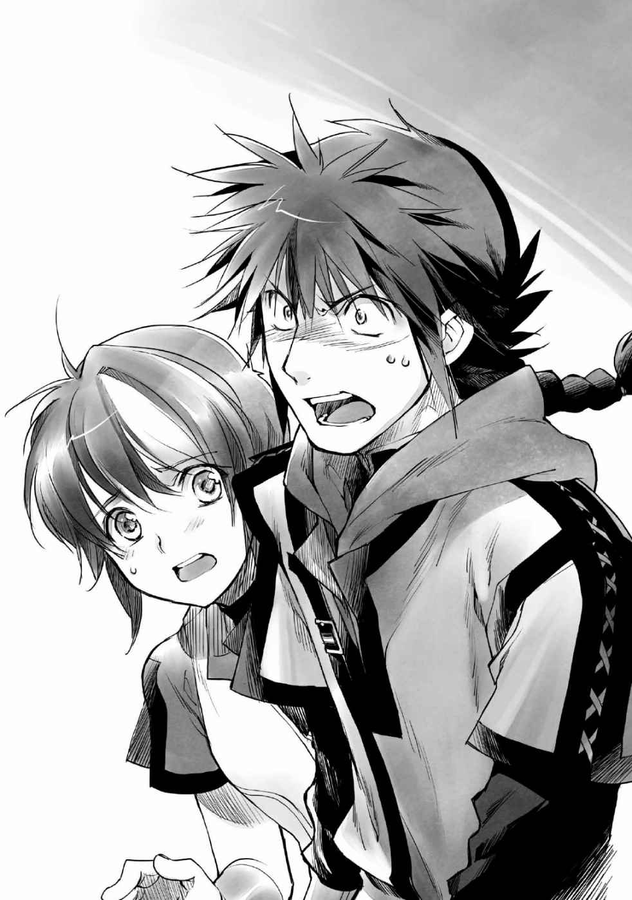
カーラを助けたという口実をきっかけに、町とのパイプを探る。そんな当初の目的なんてすっかり頭から抜け落ちてしまい、俺は一気にまくしたてていた。
「少しは頭を使ってみればいい。その連中からいったいどんな報告を受けてるのか知らないが、せめてカーラからも聞いてみるべきだ。それで両者の言い分が違ってたら？ どっちが本当かなんかわからないじゃないか。そのくらい──」
ぐいっと横から引っ張られる。思い詰めるほどに真剣なカーラの表情に、俺はそれ以上の発言を止められた。
「カーラ。洞窟で何かあったのか」
俺の方を見もしなくなった町長が、渋い顔で質問した。
俯きがちにカーラが答える。
「スライムが、たくさん発生していました。それで、ボク達はパニックになってしまって。その後のことは、覚えてません......」
「......なるほど」
町長が重いため息をついた。
「下がれ。そっちの男もだ、さっさとここから摘まみ出せ」
冗談じゃない。こっちはまだまだ言い足りないんだ──口を開きかけたところを隣からカーラに止められてしまう。
こちらを見つめる表情は、ほとんど泣きそうになっていた。
俺はそれに言葉を失って。
そのまま、俺とカーラは長の家から追い出されるように外へ出た。
「なんで黙ってようとしたんだ？」
外に出てすぐ、俺はカーラに向かって問い詰めた。
振り返ったカーラが困ったように笑う。
「ごめんなさい。でも、いいんです」
「なにが。自分一人が悪者にされていいのか」
「ボク、厄介者だから」
十代半ばと思われる年齢にそぐわない達観した表情で、カーラは言った。
「昔から、暴れちゃうこととかあって。最近は抑えられるようになってきてたんですけど、やっぱりダメみたいで。だから、冒険者くらいしかつける職もなくて。町長さんには、傭兵にでもなれって言われてるんですけど」
ウェアウルフ。
凶戦士と呼ばれる一族は、確かに魔族の中ですら疎まれることも多い。
町の人間のカーラを見る目が冷たいのもそれが原因だろう。
厄介者。嫌われ者。
──むかっとした。
「でも、ありがとうございました。嬉しかったです」
カーラはにっこりと笑って、
「あんな風に怒ってもらえたの、初めてでした。マギさん、優しいんですね」
冗談じゃない。
誰が優しくなんかあるか。
あの頭の固い町長にと同じくらい、今、目の前にいるカーラに対して俺は腹が立っていた。
それだけじゃない。
俺は俺自身にも腹を立てていた。
なにせ、今のカーラの状況をつくった原因は俺達なのだ。
洞窟にやってきた冒険者を罠にはめて、洞窟の主導権を取り戻そうと画策した。それで罠にはまった相手の一人を今度は擁護しようとしているなんて、マッチポンプもいいところだ。
自分でも、どうして町長に食ってかかってしまったのかわからなかった。これだから他人と関わるのに慣れてない引き籠もりは。
「これからどうするんだ？」
内心で自己批判の嵐を巻き起こしながら、唸るように訊ねると、カーラは爽やかに笑って、
「どうしようかなあ、って感じです。入会試験、また受けさせてもらえるかどうかもわかんないですし......その時は、ほんとに傭兵にでもなるしかないですね。お金、稼がなきゃ」
冒険者と傭兵。どちらも危ない職業だが、その大きな違いは、仮にも集落単位に帰属するか、それとも金持ちなどに私的に雇われるかという点だろう。何でも屋という要素がある冒険者に比べて、傭兵はより直接的に戦闘要員のイメージも強い。
そんな傭兵稼業を、まだペーペーの、女の子がやっていけるか？ ......出来るわけがない。
もちろん、この他人を疑うことを知らないような女の子がこの先どんなことになろうが、そんなのは俺の知ったことじゃない。はずなのだが。
「......来い」
気づけば、俺はカーラの手を取っていた。
「え？ あの、どこに──」
質問を無視して歩き出す。
そのまま、さっき来たばかりの道を足早に戻った。
洞窟に戻り、奥の隠し部屋に入って、羊皮紙に筆をとる。
自分の心情を表現するように勢いよく殴るように書きつけて、適当に乾かした丸めたそれを乱暴に、目の前の相手に突き出した。
「これは？」
「魔物アカデミーの推薦状。俺が世話になった人──魔物だけど。宛ての」
「魔物？ アカデミー......？ って、ええ!? 」
忙 しく睫毛を瞬かせたカーラが、
「マギさん、魔物だったんですかっ!? 」
気づいてなかったのか。
スラ子の外見でとっくにバレてるものだと思っていたが。まあいい。
「アカデミーってのは、人から外れた連中の行くとこだ。特殊な能力とか、魔法。おかしな野望。研究。変な輩ばっかりだ。だからこそ、そういう連中が偏見なしに生きていける。その紹介状の人はその中でもとびっきりの変な人で。人じゃないけど。無茶な研究ばっかりしてるからいつも助手が逃げ出して万年募集中のマッドなんだ。けど、そこでならとりあえず食いっぱぐれるようなことはない、と思う」
「......ボクに、そこに行けって言うんですか？」
俺は顔をしかめて、
「新米のくせに、いきなり傭兵稼業なんかするよりはましだ。そこで自分の血を抑える修行をするなり、腕を磨くなり。それから傭兵でも冒険者でもなんでもすればいいさ。別に魔物になれなんて言っちゃあない」
困惑した様子で立ち尽くす相手に、俺は目についた先にあった袋を引っ摑んでそれも押しつける。じゃらりと中で擦れた音がした。
「紹介状に、アカデミーまでの地図も書いといた。けっこう遠いから、当面の生活費にでもすればいいし、家族のことが気になるなら家に送ってやればいい。アカデミーのバイトなら、頑張れば仕送りくらい出来るかもな。後は全部、君次第だ」
紹介状と貨幣の詰まった袋を受け取って、カーラはどうすればいいかわからないようだったが、やがて途方に暮れたように、
「なんで。こんな、」
知るか。そんなもんこっちが知りたい。
「君みたいなのを見てると腹が立つんだ。それだけだよ。わかったら頼むから、さっさと行ってくれ」
それで話は終わりだと、俺は強引に相手に背中を向けた。
どのくらい時間が経っただろう。
「──ありがとう、ございますっ」
かすれたような感謝の声が背中に触れて、それから立てつけの悪い扉を開ける音。ぱたん、と閉じる音と共に気配がなくなる。
俺は深く息を吐いて──その場に屈み込んで、膝を抱えた。
なにやってんだ、と今さらながらに後悔する。紹介状はともかく、金まで渡して。いったいどんな自己満足だ、と頭を抱えていたところに、後ろでまた扉が開く音。
振り返ると、それまで洞窟のどこに隠れていたのか、姿のなかったスラ子とシィが部屋に入って来ていて、
「ふふー」
上機嫌そうに笑っている。
「......なんだよ。どこ行ってたんだ？」
「ずっとマスターの傍 にいましたよ？ シィの魔法で、こっそり護衛してたんです！」
護衛？ 「姿消し 」か？
「そうなのか？」
視線を向けると、シィは恥ずかしそうに視線を下に向けてこくりと頷いてくる。ちょっぴり誇らしそうに、背中の小ぶりな羽が大きく揺れた。
「そうか。ありがとう。全然、気づかなかった」
「はいっ。だから、マスターの格好いいところもぜんっぶ、二人で聞いちゃってました」
げ。
「いや待て。違う、あれはそういうのじゃなくてだな」
「町で不遇な目に遭っている可愛い女の子の為に一肌ぬぐ！ 素敵ですっ」
「だから、違うって──」
「昔の自分を、思い出しちゃったんです？」
笑顔のままにさらりと告げられて、俺は渋面をつくった。
「別にそんなんじゃない」
「ほー、ほー」
「なんだその顔。......本当だぞ。だって。見ただろう。凄くいい子じゃないか」
「いい方でしたねえ」
「俺なんかとは違う。周りが認めてくれさえしたら、すぐ人気者になれるだろうよ。可愛いしな。け、せいぜい周りからチヤホヤされればいいんだ。呪われろ」
「ひねくれてますねー」
苦笑したスラ子が、ふふー、と擦り寄って来る。
「......なんだよ」
「いーえ。ちょっとこうしたかっただけです」
そのまま頰をくっつけたスラ子が、柔らかい感触と共に続けた。
「マスター。ちょっとお聞きしたいんですが──」
「なんだ」
「マスターが渡したお金、なんに使うはずのものだったか覚えていらっしゃいます？」
「............」
もちろん。覚えていた。
あれは次回、この山の頂きに君臨するヤクザな黄金竜へ支払う為のみかじめ料としてとっておいたものだ。
そのことを覚えていたからこそ、俺は答えられなかった。
かといって噓をつくわけにもいかない。ここは一つ、勇気ある沈黙を選択することにしよう。胸を張るのだ、俺。
「マスター」
脳が蕩 けそうな甘やかな声から、一転してひどく冷たい響きを伴った声音で耳元に囁かれる。
「──しばらくお小遣い抜きです」
「げ」
その瞬間、俺は自分が小遣い制になっていることに気づき、同時に家計の全てをスラ子が握っているという事実を再認識させられて。
その日は夜遅くまで、こっぴどくスラ子に叱られることになったのだった。
ちなみに。
その翌日、渡したお金は俺の手元に戻って来た。
「言われたようにしようかなって思ったんですけど」
手つかずの小袋を差し出しつつ、照れくさそうに笑ったカーラが、
「やっぱり、もう少しこっちで頑張ってみようと思って」
「......そうか」
今さら、手元にお金が戻って来たことが嬉しいなんてことは言えないので、俺はしかめっ面で答えた。
「また冒険者を目指すのか？ この町じゃどうせろくな扱いはしてくれないんじゃないか」
どうせなら、どこか別の場所で登録を目指せばいいのに。
こんな田舎町じゃなくてもっと大きな街なら、カーラの能力を買ってくれる場所だってきっとあるだろう。なにしろ、暴走状態とはいえその戦闘能力はルーキーなんてレベルのものじゃない。
ほんと言うと、別にアカデミーに向かわなくても、渡した金貨袋の中身でどこか別のところで冒険者としての道を進んでくれてもよかったのだ。田舎に戻って、その金を元手に家畜でも飼ってくれてもよかった。俺が衝動的に手渡した（そしてスラ子に散々叱られた）袋の中身には、若い牛をつがいで買えるくらいは入っていたはずだったのに。
だが、俺がそのことを言うと、カーラは照れくさそうな表情のまま、
「......あなたの傍に、いたいなあって」
そう言った。
唐突な台詞に俺は反応できず。
その背中で、声もなくスラ子の威圧感が膨れ上がるのを感じた。
▽ ２△
スラ子が立案した『ドキッ。もしかしてヤバい？ あの洞窟』作戦は、現時点でまだ実行途中の状況だ。
探索に不慣れなルーキー達を相手に、スライムの異常発生という事態を演出してみせることには成功した。
色々と不測の事態も起こりはしたが、人間達を殺してしまうようなことはなく。作戦の初動はまずまずといったところだが、重要なのはここからだった。
それまで「初心者用ダンジョン」として自分達が管理しているつもりになっていた洞窟から上がった不穏な報告に、ギルドからはすぐに調査の手が入るだろう。
戦力がスラ子とシィ、そして大量のスライム達くらいしかないこちらは、連中と真正面から事を構えるわけにはいかない。
スラ子も言っていたように、数に勝る人間達を相手に長期戦になれば、いずれはこちらが駆逐されてしまうのはわかりきっている。
あくまでこっそりと。まずは人間達の意識に違和感の影を落とすことから始めよう、というのが俺達の作戦だった。
だから、町のギルドからやって来る調査を何事もなくやり過ごせて、はじめて作戦は成功となる。
洞窟の主導権を穏便に手中にするためとはいえ、迂遠なやり方だ。
だが、性急な行動は自分達の身の破滅に直結する。最悪の場合、それはダンジョンそのものの閉鎖という事態も招きかねなかった。
魔渦とそこから生まれるとされる魔物達の存在を厄介なものとしか考えない人間種族にとって、この洞窟はルーキー達の練習場という意味合いのものでしかない。手に負えない、と判断されれば当然そうしてくるだろう。
人間達からそうした最終判断が出るまでに、俺達は有利な状況を整えておく必要がある。
力がないなら貯める。
それが無理なら、搦め手に出る。
その為には洞窟から近い町、メジハの情報というのはとても重要で、町に住む誰かと交流を持っておけばそれを手に入れられる機会も増えるだろう。
幸運にもそれを手に入れられるチャンスが俺達にはあったのだが、
「マスターが町長さんに啖呵きっちゃいましたから、ダメになっちゃいましたね」
遠慮のないスラ子の言葉に、俺は苦虫を嚙み潰したような顔になってしまう。
「悪かったな。どうせ堪 え性のない駄目男だよ、俺は」
「怒ってなんかいませんよ。わたしも、もちろんシィも」
小柄なシィを後ろから抱きかかえるようにしたいつもの格好でにこにこと、
「わたし達もその場にいましたから。相手がどういう人達かっていうのはわかりました」
ね、と同意を求められたシィがこくこく頷く。
「とりあえず、あの町長さんがわたし達の当面の敵になるわけですよね」
「そうなるな。メジハの長で、ついでにギルドの元締めだ」
この辺りは栄えた街や都市から離れている。いくつか小さな村や集落はあるが、その中で一番大きな町であるメジハの長がここら一帯の有力者には違いない。
「見たところ、そんなに凄い人って風にも見えませんでした。なんて言うか、人生に疲れ果ててるって感じで......」
「長ってだけだからな。別に腕っ節で町を治めてるわけでもない」
俺は肩をすくめて、
「ただ、それでもあんな年まで人間やってるんだ。それなりに、人をまとめる力はあるんだろうさ。少なくとも、俺なんかよりはずっとな」
有能なら有能なりに。無能なら無能なりに、だ。
「相手が実力者であった方が、かえってやりやすいかもしれませんね。その一人さえどうにかしてしまえば片がつきます」
ナチュラルに物騒な発言だが、それをいつもの表情のまま言うのが一番怖い。
「どうだろうな。そろそろお迎えも近そうな爺さんだ。意外と、内部じゃ権力禅譲が進んでるのかもしらん。いくら小さな田舎町だからって、ワンマンとは限らないしな。いざって時に後を頼めるNo. ２くらい普通にいるだろうし」
「ああ、なるほど」
スラ子が頷く。
「やっぱり、その辺りはきちんと確認しておきたいですね」
「だから、悪かったって言ってるだろ」
「怒ってなんかいませんってば。それに、協力してくれそうな人ならできたじゃないですか」
「カーラのことか？ ......どうだろうな」
ウェアウルフの血をひく冒険者駆け出しの女の子。
自分の生まれのせいか、魔物という存在にもあまり抵抗がなさそうだった。
そういう意味では確かに彼女という存在は貴重ではあるが、情報源としてはあまり期待できそうにない。地位や役職があるわけじゃなし、まずカーラ自身がその中に流れる魔物の血のせいで町の連中からひどく疎まれているようだった。
「あんまり期待はできないと思うぞ。こっちに敵意を持ってないのは助かるが、あくまで冒険者志望なんだからな」
カーラが冒険者としての道を進む以上、魔物である俺達とはいつ敵対することになるかわからない。
じっと、なにかを確かめるようにスラ子が俺を見つめてきた。
「マスター、本当にそう思ってます？」
俺は眉を持ち上げて、
「なんのことだ」
「いえ、マスターがそうお考えなら、いいんです」
俺は内心でほっと息を吐いた。
自宅であるこの洞窟やメジハの町のことと同じ程度、気になっていることが俺にはある。
それはスラ子のことだ。
スラ子が生まれてから、まだ半月程度しか経っていない。
不定形性状という、本来なら形を持たないスライムに人型と知性を与えられて、スラ子の自我は今のところ、その全てを「俺」という存在に頼りきっている状態だ。
主人に対する揺るぎない忠誠。
いや、忠誠というよりもむしろ完全な自己の投影。依存と言うべきだろう。
──もしかすると、〝投影〟ですらないのかもしれない。
先日の一件、スラ子が命を落としかけたあの出来事は、俺の脳裏に鮮明に刻まれていた。
今、思い出してもぞっとする。
まるで水の精霊そのものな表情。その仕草。
いや、あの時のスラ子は確かに水精霊だった 。自分が取り込んで、とっくに消化したはずのウンディーネになっていた。なりきっていた、ではなく。
自分が取り込んだ水精霊に芯からなりかかっていたスラ子。
もう一人の自分と分離して、なんとか再び一つに戻れたかと思った直後、今度は体内を巡る魔力のバランスを崩して消滅しかかってしまった。
シィが、妖精にとって命そのものである羽を使ってくれたおかげで、なんとか一命こそ取留めたものの──それがなければどうなっていたか。
......スラ子という存在は、あまりに危うい。
そのスラ子の危うさをなんとかして少しでも安定させられないか、というのが、最近の俺が考えている一番の関心事だった。
自己を変質させる。
それがスラ子の特性だ。
その特性が、確たる形を持たない不定形性状という在り方に拠るのだとしたら。
そして、そのスラ子が己という存在を成り立たせる核として俺を想うのだとしたら──スラ子にとっての〝自己〟とは、いったい何を指すのか。
ちょっと容易には答えの出しづらい、これは難問だった。
魔法生体の意識論については色々と先行研究もあるが、スライムを核とした魔法生体となると古今に例がない。直接、参考になる事例がない以上、手探りでやっていくしかなかった。
あれ以来、スラ子の容態が急変するようなことはないが、あくまで慎重に経過は見ていく必要がある。
そうしている間に、その時間が解決してくれることもあるはずだった。
さっきも言った通り、スラ子が生まれてたった半月だ。スラ子の自我が曖昧なのもむしろ当然ではある。自我なんていう代物は少しずつ、時間をかけて周囲との関係性との中で確立されていくもののはずだからだ。
そこで気になるのが、スラ子とカーラの関係だった。
より正確には、カーラという人格、別の個性がスラ子に与える影響とその方向性というか。
スラ子が、創造主──というよりは、自分自身と同一視すらしている〝俺〟に執着する感情を強く抱いていることは承知している。
そこに他の第三者が加わった場合、どうなる？
第三者ということならシィもそうだが、シィが俺達と一緒に過ごすようになったのにはまた違う経緯があるし、なによりスラ子自身、シィのことをとても可愛がっている。
だが、カーラについてはそれがよくわからない。
別にスラ子がカーラの話題を嫌がったり、そういう素振りや表情を見せるわけじゃない。スラ子はいつものようににこにこと微笑んでいる。
問題なのは、それがスラ子の本心なのか、それとも表面だけなのか──。
ふと、洞窟の入り口から反応があった。
反応石の信号。ただ一度の反応なら、偶然そこを横切った獣や、あるいは洞窟にやってきた冒険者ということになるが、知らせてきたのは人為的な合図だった。
たった今、話題にしていたばかりの人物の来訪に、俺がそれとなくスラ子の様子を窺うと、
「あ、噂をすれば。いらっしゃいましたねっ」
嬉しそうな表情を浮かべたスラ子が、シィと一緒に出迎えにいく。それが心からの応対なのか、内心になにか忸怩 たるものがあるのか。やっぱり判断がつかない。
長らくぼっちをやって来ていた身にはスラ子の穏やかな表情の奥にある感情を見透かすのなんて難しすぎて、俺は声が漏れないようひっそりと息を吐いた。
横から、震える骨がお茶が差し出してくる。
「......さんきゅ」
俺は黙ってそれを受け取り、一口。ため息の理由を手に入れて、今度は我慢せずにほうっと息をつく。
それを見ていたスケルトンのスケルが、かかかっと笑った。
「こんにちはー」
洞窟の隠し部屋にやってきたカーラは手にバスケットを提げていた。
「スラ子さんがこないだ欲しいって言ってたハーブ、家の近くに生えてたので採って来ました」
「わあ、ありがとうございますっ」
受けとった手籠の中身を見て、スラ子が手を合わせて喜んだ。嬉しそうに俺の方に掲げてみせる。中には緑色の草花が敷物のように積まれていた。
「とりあえず、半日くらい乾燥させておきましたけど、大丈夫ですか？」
「ありがとうございます。すっごく助かります！」
どうぞどうぞと、応接部屋──なんてものはないから、食卓に招く。すぐにスケルが流し台に消えて、カーラに新しいお茶を持ってきた。お盆から、震える手つきでぎこちなく差し出される。
「ありがとうございます」
少しお茶が跳ねたが、カーラは嫌な顔一つせずに、にっこりとそれを受け取った。
すぐに和気藹々 としたお茶会が始まる。ほとんど会話には参加していないが、スラ子の膝の上のシィも含めて、三人で楽しげな空気が出来上がっている。
魔物まじりの人間と、不定形の美女と寡黙な妖精。よく考えなくてもおかしな取り合わせだ。
あの日以来、カーラはたまにこの洞窟に遊びに来るようになっていた。
洞窟ではどうしても用意しづらい乾燥物などをお土産にしてくれることもあり、スラ子も助かっているようだ。
そんな中で一人だけ場違い感が酷いのがいる。俺だ。
うちの食卓は広くないから、俺は邪魔にならないように流し台の方へと自分の椅子を移動して、種族も外見も違う三人の楽しげな様子を眺めていた。
こういうのはなんと言うのだろう。......女子会？
「ここ、日が当たらないのでどうしてもガーデニングとかって向いてなくて。洞窟の前の湖畔に、たくさん生えてるからそれは助かるんですけど、やっぱり種類って限られるんですよねぇ」
「うちって日当たりだけはいいんで、こんなので良かったらいくらでも。でも、日当たりが全然ないっていうのは、ちょっと大変ですね」
「ですねえ。わたしとしては、暗くてジメジメしたのは嫌いじゃないんですけど......」
「スライムですもんね」
あはは、と笑い合う。
俺達が魔物だということを知ってからも、カーラの俺達への態度に変化はない。それはまずもって生まれながらの人の好さなのだろうが、それ以外にも理由がありそうだった。
多分、俺達が魔物だからなのだろうと思う。
カーラにはウェアウルフという魔物の血が入っている。そして、そのことで町の人間から疎まれてきていた。
だからこそ、同じ「魔物」という関わりを持つ俺達に、親近感のようなものがあるのだろう。
「ハーブティー、美味しいですね」
「ふふー。ありがとうございます。カーラさんから頂いたハーブも使ってみたいですね、スケルさん」
遠くからスケルに話が振られた。
それまで俺の近くで待機してくれていたスケルは、ちらと眼窩 の落ち込んだ眼差しをこちらに向けると。一瞬の迷いもなく、スラ子達の方へと歩いていってしまう。......裏切り者め。
お茶会が四人になった。
人間、スライム、妖精、骨。もうよくわからん。
「そう言えば。カーラさんはメジハのお生まれなんですか？」
「ボクは、メジハの北にある小さな集落の生まれです。山あいの、ほんと小さなところで」
「そうなんですか。でも、近くなら、ご家族の顔を見に帰ることも出来ますね」
「ですね。ただ、家族が多くって、食い扶持 が大変なんで。とりあえず一人前になるまでは、って」
「そうですか......。冒険者さんになるための登録は、してもらえそうなんです？」
いくらか訊きづらそうにスラ子が訊ねる。
先日の一件で、メジハの町ギルドから干されそうになっているカーラは、スケルの淹れたお茶の湯気で表情を隠すように、
「ちょっと、まだ見通しは立ってなくて。でも大丈夫です。待つの、慣れてますから！」
顔を上げて答える時には明るい笑顔が戻っている。
スラ子がそっと目を伏せて、
「早く登録させてもらえるといいですね。向こうの方々にも、色々と考えはあるんでしょうけれど。──町長さんってけっこうなご高齢って聞きましたけど、息子さんとかにお願いしてみるというのも難しいんでしょうか。すみません、事情も知らないで差し出がましいことを言っちゃいますが」
カーラの表情に影が差した。
「......町長は、娘さんとその旦那様を亡くされていて。だから、息子さんはいないそうです」
「そうだったんですか。じゃあ、後を継がれるのは」
「お孫さんが一人いるので、その人になると思います。まだ若い方ですけど」
「なるほどー......」
会話しながら、しっかり情報収集も欠かさない。スラ子め、やるな。
俺はこの場をスラ子に任せることにして、別室に外れた。
なんとなく男には居づらい雰囲気だったし、俺なんかいない方が会話だって弾むに違いない。というのは言い訳で、要するに逃げ出したのだ。
一人、飼育部屋でスライム達を鑑賞して時間を過ごして、日が落ちる前にカーラが帰ることになったので途中まで見送りに出る。
「気をつけて。帰る途中、スライム達はできれば見逃してやってくれよ」
「はい。それじゃあ、また」
ランタンを手に、洞窟の暗がりへと消える後ろ姿を見送って。その姿が見えなくなってしばらくしてから、隣に立つスラ子を見た。
「スラ子」
「はい、マスター。なんでしょう？」
「カーラのこと、どうするつもりなんだ。なにか企んでるのか」
慎重に俺が訊ねると、スラ子は、ふふー、と妖艶に微笑んでみせた。
「なにも企んでなんかいません」
「......本当か？」
「本当ですっ。個人的にも嫌いな方ではありませんし。わたしにとって重要なのは、マスターがあの人をどうしたいか、です」
──でた。
そのフレーズを聞いて、俺は渋面になりかけた。
俺の顔を下から覗き込むように、スラ子が上目遣いに擦り寄って来る。
「マスターは、カーラさんをどうしたいですか？ わたしやシィのように隷属 させますか？ マスターがそれをお望みなら、すぐにでもそうしてしまっていいと思います」
さっきまであんなに楽しそうに話していた相手のことを、事もなげにそう言う。
暗がりの中で、不定形の眼差しが誘うように揺れていた。
「シィみたいにか」
「ふふー。それもいいですが、きっと必要ありません」
「必要ない？」
「はい」
と自信満々に頷いて、
「あの人を縛るのに、媚薬も快楽も必要ないでしょう。心を奪ってしまえば、きっとあの人は喜んでマスターに傅 くはずです」
ですから、と神託を告げる聖女のような表情で、悪魔じみた不定形が囁く。
「どうするかはあなた次第です、マスター」
それはまるで目の前の暗がりへと誘うのにも似て。
声は、俺をどこかへ導こうとしているかのように、ひどく妖しく耳に響いた。
次の日、昼頃に俺はメジハの町へ出かけることにした。
向かう先は町の道具屋。だが今回は、〝妖精の鱗粉〟の売却が目的じゃない。
あの道具屋では最近、立て続けに二回、鱗粉を売りに行っている。
妖精の鱗粉は、確かに市場価値の高い代物だが、こんな田舎ではそう売れ足が早いものではない。短期間に何度も卸していては値崩れが起きかねない。既に前回、二度目に売りに行った時にその傾向は窺えた。
だが、俺達の現状でもっとも見込める収入源が妖精の鱗粉で、というかそれ以外にはないことも間違いのない事実だ。
だから、鱗粉をただ卸すのではなく、もっと安定した金策には出来ないか。今日はそのあたりの情報を集めにいく予定だった。
近いうちに町のギルドから派遣されるだろう調査隊の情報集めというのも頭にはあったが、そちらについては出来れば、という程度の考えでしかない。
いずれにしても、見知らぬ相手から上手く話を聞きだす交渉能力なんて持ち合わせちゃいない。かろうじて顔見知りと言える道具屋の婆さんがなにか知っているかどうかが、俺の見込みの全てだった。
「それで。またついてくるのか」
隠し扉の前で、いってらっしゃいと並んで手を振ってくるスラ子とシィを振り返ると、スラ子はぐっと拳を握り込んでみせた。
「はい、マスターにバレないよう、完璧に尾行してみせますっ」
本人に宣言しておいて、バレる、バレないもあったもんじゃない。
「いいけどな。町の連中にはバレてくれるなよ。絶対に騒ぎになる」
薄青色の長髪が異質すぎるスラ子と、悪戯好きで有名な妖精族のシィ。
カーラに対する態度を見る限り、メジハの連中は人間以外の種族に排他的に思える。いきなり二人が町中に姿を現したりしたら大騒動だろう。
「姿消しの魔法だって絶対じゃないんだ。腕のいい魔法使いでもいたら感づかれるかもしれないからな」
「はい。十分に気をつけます」
とはいえ、二人とも俺より頭は回るし、腕だって立つ。そんなことは俺に言われるまでもないだろうが。
「実は、もう一つ方法を考えてはいるんです」
我に名案ありという顔で、きらりと瞳を輝かせたスラ子が言った。
「ほほう」
「わたしが身体を変化させて、マスターの全身に、こう、べたーっと。服の下なら、他の人に気づかれずに一緒についていくこともできますし、そのままマスターの護衛にもなるんですが......」
なにかを期待するようにこっちを見て、
「そうしちゃってもいいですか？」
「......べたー、って？」
「はい。それはもう、思いっきり。べたべたーって」
うむ、と俺は大きく頷いた。
「却下だ」
「マスターのイケズー」
スラ子は頰を膨らませるが、いくらなんでもスライムを一人分、身体に纏わりつかせて歩くなんて考えただけで難儀そうだったし、それに。
......スラ子を長時間、変化させておくことにも不安がある。
今の〝身体〟を失ったスラ子がどうなるか。短時間や、腕だけとかの一部であればすぐに元に戻ることは可能だろうが、それが全身の場合も、果たしてそうか？
スラ子を安定させるためには、まず外見から安定させることも大きいはずだ。という考えには、はっきりとした根拠があるわけでもなかったが、
「......スラ子。前にも言ったが、身体を大きく変化させる時には気をつけてくれよ。お前の能力は自由すぎて、ちょっと怖いんだ」
俺が真顔でいることに、スラ子もからかうような表情を控えて、
「ご命令通りにします、マスター」
真っ直ぐにこちらを見つめて、頷いた。
うん、と俺も頷いて隣のシィを見る。寡黙な妖精がこくりと頭を揺らして、了承の意を送ってくれるのに、お礼の意味を込めてふわふわした銀髪を撫でる。
スラ子のお目付け役をシィに任せて、外に出た。
「売れてないよ。買わないよ」
扉を開けて店の中に入った瞬間、険のある声が奥から飛んできた。
うお、もう買い取り拒否された。
「別に売りに来たなんて言ってないだろ。......売れてないのか？」
カウンターに肘をつく店主の婆さんに訊ねると、
「こんな店には過ぎたモノってことさね。在庫ばっかり溢れて、そのうち潰れちまうよ」
まあ、こんな田舎町の道具屋だ。仕方ないのかもしれない。
「あんなもん、どっから仕入れてくるのか知らないけどね。売るんならギーツ辺りにでも行ってみたらどうだい。言っちゃなんだが、そっちの方がよっぽど高く買い取ってくれるだろうさ」
「そりゃそうなんだろうけどな」
ギーツというのはここから一番近い、大きな〝街〟のことだ。
そこにはこの辺り一帯を治める領主が住んでいる。町の周りには立派な城壁が囲ってあって、住んでる人の数もこんな辺鄙な田舎町とは比べ物にならないから、武器も食料もそれ以外でも、需要と供給の桁が違う。
そこでなら、妖精の鱗粉ももっと高値で買い取ってもらえるだろう。大きな街には大きなギルドがある。たくさんの冒険者や研究者にとって、純度の高い魔素 の結晶である鱗粉は垂涎 の品だ。
それはわかってはいるが、ギーツまで出向くのには日数がかかる。
健康な大人の足で、だいたい片道が十日。水曜日から始まって、火、風、木、金、土、光、闇、月と各属性を象徴して続く曜日の一巡りに、〝休息日〟の一日も含めた十日間くらいは見ておいた方がいい。
その間は当然、洞窟は留守にしなければならないわけで、いない間になにかあっても対処できない。
少なくとも、メジハから入る調査を無事にやり過ごして洞窟周辺の状況が落ち着いてからじゃないと、そんな遠くまで出るなんてことはとても不可能だった。
「なんだい。なにか昔、悪いことでもやらかして近づけないってのかい」
「なんでそうなるんだよ」
「そんなことでもやってそうな顔じゃないか。と言っても、いいとこ窃盗くらいだろうけどね」
憎まれ口を叩きながら、道具屋の婆さんは手元の作業に戻っている。客から持ち込まれたらしい小さな包みの中身を確認している様子に、俺はそこではじめて自分以外の存在に気づいた。
「こんにちは」
壁際の椅子にちょこんと行儀よく座っているのはカーラだった。
「ああ。こんにちは」
「おや、知り合いかい」
片眼鏡の奥から探るような眼差しを向けられる。
カーラとの出会い方について馬鹿正直に言うこともないだろう。俺は答えた。
「まあ、ちょっとした」
「うん。ちょっとした」
はにかむようにカーラが合わせてくれる。
「ふぅん」
それを見た道具屋の店主は、いかにも世話好きの老人がするように顔いっぱいに皺を寄せた表情で、
「カーラ、くれぐれも男には気をつけるんだよ」
などと言い放った。
「おい」
「え、ええぇっ？ なにを──！」
睨みつける俺と慌てるカーラのどちらも無視して、
「あんたは人が好すぎるんだ。そんなんだからいつも悪いクジばかり引かされるのさ。そのうち駄目男に捕まったりしないかあたしゃ心配でねえ」
「おいこら、誰が駄目男だ」
「あんたに決まってるじゃないか」
カウンターの向こうに座った口の悪い婆さんが、下から睨 めつけるように俺を見て、
「いい年して定職にもつかないで、ふらふら根なし草でその日暮らししてるような男が、駄目男じゃなくってなんなんだい。あんた、嫁さんもらって養える自信があるのかい？ そんなんで子どもを育てられるのかい」
うお、容赦なくズケズケ言いやがる。
一言一句あってるから何も言い返せないのが、最高に腹が立つな！
「そ、そんなことないですよっ。えっと、その、......大丈夫です！」
カーラがフォローしてくれるが、具体的な内容にまで言及されないあたりが悲しかった。
「ほらそれだ。そんな風に甘やかすからますます駄目になるんだ。男ってのはもっと、ケツをぶっ叩いてやるくらいでいいんだよ」
「婆さんに叩かれて悦ぶ趣味はねえよ」
「誰がそんな話をしてるんだい、このろくでなし」
自分の倍以上を生きている相手と険悪に睨み合う。
ふんと鼻を鳴らした婆さんが、
「まあいいさ。ほら、カーラ。代金だよ」
「ありがとうっ」
俺は、相手が先に視線を逸らしたことにささやかな達成感を覚えていたが、ふと奇妙なことに気づいて顔をしかめた。
婆さんが見ていたものは、薬草やらを煎じた類の小袋らしかった。
どうやらカーラはよほどお金に困っているらしい。シィが家計を助けてくれるようになるまで、というかつい最近まで俺も似たようなことをやっていたから、同情だったり共感だったりしながらテーブルに並べられたそれらを見て、あれ、と思って次にカーラが受け取った小金入りの袋を見る。
やけに大きいその包みを凝視しながら、
「......なあ、婆さん。薬草の買い取りにしちゃ、俺の時より随分といい値段になってやしないか？」
というか、この間なんかほとんど鱗粉の取引のおまけみたいな扱いで、端数みたいな値段で処理されたような気がするんだが。それに比べると、カーラが受け取った料金は随分まともに思える。
「そりゃそうさ」
あっさりと相手は認めた。
「陰気な男が作った薬草と、健気な女の子が心を込めた薬草とじゃ、たとえ効きは一緒でも気分が違うだろ？」
「平然とろくでもないこと言ってんじゃねえ！ そんなザル査定だから儲からないんだろ！」
「そうかい？ ならあんた、カーラとあたし、どっちが作った薬草がいいさね」
もちろん、そんなもの考えるまでもない。
「婆さん印の薬草なんざ、飲んだ途端にこっちが干からびるわ！」
「そうだろうとも。それが付加価値ってもんだ。わかってるのに聞くんじゃないよ、馬鹿だねえ」
呵々 と笑う。
人を食ったような表情に俺は言葉を失い、それ以上の文句の台詞が出てこなかった。
「あの。ごめんなさい」
すまなそうにカーラが口を挟んでくる。
「いいんだよ、カーラ。あんたが気にすることじゃないさ。この男のケツの穴がちっちゃいのが悪いんだ」
「うるせえ。でも、確かに君はなにも悪くない。これは俺と婆さんの問題だ。ていうかこの鬼畜な婆さんがあくどいのが悪い！」
「失礼なこと言いなさんな。買い叩ける相手を選んで叩き抜いてるだけじゃないか」
「だから平然と言ってんじゃねえ！」
「うるさいねえ。なにしにきたんだい、買い取りでもないんならとっとと帰りな。そんな辛気臭い顔で居座られたら、店にまでカビが生えっちまう」
こ、このババア。一度、本気で決着をつけないといかんようだな......。
俺はわなわなと怒りに打ち震えて、それが爆発する寸前、ここに来た理由を思い出してぐっとそれを堪えた。
なんの実りもなしに帰ったらスラ子やシィになんて言われるかわからない。
......そういえば、あいつらは今、この室内にいるんだろうか？
魔法で姿を消しているとはいえ、扉がある以上、気づかれずに中に入るのはさすがに難しそうだが──。
「なんだい、急に黙り込んで。......カーラ、あんたもまだなにか用事なのかい？」
所在なげに立ち尽くしていたカーラが、えっと、と頰をかいて、
「そういうんじゃないんだけど。もうちょっと、お店のもの見ててもいい？」
なにか言いづらそうに答えるのに、ひょいと婆さんが片方の眉を持ち上げた。
「ああ、そういうことかい。──やれやれ、趣味が悪いったら」
「だったらもっと品揃え良くしろよ、婆さん」
俺が口を挟むと、心底から蔑 むような一瞥が突き刺さる。
「なんだよ」
「察しが悪いねぇ......」
「なんだとー！」
「いいから、ほら。なんの用事なんだい。女をあんまり待たせんじゃないよ」
「あんたが女だったのなんて半世紀は昔じゃないか。......聞きたいのは、さっきの鱗粉のことだ」
「言ったろ。今はとても追加なんか買い取れないよ」
「聞いたさ。だが、それは未加工の代物だからだろ？ 加工したアイテムとかなら、なにかこの辺りでも売れそうな物があったりはしないか？」
〝妖精の鱗粉〟は、それ自体が強い魔力を秘めている。
それは魔道実験の媒介に使われることもあれば、魔道具の原材料になることもある、非常に有益なものだ。
生のままで卸しても、この辺りでそれを扱える人間がいないのなら売れようがない。なら、それを加工した形で持ち込めばもっと安定した売り上げに繫がるかもしれない。
「そりゃあるだろうさ」
婆さんは肩をすくめて、
「たとえば『妖精の傷薬』なんて、話に聞けばかなりの効用らしいじゃないか。傭兵やってる連中はいつも生傷が絶えないから、そういう良い薬を持ち歩いてるとか言うよ。もっとも、そんな代物があんたに作れればだけどね」
婆さんの馬鹿にしきった口調はともかく、確かにそれこそが問題だった。
道具もなければ知識もない。技術だってあるわけない。
「......そういうレシピが載ってる秘伝書とか、この店に置いてたりはしないのかよ？」
「あるわけないだろ、お馬鹿」
「わかってるよ。一応、聞いてみただけだっ」
そういう調合方法なんていうのは大抵が門外不出だったりするものだ。店で売られている『秘伝の書』だなんて洒落にしかならない。大きな街にある図書館あたりになら、古い文献とかに交じってそういうのも含まれているかもしれないが──
「妖精の傷薬、ですか？」
店内を見てまわっていたカーラが顔をこちらに向けた。
「え、知ってるのか？」
「あ。いえ、作り方とかじゃないんですけど。お爺ちゃんの日記に、そういうの書いてたような気がして。祖父は傭兵だったんです」
さっきも婆さんが言っていたが、戦場なんかで活躍する傭兵はそれぞれ独自の薬草調合について一家言があったりすると言う。
「そのお祖父さんは、今もご健在？」
「いえ、だいぶ前に......亡くなっちゃって」
「そうか......」
もし調合方法を知ってくれていたら、助かったのだが。
表情には気をつけたつもりだったが、俺が残念がっているのはバレバレだったらしく、
「ボク、ちょっと家に戻ってきます。日記になにか書いてるかも」
「あ、おい。カーラ、なにもそこまでしなくても」
「すぐ戻りますから！」
そのまま、止める間もなく店から出て行ってしまう。
「ったく」
忌々しそうに道具屋の婆さんが舌打ちした。
「なんでこんなのを気に入ったりしたんだか。言っとくけどね、あの子になにか悪さしたらあたしが許さないよ」
孫の素行を心配する祖母みたいなことを言う相手に、俺も思いっきり顔をしかめてやる。
「するか、そんなもん。そんなに心配してるんなら、町の連中をどうにかしてやれよ。彼女、露骨に嫌われてるみたいじゃないか」
「それが出来たら苦労はないさ」
婆さんは深いため息をついて、
「元々、人の出入りも多くないような田舎の集落だ。どうしたって閉鎖的なんだよ。それはあんたにだってわかるだろ。それに、何回も魔物の襲撃を受けてたくさんの町の人間が家族を失ってる」
この世界にはたくさんの魔物がいる。
その中には人間に害を及ぼす種族も少なくなく、彼らは徒党を組んで人間の集落を襲うことがある。
「三か月前にも、それで町長の娘夫婦がやられたりしてね。あんた、知ってたかい」
「......いや、知らなかった」
三か月前なんて、まだスラ子も生まれていなかったし、俺は洞窟に引き籠もって研究に没頭していた頃だ。
だろうね、と婆さんは鼻を鳴らして、
「ちょうど冒険者連中が撃退に出てて、留守をつかれた襲撃だったんだ。狂暴な魔物が町中に入り込んで、外に出た連中が戻ってくるのを待つ間、町の人間は家の中で震えてた。固く扉を閉めてね。どっかから悲鳴が上がっても、じっとしてるしかない。それで、後から見たのは──家の扉を蹴り破られて、無残に切り裂かれた幾つかの亡骸ってわけさ。ウェアウルフだった、って、生き残った奴がそう証言したよ」
ああ、と俺は苦く息を吐いた。
町の連中のカーラへの露骨すぎるくらい露骨な態度は、それでなのか。
「......その襲撃の後、一月もしないうちにあの子がこの町にやってきた。間が悪かったよ。あの子の血筋のことも、すぐに知られることになった。結果が今ってわけだ。けどね、みんなの気持ちもわかるのさ。決して正しくなんかはないけど、仕方ないことだってね。あんたにわかるかい」
人生の様々なことに疲れた眼差しを向けられて、俺は黙り込んだ。
俺は人間だ。同時に魔物でもある。半端な立場でわかったようなことを無責任にのたまうくらいなら、沈黙している方が懸命に思えた。
俺のそんな態度を褒めるのか、嘲るのかわからない曖昧な表情で婆さんは短く笑って、
「ま、よくしてくれる誰かがいてくれるってのはいいことだろうさ。あたしだって、大したことが出来るわけじゃあない」
薬草の買い取り価格に色をつけるのは、その一つってわけだ。
口の悪い婆さんだがけっこういいところもあるじゃないか──一瞬だけ思ったが、同じように赤貧に喘いでいた俺にはそんなおまけなんかほとんどしてくれた記憶がないことを考えると、感心する気持ちも半減だ。
「町の人間から嫌われてるのは俺だって一緒だろ。そんな俺と話してたら、ますますカーラが町の連中から孤立しちまうだけじゃないか」
「嫌われてる？ あんたが？」
婆さんは揶揄 するように顔中の皺をいっぱいに歪めて、
「なに言ってんだい。あんたはそれ以前の問題だろう。だって、あんたは自分から町の人間に距離をおこうとしてるじゃないか。いくら嫌われたって町の中で頑張ろうとしてるあの子と、町の外に逃げてるあんたが、おんなじなわけがないさ」
辛辣な台詞に思わず反論しかけて、言い返せない。婆さんの言っていることは間違っちゃいなかった。
「......ほんと、口うるさい婆さんだな」
「はん。うるさく言ってやるだけ、ありがたく思いな」
「ありがたくって涙が出るよ。せいぜい長生きしてくれ」
実を言えば、俺はこの婆さんのことが決して嫌いじゃない。
あくどい商売やってるし、決して善人だとは思わないが、俺みたいな相手にこんなことを言ってくれる相手は貴重だ。それに、この店がなくなったりしたら、俺のほぼ唯一の収入源がなくなってしまうわけでもあることだし。
そんな風に、婆さんと悪態をつきあいながら時間を過ごしていると、店の扉がからんっと鳴ってカーラが戻って来た。
よほど急いで来たらしく、息を切らしている。手には古びた装丁の手帳を持っていて、それをこちらに掲げながら、
「マギさん、あった、ありましたっ」
「おお。婆さん、ちょっと向こうのテーブル借りるぞ」
婆さんは肩をすくめて、好きにしな、と手を振ってきた。
「ごめんなさい。ボク、あんまり字が読めないんですけど......。お爺ちゃんも、あんまり得意じゃなかったみたいで。でも、ここにそれっぽいことが書いてませんか？」
差し出された手帳を覗き込む。
確かに、そこには「妖精の傷薬が云々」とあった。
恐らくは備忘録代わりにしていたのだろう。斜めに崩れきった字はお世辞にも達筆とは言えず、ちょっと解読するのに難しい箇所が多々あったが、時間をかけて読んでみたところ、なんとなく全体の意味を捉えることはできた。
「どうですか？」
不安そうに見つめてくるカーラに、
「うん。材料っぽいのがいくつか書いてあった。詳しい作り方までは書いてなかったけど、......これなら試してみる価値はあるかもだ」
そこに書いてあった材料と思われるものは、身近な薬草や植物の名前ばかりで、集めるのが難しくはない。この中で圧倒的に入手が難しいのは〝妖精の鱗粉〟で、それについてはもうクリアしている。
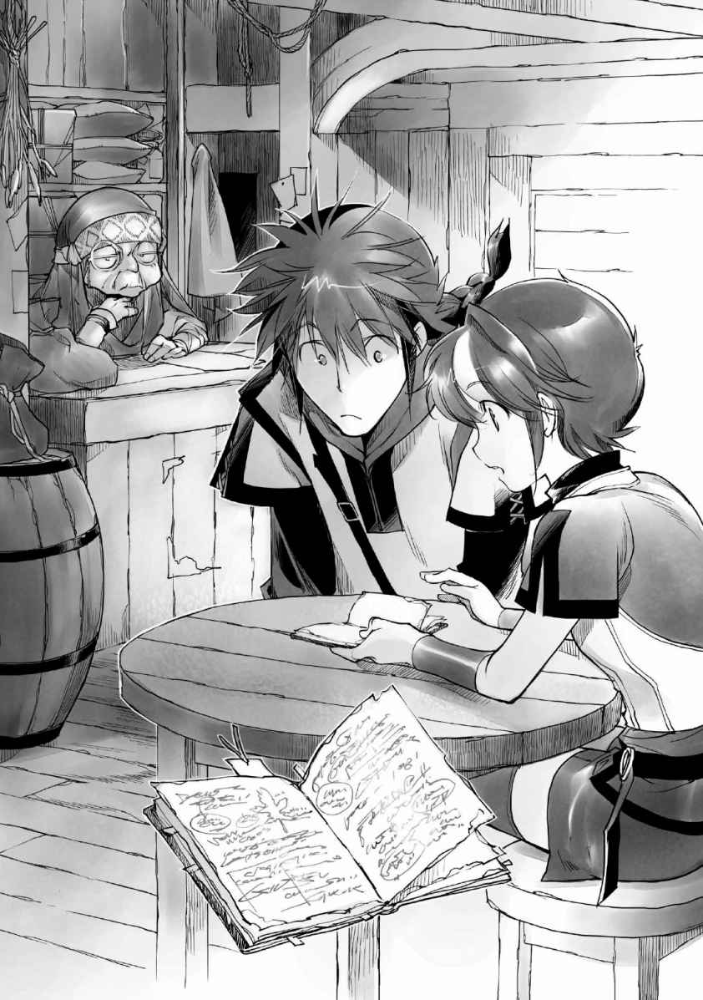
「そうですか。よかったっ」
自分のことのように嬉しそうなカーラを見て、思案する。カウンターから嫌そうにこっちを眺めている婆さんを横目にして、ぴこんっと閃いた。
「なあ、カーラ。よかったらこの傷薬作り、ちょっと一緒にやってみないか。取り分は、売れた代金の五割ってことで」
「いえ、そんな。取り分なんてっ」
ささやかな胸の膨らみの前で、慌てて両手を振る。遠くで店主の婆さんが眦 を吊りあげかける気配を感じながら、俺は首を振った。
「君のお祖父さんの日記があって試せるんだし、そういう話を後からゴチャゴチャやるのは苦手なんだ。だから、最初っから半々でいこう」
「......いいんですか？」
恐る恐る、という感じで訊ねてくる少女に、俺は頰をかきながら、
「って言うか、まだちゃんと作れるかどうかもわからないけどな。成功報酬って形にはなる。それで良かったら」
「全然っ──全然、かまいません。よろしくお願いしますっ」
カーラはまだここの町ギルドに登録できていないはずだから、もちろん冒険者として依頼を受けることは出来ない。だからこそ自作の薬草を売りに来るほどお金に困っているわけで、俺の話を聞いて素直に嬉しそうだった。
こういう風に喜んでもらえると俺としても嬉しい。だが、俺が彼女にこの話を持ち掛けたのは純粋な善意からばかりじゃあない。
俺はカウンターの婆さんに向かって、にやりとした。
「なあ、婆さん。俺とカーラがつくった傷薬。上手くいったら、もちろん買い取ってくれるよな？」
台詞の一部にアクセントをつけて訊ねると、こちらの意図に気づいた婆さんは深く皺を刻んで渋い表情をつくった。
「......売り物になるモンならね。傷薬なら、需要はいくらでもあるだろうさ」
嫌々ながらに言ってくる。
ふっふっふ、上手くいったぞ。
どうせ俺が新しい傷薬を持ち込んだところで、なんやかんやと買い叩かれるに決まってる。カーラを巻き込むことでそれを防ごうという俺の目論見はドンピシャだった。
もしも無事に傷薬が完成したら、この道具屋に売りに来る時はカーラに同席をお願いしよう。そんな風に俺が早くも皮算用を始めていると、からんっ、と扉につけられた鈴が鳴って、新たな来客の存在を知らせた。
顔を上げた俺は、そこに一人の女性の姿を見つけた。
......こんな田舎町にはまるで似合わない小奇麗な服装に身を包んだ、びっくりするくらいの美人だった。
その肌は太陽の下で働いたことなんてないというように白く透き通っていて、腰まである金髪は貴族のように念入りな手入れが行き届いているとわかる。繊細な美貌。けれどそこにある眼差しは、とても繊細の一言ですむものではなかった。
俺とカーラは店の端で椅子に座っているので、自然と相手を見上げる形にはなる。
だが、そんな位置関係とはまったく無関係に、生まれつき他人を見下ろす為にあるような視線がこちらを見下ろしていた。
その輝く氷柱 じみた眼差しは俺がアカデミーで浴びていたものによく似ている。
種族的偏見。あるいは弱者への侮蔑。
要するに、そこらの虫けらを見るような冷ややかな目だった。
二章 貴族の令嬢
▽ １△
「ご機嫌いかがでしょう、リリアーヌさん」
綺麗な女が言った。
いったい誰のことだと首を捻りかけて、その視線の向かった先で相手を知る。げ、と声が出た。あの皺くちゃ婆さんの名前の語源が「純粋」だなんて、悪い冗談としか思えない。
「ぼちぼちさね。なにか用かい、ルクレティア」
「ちょうど近くを通りましたもので。リリアーヌさんは前の寄合会にもお顔をだしてくださいませんでしたし、ご様子を伺いに」
「そりゃわざわざすまなかったね」
婆さんが答える口調に、ほんの少し億劫そうな響きが含まれているのに俺は驚いた。あの婆さんにも苦手な相手なんているのか。
「この年になると、外に出るのも面倒でね。なんにも反対なんかしやしないから、あんたらで勝手にやっておくれよ」
「そういう訳には参りません」
ルクレティアと呼ばれた若い女は冷淡に、
「私はまだこの町に戻ったばかりで、町の方々のこともよく存じておりません。皆さんと交流を持つことも役目の内だと思っています。祖父からも、リリアーヌさんにはよく頼るようにと言われておりますし」
「......町長のお孫さんです」
こっそりとカーラが耳打ちしてくれる。
この町の、長の孫。女だったのか。
娘夫婦が他界しているなら、将来的に長の役目を継ぐのはこの女になるのか？ いや、恐らく婿をとる形にはなるんだろうが──
ジロジロと不躾な視線になっていたのか、それともカーラの小声が耳に届いたのか、町長の孫娘がこちらに顔を向けた。
水の精霊ウンディーネと比べても勝るとも劣らない、凍てつくような輝きをたたえた眼差しがひたりと俺達を見据えて、
「......あまりよろしくないお客がいらっしゃるようですわね」
「他人の店の客にむかってケチつけるのかい」
おお、婆さんが俺を庇 った！ というか、カーラをなんだろうけれども。
嫌気の差したような態度の店主をちらと見て、女が言い放った。
「町の品位に関わります」
一瞬、俺はきょとんとしてしまう。
品位？ こんなド田舎の町のどこにそんなものがあるんだ？
このルクレティアとかいう女、見た目からしてどこか都会の街生まれのような格好だが、なにか勘違いしているらしい。ここは王都でもなければ商都でもないのだ。
「品位ねえ。そんなもんで食っていけたら苦労はないさ。あんたも、一度、土に塗 れてみればわかるよ」
「機会があれば、そうさせて頂きますわ」
婆さんの皮肉にも平然と応え、豪奢な長髪を払ってくるりと踵 を返す。店から出て行く直前、それから、と付け加えた。
「店の中によくない匂いが漂っています。一度、棚卸しなどなさって空気を入れ替えることをお勧めいたしますわ。それでは御機嫌よう」
なんだそりゃ。俺とカーラのことか？
さすがに俺が腹を立てかけていると、くすくすと耳元で笑い声が囁いた。
「バレちゃってるみたいですね」
俺にだけ聞こえるその声はスラ子のもの。俺が慌てて振り返りそうになるのを、覚えのある柔らかい弾力に押さえつけられる。
「マスター。あの人、すっごくイイですねっ」
笑みを忍ばせた言葉は、待ち望んでいた獲物を見つけたように愉しげだった。
「ルクレティアさんは、少し前まで王都にいらっしゃったらしくて。そこで学士院 に通ってたそうです」
「そりゃ凄い」
よほどあの高飛車女と肌が合わないのか、俺とカーラは不機嫌になった婆さんに店を追い出されてしまった。
とりあえず外を歩きながら、カーラが俺に町長の孫娘について教えてくれた。
学士院というのはこの国でもっとも優れた教育機関のことだ。人間のエリートがそこに通い、知識と教養を身につけるのと同時、熱心に社交に励む。
魔物でいうアカデミーとちょっと似ているが、学士院の方がより権威主義に近い。
良くも悪くも実力主義であり、さらには魔物世界の独特な事情もあって来る者を拒まず状態のアカデミーと違い、人間社会では教育なんてものは基本的に、金も地位もなければ受けられない。
「ってことは、けっこうな家柄なんだな。ただの田舎町の長くらいの血筋じゃ、学士院なんてところの門戸は開かないだろうし」
「町長の娘婿さんが貴族の方だったとか。それで王都に住んでらしたのが、ご両親が亡くなられて、最近戻られて」
貴族。そう言われれば納得できる容姿と態度だ。特に態度。
生まれつき自分が選ばれていることをわかっているとでも言いたげな、超然とした態度。似たようなのはアカデミーにもよくいた。そして、そういう連中が俺を見る目も大抵の場合は似通っている。
あ、なんかトラウマ入りそう。
「リリアーヌは、ルクレティアさんが長を継ぐんだろうって。その為に戻って来たらしいって話でした。ご本人もかなり腕の立つ魔法使いで、学士院でも引き留められたのを断ってきたらしいです」
「スゴイナー」
家柄も能力もあって尚且つ美人。しかも同じ魔法使いのエリート。
はっきり言って、一番苦手なタイプだった。
ヘタレな俺はあの冷たい目で一瞥されただけでその場から逃げ出したくなる。出来れば相手の視界に入るのだって遠慮したい程だったが、
「どんな声で鳴いてくれますかねー」
さっきから、俺の隣では透明な誰かがむやみやたらとテンションを上げていた。
天然で魔性なスラ子と、あの気位の高そうな相手との嗜虐性対決なんて、考えただけでも気が滅入る。俺は聞こえない振りをして、
「まあ、俺には関係ないな。けど、カーラは知り合いになっておいて損はないんじゃないか。将来、この町を治める相手ってことになるんなら」
カーラは困った顔になった。
「ボクは、彼女に嫌われてるみたいで」
「どうしてだ？」
「ルクレティアさん、ご両親が亡くなられてますから......」
──ああ。
俺はろくに考えもしないで発言した自分の迂闊さを呪った。
三か月前にこの町を襲ったというウェアウルフ。カーラにその魔物の血が流れていることを町の人間が知っているのなら、ルクレティアだけが知らない理由はない。
あの女にとって、カーラは両親の仇──とまではいかなくとも、もっともわかりやすい憎しみのぶつけ先なわけだ。
これだから人間は。俺もだけど。
うんざりと頭を振り、俺は顔を俯かせぎみに歩く気の毒な少女を見やって、
「......だったら、なおさらこの町はカーラに住みにくいだけじゃないか。やっぱり、違う街で登録なりやった方がいいんじゃないか？」
言いかけた言葉が途切れる。
顔を上げたカーラが大きな瞳でこちらを見つめていた。
「迷惑、でしょうか」
不安そうな眼差しに俺は息を吞んで、
「いや、そんなことは。傷薬作りだって手伝って欲しいし」
「よかった」
カーラはほっとしたように笑う。
俺は息を吐いた。
今のカーラの表情はちょっとドキッとした。
......どうもあれだ。先日のシィの一件以来、自分が危ない嗜好 に傾きつつあるような気がしてならない。俺は、生き方はともかく性的にはノーマルだったはずなのだ。
「イジめ甲斐がありそうですねー」
頼むからお前は黙っててくださいお願いします。
しかし、いくらスラ子の声が俺の耳元だけで囁かれているとはいえ、これだけ近くにいるカーラが気づかないのはそうした素養がないせいか。
そう言えば、腕のいい魔法使いらしい孫娘の方は、スラ子やシィの存在に気づいていたような素振りだった。
「まあ、薬を作ってみるって言っても、材料っぽいのが書いてあったってだけだし。実際、本当に作れるかなんてわからないんだ。難しい調合とかだと手に負えないしな。効用まで確かめてってなると、そうすぐにってってわけにもいかないだろう」
いくらカーラの祖父が残した覚え書きがあるとはいえ、正確な作り方が記述されていたわけではなかったから、ほとんど手探りになる。
ちゃんと商品になる代物じゃなければ、道具屋の婆さんだってそんなもの買い取ってはくれないだろう。カーラのことを特別に気にかけてはいるようだが、商売は商売だ。
カーラは恥ずかしそうに頷いて、
「ボクは平気です。しばらくやる事もないですし」
ギルドに登録させてもらず、依頼を斡旋されない冒険者なんて無職と変わらない。
「だったら、さっそく今日から始めようか。まずは材料集めからだな」
「はい！ うちの近くで見かけるようなのも多いので、集めてみます。採れたら、洞窟まで持っていけばいいですか？」
「ああ、それは──」
そうしてもらえると助かるが、依頼も受けず、頻繁に町の外の洞窟へ出入りする姿を町の連中や同業者が見たら、カーラはどう思われるだろう。
カーラのことばかりでなく、それが俺達に影響することも含めて考えていると、
「あ、大丈夫です。入る時には気をつけて、洞窟には修業で行くってことにします。もちろん、途中で出逢ったスライムのことも」
俺の躊躇 を察したようにカーラが言った。
そういう風に気を遣ってもらえるなら、正直ありがたい。
「じゃあ、面倒だろうけどそういうことで頼む。こっちは昼間、あんまり外を出歩けないし、材料集めはお願いすることが多いかもしれない。すまない」
「全然かまいません」
力強く頷いてみせるカーラ。
その表情は、世の中に悪い人なんていないんだと思わず信じてしまいそうになる笑顔だった。
家の近くで採集してきますというカーラと別れて、洞窟へ戻る。
冒険者の気配がないことを慎重に確認して中に入り、
「スラ子。シィ」
呼びかけると、目の前の空間が揺らいで二人の姿が現れた。
にこにこと微笑を浮かべたスラ子と、無表情のシィ。シィは普段通りだが、スラ子の方はいつも以上に上機嫌な様子で、
「......手強そうな相手が見つかって、そんなに嬉しいのか？」
「はい、マスターっ」
手を挙げて、元気いっぱいに答えてくる。
「こっちはげっそりだ。あんな相手、近くにいるだけでも気が疲れる」
「いかにもマスターの苦手そうな感じの方でしたねー」
「苦手だ。苦手の極致だ」
「でも、とっても有能そうな人でしたよ？」
「だからタチが悪いんじゃないか」
見かけだけじゃなくて中身まで伴ってるとか最悪だ。
「でも、あの人が町の権力を全部担ってくれるなら、逆にわかりやすいです。あの人とだけ渡り合えばいいんですから」
「わざわざ王都から戻って来たとか言ってたしな。田舎町の一つや二つ、牛耳ってやろうって気概くらいはあるのかもしらん。だが、」
「だが？」
「苦手なもんは苦手だ。できれば関わり合いたくない。どっか俺の知らんとこで生きてて欲しい」
ふふー、とスラ子が抱きついてくる。
「なんだよ」
「マスターだなあ、と思いまして！」
どう考えても馬鹿にされてるとしか思えない発言だが、スラ子は嬉しそうだった。怒る気にもなれず、振りほどくのも面倒でそのままスラ子を引きずりながら隠し部屋に向かう。
人間の俺はもちろん夜目なんて効かないので、シィが先導して灯りの魔法を使ってくれている。そのシィの足が止まった。
なにかの反響音。──奥の広間に誰かがいる。
まさか冒険者か、と身構えかけたが、すぐに俺は相手に正体に気づいた。白い魔法灯に照らされて、見覚えのある後ろ姿が露わになる。
「ノーミデス」
「んー。あー、おはよ～」
眠そうな顔でこちらを振り返ったのは、この洞窟の「天然」の管理者である土精霊 だった。
〝見た目〟は人間とほとんど変わらない。というか、人間やその他の生き物の方が「精霊の似姿」として創られたという話だから当たり前なのだが。
年頃は二十代半ばくらいに見えるが、これも人間に換算するとと言うだけだ。そもそも精霊が年をとるのかなんてわからない。褐色の肌に艶やかな黒髪。精霊はほとんど自分の身体を隠さないせいで、スラ子以上にボリュームのある身体のラインがひどくけしからん状態になっている。
「お前が起きてくるなんて珍しいな」
「んー」
とろんとした双眸を揺らし、精霊は広間の惨状をぼんやりと眺めて、
「なんかぁ、起きたら、この辺りがおかしな感じだったから～。たまにはお仕事しないとなーって」
「ああ、悪い。この間、ちょっとあってな」
数日前の戦闘の名残で、このあたりにはまだ冷気の魔素 が色濃く漂っている。
「ちょっとって～？」
「人間の冒険者がやってきたんだ。それでちょっとな」
かなり省略して伝える。相手も興味なんかないだろうと思ったからだが、果たして土精霊は気のない様子で頷いて、
「相変わらずやんちゃだね～。まあいいけどー」
やっぱり、相変わらず適当な精霊だ。
ぎゅっと俺の腕を握る手に力がこもる。俺は少し緊張している様子のスラ子の横顔を見て、そのスラ子を不思議そうに見ているノーミデスに視線を送った。
「なんか変わった子だ～」
ぼんやりと精霊が言う。
「......ああ。スラ子って言うんだ。こっちは、妖精のシィ」
「ふーん」
相手の反応はそれだけで終わり、すぐにノーミデスはスラ子から興味を失ったらしかった。
スラ子は以前、洞窟前にある湖の水精霊を捕食してしまった。
そんなことが他の精霊族の誰かに知られたらもちろんいい顔はされないはずだが、少なくともこのノーミデスにとってはそれさえどうでもいいことなのかもしれない。
精霊は各属性によって個性がまるで異なるというのは有名な話ではあるが。なんというか、本当に適当な奴だと思う。
「あたし、もう少しこの辺りを落ち着かせてから戻るからー。これからもあんまり仕事しないと思うから、適当によろしくね～」
こんな風にいい加減だから俺なんかが好きに住まわせてもらっているのだが、ここまできっぱりと宣言されるとちょっとツッコミをいれたくなる。
だけどそれでスラ子の話題に戻ったりしたらあれなので、俺は黙って広間を通り過ぎた。
「さむいの～さむいの～とんでけ～」
広間に滞った冷気を払おうと、やる気なさげに息を吹きかけるノーミデスの声が、のんびりと背中に届いた。
次の日になると、カーラはさっそく集めた薬草を持って来てくれた。
昨日の夜、俺もスラ子達と外に出かけて湖周辺で採集してみたが、その日、カーラが採ってきた量は俺達の倍近くあって、いったいどれくらいの時間がかかったのだろうと心配になるくらいだった。
「なんだかワクワクしちゃって」
ここに来る直前まで薬草集めをしていたらしく、土に汚れた手で鼻の頭をこすりながらカーラが微笑んだ。
ともあれ、これだけの量があれば傷薬作りには申し分ないので、さっそく作業にとりかかろう。
食卓に採ってきた薬草を並べて、俺、スラ子、シィにカーラ、そしてスケルがその周囲をかこんだ。
「薬作りといえば、マスターの十八番ですねっ」
「別に得意ってわけでもないが。作らなきゃ食っていけなかったからな......。そういえば、カーラもけっこう作ったりしてたんだっけ？」
「ボクも、お金がない時にリリアーヌに買い取ってもらったりしてるだけで......そんなに詳しいわけじゃないんです。ほんのちょっとした粉薬とか、塗り薬とか。それくらいで」
「うん。俺も似たようなもんだ。実際、ちゃんとした設備がここにあるわけじゃあないからな。『妖精の傷薬』を作ろう！だなんて息巻いたところで、やれることは限られてる」
「どういうことが出来そうな感じですか？」
「砕く、煮る、揉む。そのくらいだな。ああ、干すってのもあるか。この洞窟の中じゃ出来ないけど」
薄青い長髪を揺らして首を傾げたスラ子が、
「なんだか、普通の傷薬作りと変わらないような気がしますけど......」
「ぶっちゃけ、その通りだ」
俺は頷いた。
「カーラの祖父さんが残してくれた備忘録にも、細かい作り方なんて書いてなかったしな。特別な製法があってもわからないし、そういう知識を俺達は持ってないんだから、普通に作るしかない」
「でも、それだと出来上がったものが『妖精の傷薬』ってわけにはいかないかもしれませんね」
「確かに。でもまあ、大丈夫なんじゃないか？」
「どうしてです？」
「俺達にはこれがある」
と俺が指し示したのは、テーブルに置かれた包み。厳重に折りたたまれたその中には、毎日コツコツとシィから採取しておいた鱗粉が集められている。
「シィの鱗粉があれば大丈夫なんですか？」
「妖精の鱗粉ってのは、言ってみればマナの結晶粉だからな。──スラ子。マナってなんだ？」
不意の質問に、むむ、とスラ子は腕を組んで、
「えーと、この世界に満ちている、不思議なことを起こす力の源。でしょうか」
「そうだ。俺達が魔法って言ってるような不思議な現象や結果。それは全部、マナによって生じる。逆に言えば、俺達にわかってるのは〝その程度〟だ」
全員の注目が集まっていることになんとなくこそばゆさを覚えながら、
「この世界の始まりと共にマナは在った。世界は精霊により創られ、精霊はマナを象徴する存在だ。このことについて異論がまったくないわけじゃないが、少なくとも精霊はそう言ってる。そして、精霊を崇めるエルフもそれを信じてる。人間ってのは、大昔、エルフから文化とか技術を学んでる種族だからな。だから、エルフは人間から賢人族って呼ばれてる。となれば、人間種族のスタンダードもそうなるのは当然の成り行きだろう」
「他の魔物さん達もそういう考え方が一般的なんです？」
俺は頭を振った。
「いや、そういうわけじゃない。種族ごとにいろんな考え方があるし、信じられてることも違うはずだ。まあ、エルフが熱心に唱える精霊起源説が一番、有力ではあるな。けど、魔物って言っても本当に色々だから、どの説を信じてるとかって以前の場合もある」
「それ以前？」
頷いて、俺はシィを見やった。
小さく首を傾げる妖精に、
「シィ、お前達はどうだ？ マナの仕組みとか、そういう話が議論になったりするか？」
シィはわずかに眉をひそめてしばらく考えてから、ふるふると頭を振った。
「ってわけだ。マナに近い生き物になればなるほど、マナってのは〝技法〟じゃなくて〝生態〟になる。当たり前すぎて、逆に疑問を持たれないことも多いんだ。人間種族がそういう話を好きなのは、まあ、人間が決して魔法が得意な種族じゃあないってこととも関係あるんだろう」
「なるほどー」
感心したようにスラ子が頷いた。
「で、そのマナだ。マナってのは応用が効く。そのことが、逆にマナっていう正体の根っこを摑みにくくしてるんだが......まあそれはいいか。応用が効くってのは、言葉を変えれば、容易に変容させられるってことでもある。つまり、敏感なんだ」
妖精の鱗粉を指先でほんの一摘みだけして、テーブルの少し離れた場所に擦りつける。
そこに、
「ファイア」
小さな種火を呼び出して灯すと、ぼうっと大きな炎が散った。
びっくりした顔になっている一同を見渡して、
「魔法の炎に反応して、それを助ける。〝マナの結晶粉〟にはこんな使い方もある。ちょっとした火薬みたいなもんだな。もちろん、膨張──爆発だけが使い道じゃない。マナってのはこの世界のあらゆるもんに含まれてるからな。薬草にだって当然、そうだ」
「なるほどっ」
ぽん、っとスラ子が手を合わせた。
「つまり、傷薬にまぜちゃえば、その効用も高めてくれるんですね！」
「多分な。とはいえ、含まれる薬草に悪い効用があったりしたら、そっちの効果まで増強したりすることになるかもしれないから、気をつけなくちゃならない」
「雑 ぜ方に注意ってことです？」
「いろんな薬草をひたすら放り込めばいいってわけじゃないだろうな。なるべく悪い作用や、副作用。そういうのがない物を用意すべきだ。身体にいい作用だけの傷薬が出来れば、それに妖精の鱗粉で効果を底上げするだけで十分、商品としてはモノになるんじゃないか？」
それが世間一般で知られる『妖精の傷薬』と厳密には違うものであっても、効果の高い薬であるならそれだけでも十分に価値は出るはずだ。
俺は周囲の顔ぶれ、その表情に疑問の色が浮かんでいないのを確認して、
「ええと、じゃあ、そういう感じでやっていこうと思うんだけど。......それでいいか？」
誰からも不満はあがらず、そうして傷薬作りが始まった。
採ってきた薬草の土を払って、切り分けて薬種にする。
材料を細かく磨り潰す薬研 のようなものがあればいいのだが、残念ながらこの家にはない。
というわけで、手製の薬研らしき代物──窪みのある木のお椀に薬種を入れ、大きめの石を握って磨り潰していく。
「マスター。こっちのは乾燥させちゃいます？」
「ああ。洞窟の外に、なんか見つかりにくい場所があればいいんだけど」
「木の上とかだとどうですか？ わたしなら、けっこう上の方まで持っていけますけど」
「頼む。日光があたらないように、雨避けも兼ねてなにか上から被せといてくれ。ああ、通気性が悪くなっても不味 い」
「了解ですっ。ちょっと行ってきますね」
バスケットを抱えたスラ子が洞窟の外へ向かう。
スケルは流し台でお湯を沸かしていて、この場に残っているのは俺とカーラ、そしてシィの三人だ。
熱心な面持ちで、採れたての薬草から土を払っていたシィが、くしゅんとくしゃみをした。
「シィちゃん、大丈夫？」
薬効部分とそれ以外の部分を切り分けていたカーラが訊ねる。
物静かなシィはちらとカーラを見上げて、こくり。黙って頷いた。
「よかった。ボクと代わる？ こっちなら、くしゃみしないで大丈夫かも」
ふるふる。
今度はわずかに頭を左右に振ると、感情の乏しい眼差しでカーラを見つめて、こちらを見て。無言のまま、小走りに流し台へと駆けていってしまう。
「......嫌われちゃったかな」
困ったようにカーラが呟いた。
俺はあわてて、
「いや、そんなことは。シィって、妖精だけど人見知りなんだ。その、悪い」
「あ、ごめんなさい。平気です」
カーラは笑ったが、ちょっぴり寂しそうだった。
シィ、人間のこと嫌いって言ってたもんな。元々、大人しい性格だししょうがないか、と俺がどうフォローすればいいかと悩んでいると、シィが流し台から戻って来た。
その手には濡れた手拭があって、
「......どうぞ」
そっと差し出す。
きょとんとしたカーラが、
「ボクに？」
「ほっぺた。土が......」
シィは恥ずかしそうに囁いた。
「ありがとう、シィちゃん」
手拭を受け取ったカーラがにっこりと微笑むと、シィはますます恥ずかしそうに俯いてしまう。
かかか、と音がして流し台の方を見ると、湯を沸かすように指示しておいたスケルが、お盆に人数分のお茶を載せて持って来た。
俺は呆れて、
「もうお茶か？」
かかか、っとスケルが骨を鳴らす。
「それじゃ、カーラ、シィ、ちょっと休憩にしよう」
どうせ傷薬作りには時間がかかる。
売り物にするためには効用を確かめないといけないし、副作用がないかも確かめないといけない。
材料におかしなものは使わないつもりだが、人体に使われるのだから、それなり以上に安全だという信頼性がなければ、リリアーヌの婆さんだって買い取ってくれないだろうし。
薬草の日蔭干しに出かけていたスラ子もすぐに戻って来て、俺達はお茶の時間を合間に入れながら、作業を行った。
薬草作りとお茶。それにお喋り。
そんな風に数日を過ごしながら、しかし俺達はそればかりを考えてのんびりとしているわけにはいかなかった。
今、俺達は洞窟で起きたスライムの異常発生について、町からのリアクションを待っているところだ。
調査隊はいつ、どんな連中がやって来るか。
俺達はまずそのことに神経を尖らせていて、そういう情報を仕入れる為に、メジハの町の道具屋にも足しげく通ってみたりした。
今まであまり町に寄りつかなかった俺が、急に町中をうろつくようになればそれだけで怪しい。
だがそれも、新しい傷薬に使えるヒントはないか探しているという理由があれば、それなりの口実になる。酷い言い方をすれば、カーラや道具屋の婆さんの存在が俺にとっての隠れ蓑になってくれているのだった。
期待していたリアクションは思ったよりも早く、意外な形であった。
「あんたに伝言だよ」
「伝言？ なんだい、リリィちゃ──」
俺以外には誰も客がいない、寂れた店内。
一番奥のカウンターに置物のように頰杖をついていた婆さんが、そのままの姿勢で右手を振った。
それはほとんど身動きしないままのちょっとした動作に過ぎなかったが、
「うおっ」
びぃぃぃぃぃぃん、と目の前の壁にナイフが突き刺さる。
俺はさあっと顔を青ざめさせて、
「殺す気か!? 」
「ふざけた物言いするからじゃないか。もっかい言ってみな、今度は外さないよ。手のひらをそこの壁に縫いつけてやるからね」
怖え、怖すぎるこの婆さん。
絶対に堅気じゃないとは思ってたが、若い頃はなにやってたんだ。山賊か？
「き、気をつけマス......。それで、お話というのは......」
「ああ、──一度お話をしたいので我が家にお越しください、だとさ。ルクレティアから、あんたをご指名だ」
それを聞いた瞬間、俺は物凄く嫌な予感を覚えていた。
▽ ２△
「行くしかないですねっ」
「嫌だ」
ひとまず洞窟に戻って町長の孫娘からの招待について話すと、スラ子は即答。それに対する俺も即答だった。
「子どもじゃないんですから......」
「嫌なもんは嫌だ。敵の縄張り に自分からのこのこ出て行ってどうする。そんなことしたら頭からパクリだぞ、パクリ。丸吞みだ」
「蛇です？」
「似たようなもんだな」
あの俺を見下ろしてきた目は間違いなく、捕食者のそれだ。
うーん、と首を捻ったスラ子が、
「蛇っていうより、鷹とかのイメージがありましたけれど。誇り高いというか」
「やだ猛禽類とか超怖い」
どっちにしろ会いたくない相手だ。
「でも、せっかくの機会ですよ？ お話をしてみたいってことは、一方的な敵意ってわけでもなさそうですし。町側と渡りをつけるチャンスかもしれません」
「無理だっ。俺にあんな相手と交渉しろってのか？ 途中で卒倒して気絶するぞ、ほんとだぞ」
「そんな情けない宣言を堂々とされても困ります」
やれやれ、とスラ子が頭を振る。
「マスターの対人恐怖症も、相当なものがありますね。この場合は美女恐怖症です？」
「びじょこわい」
「まったく。毎日こんなに近くで美女を見てるっていうのに、いったいなにが怖いんです」
「ナニが怖いってまずその笑顔がぐあああああああ......！」
久々のアイアンクローに頭蓋骨が悲鳴を上げる。
スラ子はすぐに解放してくれたが、足がふらふらする。あわててシィが俺を支えてくれた。
「では、呼び出しは無視しておきますか？ その場合、向こうからの印象は間違いなく悪化して、交渉チャンネルは今後二度と生まれないかもしれませんが......」
む、と俺は押し黙る。
そんな風に言われてしまうと、これが得難い機会であることくらい俺にだってわかるから躊躇してしまう。
「......だいたい、町長の孫娘なんて立場の人間が、どうして町の外に住む俺みたいな奴に興味を持つ？ そこからしてまず怪しいじゃないか」
「やっぱり、妖精の鱗粉です？」
「リリアーヌ婆さんはそう言ってた」
道具屋の婆さん曰く、孫娘は店で売りに出されている「妖精の鱗粉」の存在を知り、その出所を聞いた上で俺を招待したいと言ってきたらしい。
一応、婆さんは鱗粉の出所をぼかしてはくれたらしいが、あんな代物を町の人間が容易く手に入れられるわけがないし、店に持ち込んだ相手なんてどうしたって限られる。ルクレティアもその辺りから当たりをつけたのだろう。
「普通に考えれば、他に思いつくことなんかないしな。だが、なんの為にだ？ 学士院出のエリート様らしいから、なにか魔道の研究に使おうってのかもしれんが、それで婆さんの店を通さず直接、自分に卸して欲しいって相談とかか？」
「そのためだけに、特定のパイプを持とうとするかというと、疑問が残りますね。町長さんの身内なら、お金にだって余裕があるでしょう。道具屋さんを通して買いつけたっていいはずです」
自分で言うのもあれだが、俺は怪しい人間だ。魔物なんてやってるから当たり前だが、そのことを知らない人間でも、わざわざ町の外で生活している相手を見れば普通とは思わないだろう。
立場のある人間がそんな輩と接触をしようとするなんて、普通はメリットよりデメリットの方が大きそうなもんだが。
「それでも会ってみたいって言うんだから、まあ、なにか企んでるんだろうな。だが、そんなものはつまり、」
「──ろくなことではない、ですね」
俺の言葉をスラ子が引き継いだ。
「貴族の血筋らしい相手がなにを考えてるかなんて、俺にはわからないけどな」
「ですが、だからこそ相手の弱みにもなりえます」
顎に手をあてて考え込むように、スラ子は続ける。
「相手の思惑は現時点で不明としましょう。それが我々にとって不利益を被 るものではないなら、協調関係を築く可能性もゼロではありません。町の次期有力者と懇意であれば、あるいは穏便にこの洞窟の主権についての譲歩を引き出せる可能性も。もちろん、不確定条件がクリアできればという話ですが」
現実には満額条件なんてそうそうない。上手い話には裏があるものだ。
だとしても、それはあまりに魅力的な話だった。
戦わずして洞窟の主導権を確立する。
現状、俺達の目標はその一点に尽きるのだから。
「......問題は、その交渉に立たなきゃいけないのが俺ってことだな」
「自信がありませんか？」
「あるわけない。交渉力なんて皆無だぞ。だから、こんな洞窟に赴任して来てるんだ」
アカデミーの本部にも残れず、立地条件のよろしくない管理地に追いやられるような落ちこぼれだ。
「でも、そんなマスターだからわたしを創ってくださいました」
スラ子が言った。
「マスターは、わたしを信じてくれますか？」
「......信じるさ」
「でしたら。ご自分のことも信じてください。わたしは、マスターそのものです。わたしを信じられるということは、自分を信じられるということなんです」
真摯な表情でそう言ってくれる相手に、 お前は俺じゃない、と喉元までせりあがってきた台詞を飲み下して、息を吐く。
俺を見る二人分の視線。
全幅の信頼を注ぐスラ子の柔らかな眼差しと、こちらの内心の奥まで見透かそうとするかのようなシィの静かな瞳。
......俺は自分がとことん駄目な奴だということを知っている。
だが、自分一人なら洞窟の奥に引き籠 もってしまえばよくても、今の俺には居場所を守ってやらなくちゃいけない相手がいた。それも二人もだ。
んなもん知ったことかと泣き喚きたくなる自分を押し殺し、絶対に無理だと最初から諦めようとしている弱音を蹴り倒して、目を閉じる。
「......わかった。話を聞きに行ってくる」
「はい、マスター」
嬉しそうにスラ子が微笑んだ。
メジハの町の長宅は、ちょっと前にカーラと訪れたばかりだった。
町の高台にあるその屋敷は、さすがに町の有力者が住んでいるだけあって一般的な家屋より横幅だけで倍以上ある。
玄関に立ち、古めかしい木製扉を叩くと、慇懃 な態度の中年女性が俺を出迎えた。
先祖代々、改修しながら長く使い続けているのだろう屋敷の中を歩いて客間に通される。ほとんど待つこともなく、ノックがあって家の人間が顔を見せた。
「御機嫌よう」
にこりともしないでそう挨拶してきたのは、長の孫娘であるルクレティア。相変わらず高そうな服を着ていて、冷えた麗貌には愛想の欠片もない。
「どうも」
と俺も不愛想に返す。こっちは緊張で愛想笑いを浮かべる余裕もなかっただけだった。
「わざわざ来て頂いてありがとうございます。飲み物は紅茶でよろしいですか？」
「ええ、まあ、なんでも」
そうですか、と素っ気なく頷いて家の人間に言いつけると、その後は沈黙。しばらくして使用人がお茶を持ってくるまで、相手は一言も口を利かなかった。
「来て頂いたのは、お聞きしたいことがあったからです」
お茶を運んできた使用人が下がると、それを勧めることもせずに要件を切り出す。別に和やかに談笑したいわけじゃなかったが、相手の態度はあまりにもあからさまだった。
「『妖精の鱗粉』。あれをリリアーヌさんのお店に持ち込んだのは、貴方ですか」
単刀直入。余計な言葉なんて交わす必要性がないという態度がありありとしていて、好感なんざ抱きようがない。
俺は顔をしかめて、
「なんでそんなことに答えなきゃならない」
「私が質問しているからです」
「こりゃ驚いた。王都帰りのお嬢様となると、王侯貴族並みの横柄さだって許されるんだな」
「その通りですわ」
皮肉を込めた台詞に眉一つ動かさず、女は言った。
あまりに堂々と同意されて二の句が告げないでいる俺から視線を外して、周囲を確かめるように巡らせてから、
「......今日は、おかしなものを引き連れてはいないのですね」
俺はぎょっとして、それを表情に出さないようにするので必死だった。
確かに、スラ子とシィは今日、ここには来ていない。
スラ子は不服そうにしていたが、婆さんの店でなにかに感づいていた様子だった目の前の相手を警戒したからだったのだが──どうやら正解だったらしい。
この女、あの時のスラ子達の存在に完全に気づいている。
「なんのことかわからないな」
「まあいいでしょう。あのお店には変わった方々が顔を出されているようですし。本当に、迷惑な人です」
名指しを避けた台詞には、もちろん俺やカーラのことだって含まれているのだろうが。
それどころか同じ町の人間であるはずのリリアーヌ婆さんまで公然と「迷惑」呼ばわりだ。
俺とあの婆さんは決して仲が良くはない。むしろ犬猿の仲だが、数少ない顔見知りを悪く言われて良い気分はもちろんしなかった。
「愚痴を聞かされるだけなら、帰らせてもらっていいか」
「どうぞご自由に。こちらから無理に引き止めるつもりはありません」
自分から呼び出しておいてこの言い様だ。
なんだこの女。俺達が俺達なりに打算なり目算なりあってやって来ているのがわかって言ってるのか？ ──ああ、この時点で〝駆け引き〟なのか。もう嫌だ。帰りたい。
「......せっかくだから、茶の一杯くらい飲んでからにする。わざわざ、こんなところまで呼び出されたんだしな」
「お好きに。よければお茶のお代わりもなさってくださいな。町の外で暮らしている方には、あまり口にできるものではないでしょう」
うわ、ムカツク。
腹立ち紛れに目の前のお茶をひっつかむ。うちにあるような縁の欠けた器じゃない、陶製の綺麗な茶器を口に近づけて、そこから漂う濃い香りに目をしばたかせた。
なんだこれ。花草茶 じゃないのか。そういえば紅茶とか言ってたな。
一口すすってみると──味はよくわからないが、なんだか高級そうな感じがした。それだけで、きっと美味いんだろうなと納得しかける自分の貧乏舌と貧乏な意識に、ますます腹が立った。ついでにちょっと舌の先を火傷もした。
ルクレティアも静かに紅茶を傾けたまま、なにも話さない。
聞きたいことはもう伝えてある、とでも言わんばかりの態度だった。
「......たとえそうだとしたら、どうだって言うんだ」
こちらが譲歩しないと話が進みそうにないと思って、俺は間接的に相手の発言を認めた。
「とても興味があります」
相手は冷ややかな表情のまま、
「妖精の鱗粉。こんな田舎町では需要などまずないでしょうが、その価値は非常に高い。モノにもよりますが、一般的な市場価値は砂金の十倍以上にもなるでしょう」
「あんたは魔法使いなんだってな。だからこその興味か？」
「確かに私は魔道を修めてはおりますけれど、だからというわけではありません」
女は長く垂れた金髪をわずかに揺らして、
「為政者としての興味です」
手元の器を持ち上げて、一口する。
「この町には特別な産物がありません。森と水。自然だけが豊富な所です。ですが、貴方がどうやってその妖精の鱗粉を手に入れたのか。それを知ることが出来れば、あるいはそれがこの町を豊かにするきっかけになるかもしれません」
俺は相手の正気を疑う気分で凝視した。
「なんだそりゃ。つまり、妖精の鱗粉を町の産業 にってことか？」
「いけませんか？」
初めてうっすらと微笑んでみせる。だが、その微笑は冷ややかさを帯びていた。
「自然しかないのなら、その自然を利用すればいい。森。水。妖精。それで町が豊かになるというのなら、使えるものはなんでも使いましょう」
──人間至上主義。
この女のような考え方自体は、そう珍しいものでもない。人間の、特にその支配者層には自然と浸透している思想だろう。
人間は、人間の発展と幸福に他の全てを利用してもよい。
あるいは。世界は、人間が管理することによって初めて平穏と成り得る。
こういった思想は特にこの百年ほどの間に急速に広がりつつあって、そういう考えを持って生きている人間も決して少数ではなかった。
「......平和な田舎町にとって、一番の財産は『平和』なんじゃないか？ 周辺と厄介事を起こして、戦争でもやりたいのか。近くの山に竜が棲んでることを知らないわけじゃないだろう」
「空高く飛んでいる姿を何度か見ましたわね。......そうですね、訂正しましょう。森と水、そして〝竜〟。それがこの町でした」
ぞっとした。
この女。今、ナチュラルに竜を『資源』として見やがった。
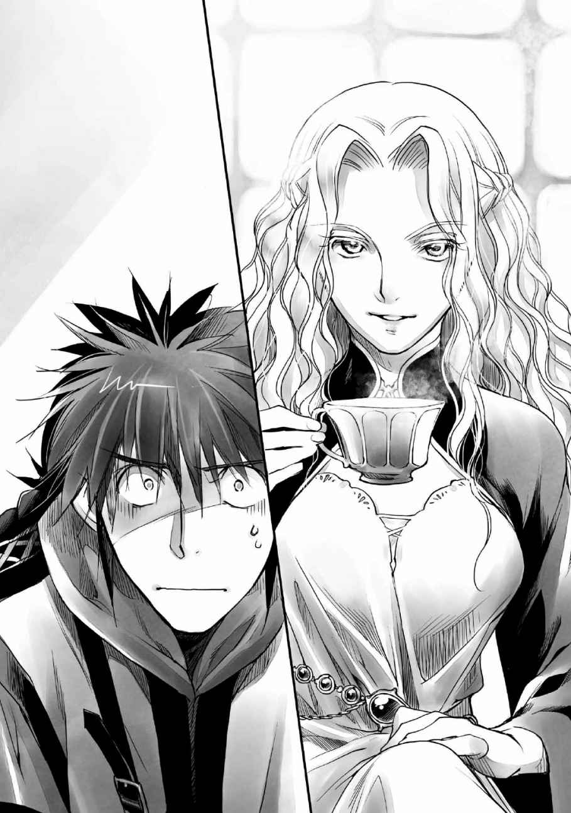
あの生きる天災、天駆ける大迷惑を捕まえて〝利用できる〟と脳裏に思い浮かべられるだなんて、その時点で頭がどうかしてるとしか思えない。
「正気か。馬鹿げた御伽話 を信じて、竜を図体だけの間抜けな生き物とでも思ってるのか？ 少しでも連中の視界で騒いでみろ、こんな町なんてあっという間に踏み潰されるだけだぞ」
「確かに私は、子どもの頃に聞いた御伽話以外、竜については特に親しくありません」
すっと町長の孫娘が目を細める。
「......ですが、そういう貴方こそ、随分と竜の生態について詳しいように聞こえますわね」
──喋りすぎた。
渋面になる俺を見て、ルクレティアは冷たい笑みを漏らした。
「少しだけ、貴方自身にも興味が湧きました。町の外に住んでいらっしゃるのも、なにか理由がおありなのでしょうね」
俺の正体を見通そうとするかのような視線を投げかけてくる。
ヤバい。相手は完全に俺よりも格が上だ。
それともこっちが雑魚すぎるだけか。どっちでもいいが、これ以上はなにか話せば話すほど、相手に迂闊な情報を与えてしまいそうだった。
黙り込んだこちらに見下ろした表情を閃かせ、手元の紅茶に視線を落とす。相手の瞳から逃れて、俺はほっと息を吐いた。
「私は近い将来、この町を治める立場になります」
緩やかな口調でルクレティアが話題を変える。
「夫を迎え、その補佐という立場に。しかし、女だからといって家の中だけに納まるつもりはありません。私は私の意思と能力とで、この町を豊かにしていくつもりです」
淡々としているが、その台詞には深い自信が秘められていた。
「その為に有用なら、貴方を使ってあげても構いませんわ。町への居住も許可しましょう。......間違っても、夫に迎えるつもりはありませんけれど。貴方のような男性は好みではありませんので」
いっそ清々しいほどの物言いに、俺は嫌味なしに笑う。
「凄いな。あんたみたいな人間は、あんまり見たことがない。ああ、でもなんかちょっと、昔の知り合いを思い出したよ」
「では、先程の質問に答えて頂けますか？ 貴方が妖精の鱗粉を一体どこで手に入れたのか、教えてくださいますね」
「......一つ聞きたい」
「どうぞ」
令嬢が鷹揚に頷く。
「妖精っていうのがどういう連中かくらいは知ってるよな。偶然、人間に鱗粉を分け与えるような気紛れはあっても、それを日常的に続けてくれるなんてあり得ない」
脳裏に、妖精らしからぬ物静かなシィを思い浮かべながら、
「あんたは〝そういう〟やり方を考えてるのか？ 妖精を、群れごと人間達に奉仕させようって？」
「そんなことが可能なら、素晴らしいですわね」
ルクレティアは小さく首を傾げて、
「しかし、さすがにそこまでは期待していません。一に効いたからと言って、百に効くわけでもないでしょう。私が知りたいのは、まずその事実。そして状況です。それ以上の詳細については参考にするだけです」
「一の方法が使えなくても関係ない？」
「事実は事実であれば十分です。百には百を得る為の方法を考えましょう」
それを聞いて俺は確信した。
この女にとって、妖精の鱗粉を町ぐるみで『産業化』するという思いつきは、今の段階でほとんど決定しかかっている。
俺が鱗粉の取得を認め、妖精達の在処 さえ教えたら、あとは自分の意思で突き進むだろう。
それが何年後になるかはわからない。
竜を筆頭に、その他の魔物達がそれぞれ幅を利かしている微妙なパワーバランスの最中 、そんな横暴が許されるはずもない。
だが、この女ならきっとやる。
森を拓き、河を汚してでも自分達の欲望を押し通す。それはまさに人間という種族が持つ強さそのものだった。
──正直なところ、俺は目の前の相手に感嘆していた。
女だからとか、美人だからとかは関係ない。
はっきりと自分の意思を持ち、目標を定めて、周囲の全てを使ってでもそれに向かって邁進しようとする。
そういう相手は素直に尊敬できる。
「質問はおしまいですか？ では、私からの質問に答えて頂きましょう」
「ああ」
俺は、ほとんど相手を仰ぎ見るようにして、
「──誰が言うか、バーカ」
ありったけの悪態を込めて、言ってやった。
「随分と幼稚な返答ですね」
わずかに顔をしかめる町長の孫娘に、
「こんなド田舎で女王様気取りの馬鹿女に、幼稚もなにもあるもんか。俺があんたに答えなきゃならないことなんて一つもない」
はっきりと言葉を叩きつける。
「私の立場は既にお伝えしていると思いますが」
「だからなんだ？」
「町の外に蔓延 る浮浪者如きが、その町の有力者から不興を買って生きていけるとでも？」
令嬢の口調は静かなまま、それはもう露骨な脅迫だった。
「好きにしろよ。俺はあんたみたいな相手、嫌いなんだ。話は終わりだな。これで失礼する」
立ち上がりかけた背中に、声がかかる。
「この私にそのような無礼を働いて、このまま無事に帰れるとでも思いますか」
「客に向かって無礼なのはどっちだよ」
俺はじろりと相手を睨みつけて、
「そっちこそ、なんの用意もなしにこんな所にやって来ると思うのか？」
──まあ、なんの用意もしてないんだが。
ただのはったりを本当だと受け取ったのか、それとも万が一の可能性を考えただけか。まあ間違いなく後者だろうが、ルクレティアは無言でこちらを見据えてから、呆れたように嘆息した。
「もう少し、頭が回る相手だと思いましたが」
「そいつは失礼」
「けっこう。ですが、一つだけ答えて頂きましょう。私が貴方からの問いに答えたように」
案外、セコい女だ。
ルクレティアは冷ややかな眼差しで、
「なにをそんなに不快に感じているのか、正直言って理解できません。妖精達への干渉がそれほど気に入らないと？ 貴方は彼らの鱗粉を、それほど平和的な素晴らしい方法で手に入れたのですか？」
「まさか」
俺は自虐するように笑った。
この女が妖精から強制的に鱗粉を手に入れようと画策したところで、俺にそれを非難する資格はない。
行き倒れていたシィを拾って、スラ子に弄 ばせた。
シィにどんな事情があろうが、今、シィが自分から俺達と一緒にいようと思ってくれていようが、そんなこととは全く関係なく。もちろんスラ子の提案とか魔力供給云々なんてのも無関係に、俺がシィにやったのは酷いことだ。
第一、魔物が相手の非道を批判するなんて笑い話にもなりはしない。
だから、俺がこの女の提案を蹴るのはそんな理由なんかじゃなくて、
「言っただろ。あんたみたいな高飛車な女が嫌いなんだよ」
相手はなにも言い返してこなかった。
ただ、その精巧な彫刻のように整った表情に僅かな朱が差しているのに気づいて、俺は早々に屋敷から退散した。
「──で。また啖呵きって帰って来ちゃったんです？」
呆れたようなスラ子の声に、俺はぶすっとした声で返す。
「そうだ」
「相手がアカデミーで自分をけなした連中に似ていたから？」
「そうだ」
「ついカッとなって、渡りをつけるどころか、ケンカを売ってきてしまったと？」
「......そういうことだ」
ため息。
「その相手に思いっきり言ってやれて、どうでした？」
「無茶苦茶スカッとした」
「それで、今の気分はどうですか？」
「調子に乗ってやり過ぎてしまったと死ぬほど後悔してる」
「せめて最後のそれがなければ、男らしい！ と思えるところです......」
やれやれと薄青い髪を振る。スラ子はもう一度、息を吐いて、
「──過ぎたことを言っても仕方ありませんね。それに、マスターのお話から察するに元々、交渉の余地はなかったようですし」
「そうだな」
自分の行動を言い訳するつもりではなかったが、俺も頷いた。
「あの女は人間至上主義者だ。魔物との共存なんて、頭の片隅にも思い浮かべないタイプだよ」
「わたし達との敵対は避けられないわけですね」
「ああ。しかも思ってた以上に頭も回りそうだった。厄介だ、厄介すぎる」
金も地位も能力もあって、おまけに美人。そんな相手とやりあわなければならなくなった。
そして、それは俺のせいでもある。
別に相手と共存できないからって、あの場で喧嘩を売ってくる必要はなかった。少しでもこちらの準備が整うまで面従腹背でも、単に潜伏しているのでもよかったのだから。
「──今から謝りに行ったら許してもらえるかな」
「そんなわけないじゃないですか」
「だよなぁ」
最後のあの顔、めちゃくちゃ怒ってたもんなあ。
「覚悟を決めてください。わたし達が生き残る為には、あの人をどうにかしないといけません」
「......そうだな」
ルクレティアはメジハの町で次代の長か、その配偶者になることが決まっている。
俺達が町の近くの洞窟に居を構えている以上、どうしたって関わることになるのだ。嫌だけど。
それとも、いっそのこと逃げるか？
スラ子とシィを連れて。洞窟のスライム達と、もちろんスケルも一緒にだ。それで、みんなでどこか遠くへ──遠くってどこだ。
一度、逃げることを考え始めたら止まらない。思考は坂を転がるように下に向かって落ちていくだけだ。
今までの人生でそのことを重々承知していたから、俺は強引にそっちの思考を閉じて、
「とにかく、考えるぞ。あの女への対策を」
「はい。今のところ、わたし達がこの洞窟にいるということは知られていないでしょうが、向こうもあからさまな敵対者を野放しにしてくれるとは思いません。これからは、マスターが町へ行く時も気をつけないといけませんね」
「カーラのこともだな。明日にでも、道具屋の婆さんに言伝 を頼んでおこう。しばらく俺達と会うべきじゃない。この間みたいに一緒にいるところをあの女に見られでもしたら、あの子の立場がますます悪くなる」
ひょっとして、もう遅いかもしれない。
初めてあの高慢な令嬢を見た時、俺とカーラは道具屋の店内で一緒だった。あれで顔見知りじゃないなんて強弁は通らないだろう。
「そうなると、新しい傷薬作りもしばらくお休みです？」
「ああ」
少し眉をひそめたスラ子に頷く。
「中止とは言わないが、それよりあの女をどうするか考える方が先決だろうな。カーラとの接触はしばらく控えるつもりなんだから、材料だって手に入りづらくなるわけだし」
「カーラさん。悲しがるでしょうね」
俺は顔をしかめた。
「仕方ない。彼女は人間だ、魔物じゃない。迷惑はかけられない」
「だったら、魔物になっちゃえばいいじゃないですか」
頰を膨らませたスラ子が駄々をこねるように言う。俺は冷静に答えた。
「それを決めるのは、俺でも、お前でもない」
魔物というのは種族じゃない。生き方のことだ。
人間の範疇から外れた生き方を、他の誰かに強制することは出来ない。
「それはそうですけど......」
スラ子はまだ納得していない様子だった。
いつの間にか随分と仲良くなっているらしい。前に考えたことは杞憂だったのかもしれない。
まあ、カーラはとてもいい子だから、スラ子の気持ちだってわかる。
「とにかく、ルクレティアだ。あいつがメジハで権力を握ればこのあたりの魔物はいずれ駆逐されるだろう。そうなる前に手を打たないと、俺達に未来はない」
「マスター。それはどんな手を使ってでも、ですか？」
スラ子が言った。
カーラの事は一旦忘れ、ルクレティアの問題へと意識を集中させている。
命令さえあればどんな冷酷なことでもやってのけそうな眼差し。その奥には、自分の望んだ獲物に牙を向けることへの興奮が潜んでいるように見えた。
......スラ子の状態には、よくよく気をつけないといけない。前回みたいなことはもうごめんだ。
あらためてそう心に刻みながら、俺は頷く。
「──なるべく穏便にだ。それは変わらない。だが、穏便に済ませる為になら、手段は選んではいられない」
唇を舐めると、緊張でひどく乾いていた。
「もちろん最悪の手段もだ。絶対に、あいつをどうにかするぞ」
三章 策動
▽ １△
「勝利条件を確認しましょう」
スラ子が言った。
俺達の間で話し合いがある時、進行役は自然とスラ子に納まる。シィは寡黙だし、俺はそういうのが得意じゃない。
「わたし達の目的はこの洞窟における主導権の確立。その為に、現状もっとも有力な脅威であるルクレティアさんの排除、あるいは懐柔です」
「懐柔か。あの女を話し合いの席につかせるのだけでも難儀だな」
人間至上主義者が、魔物との間に交渉なんて持とうとするかどうかがまず大いに怪しい。
スラ子はこっくりと頷いて、
「ルクレティアさんの行動理念というのは重要だと思います。わたしの印象では、とても現実的な人という感じでしたが......冷静な思考の奥底に、ご両親が不幸にあったことがどれほど影響を及ぼしているのか。個人的恨みの上から理屈を纏 えば、それは狂信的な価値観となって妥協の余地さえないかもしれません」
「カーラの事も嫌ってるみたいだしな」
「はい。ですが、いずれにせよ相手から譲歩を引き出す為にはこちらに相応の力があることを見せないといけません。相手にとって仲良くすればプラス。またはただ敵対していてはマイナスにしかならないという状態があって、初めて交渉の道が拓けます」
息を吐く。
「当然、戦闘もあるか」
「シンプルな意味では、そうです。ルクレティアさん個人への対処は絶対に必要ですね。とても腕の立つ魔法使いさんということですし」
ですが、とスラ子は言う。
「ルクレティアさんの〝力〟は個人のものではなく、立場やお金に関わるものです。わたし達にもっとも欠けているものでもあります」
俺は苦い顔になった。
スラ子の言う通り、今の俺達の立場では目の前に置かれた状況を「人間対魔物」という大きな構図に持っていくことすら出来やしない。
この洞窟は、アカデミーからもほとんど見捨てられているような場末 のダンジョンだ。
山の上にいる唯我独尊お気楽竜にはこんな雑魚同士の争いなんてどうでもいいだろうし、むしろ関わって来てもらったら辺り一帯が焼け野原になる未来しか見えないのでこっちが困る。
周辺の森には妖精族をはじめとする多くの魔物達が生息しているが、彼らに助けを求めるのも無理だ。
自分達のことは自分達でやれ。無理なら死ね。
それが「魔物」という生き方のごく一般的な常識だし、そもそも交渉チャンネルだって持ってない。
あえて言うならシィがいる妖精族くらいだが、そのシィもなにか理由があって妖精族の群れから飛び出してきているのだから、話し合いに行ってもらうのだって無理だろう。
「ようするに、人間対俺達か。それだけは避けたいって言ってた通りになったわけだ。......すまん」
「マスターのなさった事が、わたしの決定です」
馬鹿をした俺を責めようともせず、スラ子はにこりと微笑んだ。
「それに、状況はまだ最悪というわけでもありません。つけこむ隙はあります」
ぴっと人差し指を立てて、
「一つは、わたし達の所在が知られていないことです。ルクレティアさんはきっと、マスターのことを町の外にいる反自分、という印象で捉えていますよね？」
「町の外。それに向こうからの提案を蹴ったから、魔物寄りって印象くらいは持ってるだろうな。最悪、今の時点で俺が〝魔物〟だって決めてかかってる可能性もある」
ちょっとした会話の端々に、勘の良さが窺える相手だった。
「可能性は最悪のものを想定しておきましょう。マスターを魔物だと考えているとしても、この洞窟にいることまでは気づかれていません。逆に言えば、それがバレてしまえばかなりのピンチです」
「それこそ調査隊どころか、討伐隊が出張ってくることになるな」
「はい。それこそが現時点で考える最悪の状況だと思います。二つ目は、ルクレティアさんの立場です」
「立場？」
「ルクレティアさんはまだ町に来てすぐなんでしたよね？ マスターも初めて知ったってことでしたし」
「ああ。まあ、俺が今まで町に寄りつかなかったからってのもあるが。本人もそう言ってたな。一、二か月とかだったか」
「と、いうことは、ルクレティアさんの町における足場はまだ十分に固まっていないのではないかと思います。実際、道具屋のリリアーヌさんもあまり良い印象はお持ちじゃないみたいでした」
「ああ、そう言えばそうだな」
メジハの町の中でも特に古株らしいあの婆さんがあんな態度をとるのは正直意外だったが、考えてみればそれも当たり前かもしれなかった。
街育ちが身に染みているような生粋のお嬢様と、土に塗 れて生活してきた町の連中。そんなもの、馬が合うはずがない。
「あの女が長を継ぐことに反対してる連中だって、中にはいるかもしれないな」
「はい。積極的にせよ消極的にせよ、そういう人達は大いに使えます。敵の敵は味方、かどうかはわかりませんが、足を引っ張ってくれるだけでも十分です」
つまり連中の仲間割れを誘うというわけだ。
やり方としてはあんまり正々堂々としていない。というかセコいし、あくどいが、だからこそ俺達らしくもあった。
卑怯、陰湿、結構じゃないか。大上段から名乗りを上げてなんて御伽話 の中でやっておいてくれ。こちとら場末の弱小勢力だ、生き残るだけで必死だ。
「よし。夜中にこっそり町に行って、長の家に悪口でも書きまくるか。高飛車女は街に帰れ！とか」
「発想が子どもの悪戯 です、マスター」
半眼のスラ子。それに同意するようにシィがこくこくと頷いている。
「けれど、町のそういった内情を知るにはなにか情報源が必要です。わたし達の持つチャンネルはとても小さく狭いですし、同時に一番の問題でもあります」
そこで言葉を切ったスラ子が、言いよどむようにこちらを見た。
なにを言いたいのかはわかっている。俺は頷いて、
「カーラだな」
「......わたし達とメジハの町。その二つの存在の中間に位置するのが、カーラさんです。町の人から疎まれていては情報を集めることは難しいでしょうが、中にはリリアーヌさんのように目をかけてくれる人もいるでしょう」
性格的にも立場的にも、情報源として決して優秀とは言えない。しかし、こちらは贅沢を言える立場でもない。
「はい。そして一番の問題は、そのカーラさんが、わたし達がこの洞窟に住んでいるという情報を握ってもいるということです。わたし達の立場を最悪にするのもしないのもカーラさん次第。──今の状態で放置しておくのは、あまりに危険すぎます」
スラ子がじっと俺を見つめてくる。
その目は明らかに、俺に対してなんらかの決断を求めていた。
次の日。俺は町に向かった。
昼の時間帯、洞窟を出入りしているところをうっかり見られるわけにはいかない。姿を消したシィに外の様子を見て来てもらい、そのあと慎重に洞窟を出て、シィにはそのまま護衛代わりに町までついてきてもらう。
スラ子は留守番だ。背中に羽があるシィなら、もしトラブルがあった時にも空を飛んで逃げやすい。
町長の孫娘とあんなことになって、いきなり町に入るのを止められたりしたらどうしようかと少し心配しながら向かう途中、その町の方角から誰かが駆けて来るのが見えた。
街の人間だったらヤバい。とりあえず隠れておこう。
脇道に身を隠そうとした俺は、相手の姿がはっきりするとその必要がないことに気づいてほっと息を吐いて、それから唾を飲み込んだ。
こちらにやって来ているのはカーラだった。
「あ。こんにちはっ」
元気いっぱいの笑顔で挨拶されて、内心で思わずたじろいでしまう。
今日、俺が町に向かっていたのは、カーラにあることを伝えようとしていたからだ。正確には、その伝言を道具屋の婆さんに頼もうとしていたのだが──直接、本人に会ってしまったなら仕方ない。
「カーラ。実は......」
「マギさん、ごめんなさいっ！」
こちらが口を開きかけた瞬間、物凄い勢いで頭を下げられてしまう。
「え？ いや、こちらこそ──って、あれ。なにが？」
「今日も薬草作りのお手伝いに行こうと思ってたんですけど、さっき、ギルドの人がクエストに同行させてくれるって。お手伝い、今日は休ませてもらってもいいですか？」
ああ、そういう話か。
「それはもちろん。......ってことは、ギルドに入れてもらえそうなのか？」
俺が訊ねると、カーラは溢れんばかりの笑顔で大きく頷いた。
「はいっ。今日の依頼の結果次第だけど、入会試験の代わりにしてもいいって。口添えしてもらえるみたいなんです」
「おお、良かったじゃないか。そりゃこっちのことなんて気にしないでいいから、頑張って」
「ありがとう！ 行ってきますっ」
カーラはバスケットを俺に手渡すと、そのまま元気よく走っていってしまう。
......こっちの話をする暇がなかった。
まあ、あんなに張り切ってるし、出がけに邪魔してしまうのもあれか。
手渡されたバスケットを見る。
まだほとんど土も乾いていない採れたての草花がたくさん詰まっていた。これだけの量を同じ場所で採り尽くすわけにはいかないだろうから、集めるのには物凄い時間がかかっているはずだ。もしかしたら午前中ずっと掛かりきりだったのかもしれない。
よほど急いでいるのだろう。こっちを振り返らずに全速力で町に戻っていく後ろ姿を見送りながら、
「シィ、いるか？」
声をかけると、そっと隣から服の裾を摑まれる。
それまで姿がなかったはずの妖精がそこにいて、静かな眼差しでこちらを見上げていた。俺が手に持ったバスケットと、その中身を見てから、視線を遠くの背中に向ける。
「......大丈夫、でしょうか」
「カーラか？ どうだろうな。ルーキーを連れてくんだから、そう無茶なものじゃないだろうと思うが」
「......森に？」
あ、そっちの心配か。
「多分、妖精の泉まで行くことはないんじゃないか。森の奥まで入ったら一日じゃ戻って来れないからな。そんな言い方じゃなかったし。どこか近場のクエストだと思うが」
この森の奥深くには大きな泉がある。
そこはシィの仲間達の住処 だ。飛び出したとはいえ、町の人間が自分達の仲間のところに行くかもしれないとなれば心配になるのもわかる。
シィは小さく頭を振った。
「心配じゃないのか？」
訊ねると、それにも頭を振る。
困ったような顔で見つめられて、こっちが困ってしまった。
最近、シィとは少しずつ打ち解けられて来ていると思っていたのだが、今でもやっぱり感情が読みづらい部分はある。性分化を迎えたばかりの表情は以前より柔らかくなっていたが、物静かな性格は相変わらずだ。
「そうか。......俺はちょっと心配だな」
カーラのこと。
それに、ルクレティアのこともある。
あの高飛車な令嬢は〝妖精の鱗粉〟にかなりの興味を持っていた。そして、その妖精が近くの森に出没することはメジハの町の人間にもよく知られていることだ。
今回、カーラを手伝いに誘われたという依頼が、それに関わることだったとしてもおかしくはない。
鱗粉の確保。あるいはその為の事前調査。
例えば、「この近隣に生息する妖精族についての生態調査」なんて代物なら、ルーキーだって参加出来ないわけじゃないだろう。その場合、まず必要なのはとにかく人手だ。多くの目撃情報を集めることから始まる。
......いや、でもカーラもシィとは顔見知りなわけだし、そういう依頼だったら俺達に伝えてくれるんじゃないか？ 洞窟の外のことだから、あまり関係ないだろうというだけかもしれないが。
ふと、シィが物問いたげな視線で見上げて来ているのに気づいて、俺は小さな頭の上に手を置いた。ふわふわした柔らかい銀髪を撫でながら、
「ちょっと急いでスラ子を呼んできてくれないか。多分、自分だけ留守番にされたせいでイジけてると思うけど」
シィはなにも言わず、聞いてこないまま、こくりと頷いて。
七色の鱗粉を零す羽を大きく広げてふわりと浮かびあがる姿が洞窟の方角に飛んでいこうとする前に、俺は声をかけた。
「シィ、もしかしたら森に入ることになるかもしれない。......スケルと留守番してるか？」
森で別の妖精に出遭うこともあるかもしれない。
シィが仲間達と会うことを嫌がっていたのを思い出して俺が言うと、シィは一瞬、逡巡するような表情を浮かべてから、すぐに頭を振った。
「......私も。行きます」
いつもと変わらない小さな声。けれど、しっかりとした意思を秘めた声でそう告げた。
スラ子はすぐにやって来た。
二人を待つ間、俺は町の入り口から離れた場所で潜みに隠れていた。
こんな辺境じゃ魔物の襲撃も珍しいことではないから、町に入り口は一つだけだ。他は深い堀と柵がぐるりと囲んでいる。
カーラ達が町の外に出かけるなら、その入り口だけ見張っていればいい。盛大に藪蚊に食われながら、虫避けの草汁を塗ってこなかったことを後悔しつつそれを待っていると、
「マスター、お待たせしました。カーラさん達はまだですか？」
シィが連れて来たスラ子が、小さな袋を手渡しながら訊いてくる。
「まだだ。日が暮れる前に町へ戻るなら、そろそろ出かけとかないと不味 いと思うんだけどな。......これは？」
「虫避けのヤツです」
お、ありがたい。ちょっと遅かったかもしれないが。
とりあえず腕や首にそれを塗り込みながら、ふと思って二人の方を見やった。
「スラ子。お前はともかく、シィにも塗っておいてやった方がいいんじゃないか」
「あ、そうですね。シィ、いらっしゃい」
シィはちらりと俺の手に持った塗り薬を見て、それに鼻を近づけると、顔をしかめた。匂いが気に入らないらしい。無言で距離をとろうとするシィを捕まえて、スラ子がその全身に薬草を塗りつけていく。
「ふふー。せっかく綺麗な肌なんだから、痕になったりしたらもったいないですよ。シィの格好は露出も多いんだから、しっかり塗っておきましょうねー」
「あんまり苛めるなよ」
いやいやと抵抗するシィと、やけにノリノリなスラ子に呆れながら、俺が町の入り口に視線を戻すと、
「──来たぞ」
ちょうど数人が外に出ようとしているところだった。
男三人。それにカーラの姿もある。
「四人か。まあ普通っちゃ普通の人数だな。近場の魔物退治とかかもな」
冒険者というのは、特に田舎の場合には「何でも屋」の色合いが強くなるが、元々この国で冒険者なんていう立場が社会的に認められているのは、魔物が跋扈 する中で各集落が自衛する為の手段としての存在だからだ。言ってみれば用心棒みたいな扱いになる。
だから、魔物の襲撃に対する防衛や、その先制的予防としての駆逐。そこまではいかなくとも、定期的に魔物が集まりそうな場所に人をやってそれを〝散らす〟ことは、冒険者としてはむしろ基本的な役割と言える。俺達の洞窟へ冒険者達が来るのもその類だ。
さらに言えば、あの洞窟には大して濃い魔渦がないし、洞窟の中ということで生態系も安定している。そういった不安要素が少ないからこその『初心者用』というわけだった。
「この辺りの近場っていうと、どのあたりでしょう。わたし達の洞窟に向かうわけでもないようですし」
「まあ、それならさすがにカーラが教えてくれてただろうしな。魔物なんてどこにでもいるからなあ。一番、溢れかえってるのは森の中だが」
森というのは文字通り、人間にとって未開の地だ。
暗く、日の光さえ届かない深い森の奥は、外とはほとんど異世界といっていい。そこには多種多様な生き物や魔物が、それぞれの価値観と生態を絡み合わせて、単純でいながら複雑な生き方模様を描いている。
魔物に遭遇したいなら、一番手っ取り早いのは森に入ることだが、その森から「魔物を駆逐する」なんて不可能だ。それこそ森全体を焼き払うしかない。そして、そんなことをしたら自分達の首を絞めることになる。
森の恩恵を生きているのは町の人間も同じだ。加えて、森という格好の餌場がなくなった場合、飢えた動物や魔物がどこにそれを求めるかなんてそれこそ火を見るより明らかだろう。
「とりあえず、後をついていこう。姿消し の魔法、俺にもかけてくれるか？」
こくりと頷いたシィが背中の羽を震わせる。そこから零れた七色の鱗粉が、新緑の色に淡く輝いたかと思うと、うっすらと俺達の身体に膜のようなものがかかった。
腕を見下ろしてみる。自分からは見えているが、これで俺達以外からは〝消えた〟状態になっているはずだ。
「どのくらい隠れていられる？」
俺が訊ねると、シィは不思議そうに首をちょっと斜めにして、
「ずっと。大丈夫です」
あっさりと言われてしまい、俺は内心で舌を巻いた。
魔法の達者さで知られる妖精族だが、彼らの扱う魔法の凄さはその持続性にある。
魔法というのは世界に満ちる魔素 を扱う技術だ。
それによって、不思議な運動や結果を残す。火を熾 したり、雨を降らしたり、岩を生やしたり。その応用はほとんど限りがないが、決して万能というわけではない。
一般的に、魔法というのは持続力に乏しい。
例えばちょっとした火を熾すことくらいは俺にも出来るが、その火をずっと放出し続けようとすると、途端に難度が跳ね上がる。城一つ爆砕できるような大魔法使いが、蠟燭 くらいの炎を三日と灯し続けることの方が遥かに難しいなんて言葉を残していたりする。
瞬間的な火力を発揮することと、その火を長時間に亘って維持すること。
この二つはまったくの別問題なのだ。
ややこしいのは、一瞬だけ熾した火が、その魔法を使うのを止めた瞬間、消えてなくなってしまうわけではないということだ。
水を呼び起こせば、その水は地面に浸み込んでも消えてしまうことはなく。岩を生やせば、その岩が幻のように失われることはない。
火もそうだ。ただし、もちろん魔素 によって燃えていた火は、それが失われた瞬間、なにかそれに代わる燃えるものがないと消えてしまうことにはなる。
即時性と瞬間性、そして永遠性と永続性。
このあたりの微妙な関わり方については魔法を扱う上で特に重要とされている箇所だが、それは特に人間種族についての話でもある。
この世界に魔素 を扱う生き物、魔物はたくさんいるが、その中で人間という種族は決してそれに秀でているわけではない。むしろ苦手な部類に入る。
そのもっとも〝苦手〟な領域が、つまりは「持続性」だ。
逆に、それを得意としているのがシィ達のような妖精族だと言われている。背中の羽を通して大気の魔素 を呼吸して生きる妖精達は、放出する力の大きさにもよるが、ほとんど永遠に魔力を放出することも出来るという。
だから、ずっと姿を消していることくらいシィにはなんでもないんだろう。
ずっとどころか一瞬も姿を消せない俺からすれば、シィの腕前は遥か彼方の雲の上だ。レベルが違いすぎて歯ぎしりする気にもなれない。
俺は黙ってシィの頭を撫でた。
されるがままにシィも黙っている。
撫でる。
撫でる。
撫でる。
あ、ちょっと嫌そうな顔になった。
「マスター。カーラさん達が行っちゃいますよ」
「お、いかん。追うぞ」
どこかへ向かおうとするカーラ達の後ろをつけて、俺達は追跡を開始した。
カーラ達が向かったのは町のすぐ近くを流れる小川だった。
川べりに何匹かのゴブリンが集まっている。なるほど、こいつらが町の近くで悪さをする前に追い払おうってことか。
「なんだ。いかにもルーキー向けの簡単な依頼だな。一晩の酒代くらいにはなるんだろうが」
ゴブリンというのは集団で群れていることが多い。狡猾だし、数が揃うとかなりやっかいな魔物だが、数匹くらいならたいした脅威にはならない。
だからこそ、今のうちに撃退してしまおうというのだろう。
「とにかく、これなら問題ないな。森にも入らないし、鱗粉の件とは別みたいだ」
カーラが危ない目に遭いそうならこっそり援護することも考えていたが、どうやらそんな必要もなさそうだ。
俺達が見ているうちに、カーラ達がゴブリンに突っかかっていく。
ゴブリンというのは個体では強くない。それに数までほぼ同数なら勝負にさえならないはずだ。実際、瞬く間に蹴散らされ、逃げ惑って離散する。
カーラも一体のゴブリンと対峙していた。
魔法も扱わず、剣さえ持たない彼女は素手で相対していてちょっと心配になったが、無用だった。
ゴブリンが握る棍棒を躱 したカーラが拳を振るう。
一発でノックアウト。
ううむ、強い。ほんとにルーキーレベルじゃないな、彼女。
狂暴化 の気配もないみたいだし、これなら安心だ。
帰ろう、と振り向きかけたところで、スラ子がなにやら思案顔でいるのに気づいた。
「スラ子？」
「......ちょっと気になりますね」
気になる？
「はい。この依頼、いかにもルーキー向けだって、さっきマスターもおっしゃってましたよね」
「ああ。実際、一番簡単なヤツなんじゃないか。俺達の洞窟に白石鉱 削りに来るのと同じレベルだと思うぞ」
「そのルーキーさん向けの依頼を、どうしてそれなりに経験がありそうな人達が受けているんでしょう？」
「そりゃあれだ。メジハなんてただの田舎だしな。美味い依頼なんて、然 う然 うないんだろ。こういう小遣い稼ぎでもしてなきゃやってられないんだろうさ」
冒険者なんて言うと格好もつくが、結局は他にまともな職にもつけないで、真昼間から酒飲んで管巻いてる連中がほとんどなのだ。
「だとしたら、そのお小遣い稼ぎにカーラさんを誘うって変だと思いません？ その分、自分達の取り分が減っちゃうわけですし」
スラ子は納得しなかった。
「うーん。それはあれじゃないか。簡単そうだから、ついでにカーラの試験もやってやれって別料金が入ってるとか──って、それはちょっとありえないな」
カーラはメジハの町では決して好かれていない。むしろ疎まれている。
そのカーラがギルドに入る為の再試に、わざわざ別料金を積むなんて厚遇はありえないだろう。
「もしかしたらカーラ、ただ働きなのかも知れないな」
「それもあるかもしれませんけど、それ以上に気になる部分があるんです。あの町長さんに前にお会いした感じだと、わざわざカーラさんの為にチャンスを与えてくれるような人には思えませんでした。ですから、カーラさんが今日誘われたのは、よほど緊急的な事態だったのかと思ったんです。カーラさんの能力が必要なような」
「カーラの能力っていうと、戦闘能力か？」
「はい。狂暴化の有無も含めて、カーラさんは戦力としては破格です。そういう相手が一人でも多く必要な場合だとか、それだったら納得できるんですが......」
むうっと腕を組んで考え込むスラ子。
俺もつられて腕を組みながら、確かに、と思い始めていた。
カーラはメジハの町で厄介者扱いされている。ギルドに入れたくない、できれば町からも出て行ってもらいたい、というのが町の連中の本音だろう。
仕方なく事情があって助力を求めるしかない状態で、渋々ギルドへの入会を認めるとかならともかく、今の状態であっさりギルドへ入らせるなんて妙だ。
妙に感じるということは、なにか俺達が気づいていない、それ以外の理由があるということだろう。あるいは、誰かの思惑。
脳裏に浮かんだのは一人の姿だった。
「──ルクレティアか？」
「その可能性はありますよね」
スラ子が頷いた。
「カーラさんとマスターが一緒にいたのは、ルクレティアさんも町の道具屋さんで見ているはずです。顔見知りに思われていてもおかしくありません」
「むしろ、そう思わなきゃおかしいだろうな。町長の身内なら、ギルドにだって手が回せる」
だが、どうもわからない。
「ルクレティアがカーラに今日の依頼を受けさせるようにしたとして、一体どうしてカーラのギルド入りを後押ししたりするんだ？ 両親のことでカーラのことを嫌ってるんじゃなかったのか？」
「多分、マスターとの繫がりを有用だと認めているからじゃないでしょうか。今のところ、マスターとの間に交渉の可能性は残ってなさそうではありますけれど、将来的に状況が変わった場合、交渉のチャンネルを持っていることは損にはなりません。その時の為にも、手元に置いておく価値があると判断したんじゃないでしょうか」
「ああ、なるほど。個人的感情はともかく、か......」
「カーラさんの存在そのものが、マスターとの交渉材料になる可能性も考えているのかもしれません。実際、カーラさんの身柄を押さえられるというのはけっこう不味いと思います」
「カーラは俺達があの洞窟に住んでることを知ってるわけだからな」
いつカーラからその情報が漏れるかわからない以上、こっちの生殺与奪はあの高飛車な金髪の令嬢に握られたも同然になってしまう。
「どうしますか、マスター」
スラ子が言った。
まっすぐにこちらを見つめてくるその眼差しは、途方にくれているのでもなければ、判断に迷っているのでもなかった。
文字通り、全てを俺次第だと考えている目だった。
どんな判断でも、スラ子は俺の判断に従ってくれるだろう。それは信頼か、あるいはそれよりもっと根深いところに起因するものだ。
俺はそのスラ子の視線から逃れるように、遠くの川べりを見やる。
ゴブリンとの戦闘はとっくに掃討戦に移っていた。散り散りになったゴブリンを追いかけ回していた冒険者達が戻って来る。被害はゼロ。完勝だ。
カーラも傷を負わなかったらしく、ほっとした様子を見せている。そのカーラに他の冒険者が声をかけて、なにか嬉しいことを言われたのか、カーラが喜んでいる。
──きっと、ギルドへの入会が上手くいきそうなのだろう。
本当に、本当に嬉しそうなカーラの姿を遠くに眺めながら、俺は内心で判断を固めていた。
▽ ２△
その翌日、俺は再び町に向かった。
今日もシィについてきてもらって、スラ子には留守番を言いつけてある。自分だけいつも残されるのが不満なのか、スラ子はかなり不貞腐れていたが、仕方ない。
道具屋に入ると、
「あ。マギさん、こんにちはっ」
昨日と変わらない、それ以上に明るい表情のカーラが俺を迎えてくれる。
「......ああ、こんにちは」
カーラは今日も手にバスケットを持っていた。そこにもたくさんの草花が溢れているのを見ながら、俺はごくりと唾を飲み込んで、
「カーラ。話があるんだ」
「ボクにですか？」
「ああ、実は......」
言いかけて、視界にいる婆さんの存在に気づく。
カウンターに頰杖をついて半眼でこっちを眺めている相手に、
「婆さん」
「なんだい」
「ちょっとの間、死んだ振りでもしててもらえないか──痛え!? 」
ぶん投げられた小物が額に直撃した。
「老人相手に縁起でもないこと言ってんじゃないよ、このアホタレ。聞かれるのが嫌なら外でやりなっ」
そりゃそうだが、なにも物を投げなくたっていいだろう。
いや、ナイフを投げつけられなかったことを感謝すべきなのかもしれないが。
気を取り直して、カーラを見る。
高くもなければ低くもない、年相応に小柄な少女は、緊張した面持ちでこちらを見上げていた。
不安と期待に満ちた眼差し。後ろで組まれた手がそわそわと揺れている。
......物凄く居たたまれない。
ぱっちりした大きな瞳の中で、しかめっ面をしている自分を見るようにしながら、
「えーと、あれだ。例の、新しい傷薬のことなんだけど」
「はい」
「あれ、もう大丈夫だから」
「え？」
きょとんとして、瞬きする。
「しばらく大丈夫だ。だと思う」
「えっと、」
要領を得ない俺の言葉に、カーラが戸惑うように表情を曇らせて、
「なにか問題でも？」
「あー、問題っちゃ問題なんだが。実は妖精の、」
適当に言い訳をしかけて、婆さんがいる前で鱗粉のことについて詳しく話すわけにもいかないと思い直して、口をつぐむ。他になにか上手い口実はないかと思考を巡らせて、そんなもん思いつくほどよろしくない自分の頭に絶望した。
「とにかく。とりあえず、しばらくの間はストップしようと思ってるんだ。だから、手伝いも今は大丈夫だから。またお願いするよ」
「そうですか......」
カーラは手に持ったバスケットに残念そうな視線を落としてから、
「わかりました。──あの、それじゃあ、お手伝いじゃなくって、また遊びに行ってもいいですか？」
「......いや、それも止めておいた方がいい」
「え──」
大きく目を見開いたカーラが言葉を失う。
「ええっと、ほら、あれだ」
また言い訳を考えかけて──だいたい、言い訳ってなんだよと自分を詰 った。
言い訳も悪い訳もあるか。
そんなので誤魔化したってしょうがないだろうが。
「とにかく。しばらく会えない」
言ってから、言い方ってモンがあるだろうと自分で思った。
「......そうですか」
カーラが困ったように笑った。
「わかりました。それじゃ、......またお手伝いできることがあったら、いつでも言ってくださいっ」
無理に浮かべた明るい表情で元気良くにっこりと笑うと、ぺこりと頭を下げて。
手に持ったバスケットをこちらに押しつけると、そのまま店の外に出て行ってしまう。
待てと声をかけられるはずもなく、俺は苦い顔でカーラの後ろ姿を見送った。
はあ、とため息をついて、
「──っ!? 」
後頭部にさっき以上の衝撃が走った。
ごとん、と投げつけられた算盤 が鈍い音を立てて床に転がる。俺はその隣に頭を抱えてうずくまって、吠えた。
「商売道具を投げつけてんじゃねえ！」
カウンターの向こうからゴミを見る目でこっちを見下ろしている婆さんが、
「うるさいよ。いいからさっさと拾ってよこしな、この駄目男」
自分で投げつけておいてこの言い様。
とんでもない婆さんだ。
「ったく。壊れてたって知らねえぞ」
「そん時はあんたに弁償してもらうだけさ」
「なんだよその理不尽!? 」
ずきずきと痛む頭を押さえて涙目の俺を睨みつけて、婆さんは吐き捨てるように言った。
「あの子に悪さしたら許さないって言ったろ」
「悪さなんてしてないじゃねえか！」
「言葉だって暴力だよ」
「自分が純粋な暴力やっといて、言う台詞か......!? 」
口を尖らせながら、店を出る前のカーラの表情を思い出せば、それ以上なにを言うこともできない。
胸にはじんわりとした罪悪感。だが、仕方ないじゃないかという思いもある。
カーラの立場は微妙だ。
ルクレティアが俺達との関係に目をつけている可能性がある以上、俺達とカーラが関わりを持ち続けることは、カーラに迷惑をかけかねない。
せっかく入ったギルドだって、俺達のせいでまた追い出されてしまうかもしれない。それどころか、町での立場がもっと悪くなってしまう恐れもある。
......昨日、カーラは本当に嬉しそうだった。
他の冒険者連中と一緒に依頼をこなして、その結果が認められたことを心から喜んでいた。
だったら、こうしておいた方がいい。
カーラは〝人間〟だ。
俺のような〝魔物〟とは違う。
「ま、言い訳しないことだけは褒めといてやるよ。どうせ、ルクレティアに呼ばれた時になにかあったんだろうからね」
俺はぎょっとして目の前の年齢不詳の婆さんを見た。
「......知ってたのか？」
「馬鹿だねえ。自分からバラしてどうすんだい、かまかけにもなりゃしない」
心の底から呆れた表情で言われて、初めて己の間抜けさに気づいた。
「ぐっ......」
「ま、なにを言われたのか知らないけどね。ルクレティア、あの子も今は必死なのさ。この町にまだ来たばかりだからね」
俺は意外な気がして眉を持ち上げた。
「肩を持つのか？ あんたはあの女のこと嫌ってるんじゃないかって思ってたんだけどな」
「孫みたいな年齢の相手に、嫌うもなにもあるもんかい。ただ、昔の自分を見てるみたいで苦々しくはあるけどね」
一瞬、自分の耳を疑う。
「──昔の、なんだって？」
「昔のあたしだよ。どことなく面影があるだろう？」
「はっはっは。いいギャグだな、婆さん。だが笑えねえよ、似てねえよ。もっかい言っとくぞ。似てねえよ。念の為にもう一回、言っとくか？」
「うるさいね。あんたは昔のあたしを知らないからそんなことが言えるんだよ。......あんな性格だからね、町に溶け込むってこともできやしない。あの子なりに必死なのさ」
必死ねえ。
とてもそんな可愛げがあるようには見えなかったが。むしろ私に尽くすのが当然の義務とでも言いそうな、そんな傲慢さを全身から発しているような女だった。
ふと思う。
確かにそういう理不尽さや我儘 さは、目の前の婆さんとあの町長の孫娘は似ているかもしれない。
外見についてはわざわざ言及するまでもないだろう。多分、ルクレティア本人に言っても眦 を吊りあげて激怒するに決まっている。
「あの子になにか言われても、悪いことは言わない。下手に騒がないことだね。あの子だってなにもこの辺りを全部搔き回そうとしてるわけじゃないはずさ」
「そうならいいんだがな」
疑わしさを隠しきれずに俺が言うと、婆さんもあまり自信がないのか顔を皺くちゃにして、
「なんでもいいから実績が欲しいんだろうよ」
「実績、ね」
「王都なんて都会から戻って来たのには、まあ色々と事情もあるんだろうけどね。結局はあの娘だってカーラとおんなじで、町の人間にとっちゃただの余所者 なのさ。今のままじゃあ、いずれ婿をとって自分は一生、家の中。それが我慢できないならどうすればいい？ 自分の力で周囲の町の人間に認めさせるくらいの結果を出すしかないだろう。あの子があの子らしく生きようとするなら、それしかない」
「......ああ、なるほど」
スラ子が予想していたように、ルクレティアはルクレティアで地歩固めに懸命なのだろう。
妖精の鱗粉についての関心も、つまりはそれ。
特産品もない町に新しい利益をもたらせば、確かに功績になる。それが安定した『産業』にまでなれば、それだけでルクレティアのこの町における地位は盤石になるに違いない。
──ルクレティアも必死。
そりゃそうだ。誰だって自分のことで精一杯、生きているんだから。
「特別なことなんてやらなくていいんだけどね。町の連中と一緒の時間を過ごして、畑仕事でもするのが一番なんだ。十年もすりゃ町の連中だって余所者だなんて思わなくなる。だけど、焦ってるように見えて心配さ。しまいにゃ調査隊を自分で引率するなんて言いだす始末だ」
「調査隊？」
思いもよらなかった単語に思わず聞き返すと、婆さんは渋い顔になって手を振った。
「あんたには関係ない話だったね。忘れとくれ」
口が滑ったと思ったらしい。それからは貝のように押し黙る相手に、俺はこれ以上の情報は聞き出せないと判断して、
「それじゃあ、帰る。カーラのことよろしく頼むよ」
「あんたなんかに頼まれなくたって。......ルクレティアが落ち着くまで、せいぜい騒ぎを起こさないことだよ。あたしは忠告したからね」
はいはい、と肩をすくめながら俺は店の外に出た。
洞窟に戻って、カーラとのやりとりについて言った瞬間、
「マスターのサイテー！」
眉を吊り上げたスラ子から非難の声が上がった。
「その言い方、なんかおかしくないか？」
「サイテーなマスター！」
「いや、いいけどな。しょうがないだろ。今のままじゃ不味いから、なんとかしろって言ったのはお前じゃないか」
「言いは言いましたが、言い方ってもんがあります！」
スラ子はぷりぷりとした表情で言った。後ろから抱かれるようにしたシィも、こくこくと静かに頷いている。
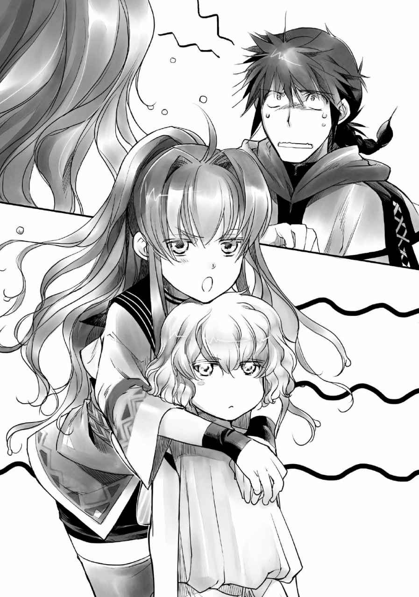
状況は一対二。
明らかに劣勢の戦況下で二人から非難の眼差しを受けた俺は、大きく息を吸った。
そして、
「クケー！」
「奇声なんか上げても誤魔化されません！」
「ええい、うるさい！ 黙れ、黙れーい！」
「逆ギレだー！」
わーわーぎゃあぎゃあと言い合って、いい加減に息も切れたところで嘆息する。
「言い方が不味かったのは、わかってる。悪かったよ。......カーラにはちゃんと謝る。この件が片付いた後でな」
スラ子がじとっとした目で俺を見て、
「絶対ですからね」
「わかってるよ。それより情報だ。──おい、いい加減にその目をやめてくれ。シィ、お前もだっ」
むー、とまだ機嫌が良くない様子だったスラ子だが、
「調査隊だ」
俺の台詞に眉をひそめた。
「調査隊？ それってこの洞窟へのです？」
「ああ。多分な」
「いつ来るかわかったんですか？」
「いや、それはわからん。だが近いうちだろう。問題はそっちじゃなくて引率する相手のことだ。ルクレティアが直接、調査に乗り出してくるらしい」
「......確かな情報です？」
「わからん」
俺は正直に答えた。
「だがそれなりに確度がありそうな情報ではある。出所は道具屋のリリアーヌ婆さんだ。詳しい話は後で話すが──それが本当だったら、どうだ？」
スラ子が頷く。
「チャンスですね」
「そうだ。今の状況を一気にひっくり返すことだって出来るかもしれない。いっぺんでおしまいになる可能性もある。ピンチでチャンスだ」
「ルクレティアさんを、直接〝どうにか〟してしまう。──生きるか死ぬかの大勝負ですね」
真剣な表情に俺も頷いて応える。
「どっちにしても、緊急事態だ。すぐに対応について考えよう。時間がない。連中、明日にだってやって来るかもだ」
戦うなら戦う。
やり過ごすならやり過ごす。
どちらの場合でも、早急に対策を検討しなくちゃならない。
相手は学士院出とかいう腕利きの魔法使いだ。ちょっと前、ルーキー達を相手にしたようにはいかないだろう。
突然の事態の展開に、俺達はさっそく作戦会議に入った。
調査隊を率いてやってくるルクレティアをどうするか。
おおまかに考えれば、その選択肢は戦うか、隠れるかの二択になる。
元々、スラ子が考案した『ドキッ（略）』作戦では、異変の報告を受けてやってきた調査隊を無事にやり過ごすまでが作戦の一環だった。
だが、ルクレティアが調査に乗り出してくるとなると、その作戦にも若干の修正が必要になる。
何故なら、あの女は、自分が町での立場を固める足掛かりにする為に洞窟の調査に来るだろうからだ。
普通の調査隊なら、異変が見つからなかったなら見つからなかったですますだろうが、ルクレティアの場合はそうはならないはず。
調査に行ってみました。なにもありませんでした。じゃ実績にならないのだから、スライムが大量に発生していた原因を突き止めるか、それに至らないまでにしても、今後また似たようなことが起きる可能性があるかどうか。そういった何かしら意味のある確証を得られるまで調査を粘る可能性は高い。
少なくとも、ちょっと調査して別に異常なんて見つからないし帰りましょう、なんて適当さは期待できなかった。これは俺達の見通しが甘かったということでもあるだろう。
さらに、ルクレティア自身が腕の立つ魔法使いでもあるという話だ。
この国のエリートが集まる王都の学士院で学んでいたというなら、当然そのレベルが低いはずがない。
一口に「魔法使い」といっても、実戦畑と研究畑じゃだいぶ意味合いが違っては来るが、魔素 の流れや違和感。そうした場の異常に気付く感覚は十分に高いだろうことが予想できる。
俺達の住む洞窟、そのダンジョンの奥にある生活空間の仕掛けが今まで気づかれなかったのは、別に隠され方が巧妙だからというわけではない。あくまで、やってくる相手がほとんど全てルーキー達だったからだ。
いかにも勘の鋭そうなルクレティアが来れば、広間の奥にある隠し扉なんてすぐに気づかれてしまうだろう。
そして、そうしたことを考えれば自ずと結論は一つに絞られてしまう。つまり──
「戦うしかないですね」
スラ子の言葉に、俺も頷いた。
「あの女が奥の隠し扉に気づきさえしなければ、なんて幸運に期待して丸投げするのはリスキーすぎるからな」
だが、ルクレティアと対決するのはいいとして、敗 ければその時点で俺達はおしまいだが、勝ったからといってその後処理が大変だ。
ルーキー達を生きたまま追い返すことに拘ったのと同じく、調査隊の連中だって殺してしまっては不味い。しかもその中に町長の身内がいたりなんかしたら、町側だって黙っちゃいないだろう。
もっと戦力を増強した調査隊、いや討伐隊が送られて、それを撃退すればさらに戦力が増強され、それがエンドレスに続く。人間族お得意の人海戦術という奴だ。
「その辺りについては後で考えましょうか」
「かまわんが、当てはあるのか？」
俺が訊くと、スラ子は妖艶な微笑を浮かべてそっと唇を撫でた。
「やっぱり、最終的にはお願いするのが一番かなあと思ってます」
「......説得か」
ちらりとシィを見ると、恥ずかしそうに頰を赤く染めている。
「ふふー」
今からその時が楽しみで仕方ないと言った表情のスラ子になにを言う気にもなれず、俺は頭を振った。話を進める。
「じゃあ、戦闘だ。あの女が俺みたいな研究畑か、それとも実戦もイケるのかでだいぶ違うが、これはヤバい方を想定しておいた方がいいな」
「腕利きの魔法使い、ということになると警戒が必要ですね」
「魔法使い」というのは後衛から支援、中遠距離戦を担当する役割の名称だ。そう呼ばれる相手は大抵、接近戦には弱いことが多いが、その分、距離を保っての支援や攻撃が強力だから、もっとも警戒すべき相手でもある。
役割的なところで言うと、俺達のなかではシィが一番それに近い。俺は遠近問わず戦闘方面はからきしだし、スラ子は魔法だけじゃなく身体を変化させて接近戦までイケるというチートっぷりだ。
「洞窟の中だからな。落盤が起きるような類の魔法は制限されるだろうが」
「爆発で生き埋めとか怖いですしね。もちろん、ルクレティアさんがお一人でやって来るということもないでしょうけれど、同行するのは町のギルドに登録してる冒険者さんでしょうか？」
「王都の生まれなら、そっちにだって伝手はあるかもしれんが、ここから王都まで一月はかかる。わざわざそんな所から呼び寄せる手間も金も考えると、あんまりありそうにないな。ここから一番近い〝街〟ならギーツだから、そこのギルドに応援要請て線もあるが、そっちだって時間がかかるのは一緒だ。予備調査ってわけじゃないが、可能性として高いのはまず町ですぐに集められる戦力じゃないか？」
「もし近くの街から戦力を招くくらい日数が空くことになれば、その時にはその時の対応が必要ですね。ひとまず、手元の戦力で明日にでもやって来た場合のことに注力すべきですが」
「洞窟内の調査スキルに長けてるような都合のいい人材が、こんな辺鄙 な田舎町で見つかるとも思えないしな。基本、一緒に同行するのは護衛役で、調査はルクレティアが受け持つって感じだろう」
「規模も問題ですね。いきなり十名以上で、というのはないかもしれませんが、少数ということもないでしょう。どちらにせよ、難しい戦いになりそうですね......」
すいすいと会話が進む。
決して他人との会話が得意じゃない俺だが、スラ子とのやりとりならスムーズにいく。
やっぱり、根底にある情報が同じだからだろうか。
スラ子が生まれながらに持っている知識は、俺の知識をベースにしたものだ。もしかするとそれは、ずっと一緒に住んできた親兄弟が時に阿吽 の呼吸で物事を進めるようなものに近いのかもしれない。
「それに対してこちらの戦力は、わたし、シィ。それからスライム達と──」
そこで言葉を区切ったスラ子が俺の方を見る。
俺は頷いて、
「精一杯、陰ながら応援させてもらおう！」
「確かに、マスターに出て来てもらっても困るんですけれど」
苦笑してから、スラ子はちょっと眉をひそめて後悔するような表情になる。
「この間みたいな危ないことは、止めてくださいね」
多分、暴走したカーラに飛びかかって投げ飛ばされたことを言ってるんだろう。
それで怪我をした俺を見たスラ子が逆上してしまい、我を失った。つまりスラ子が暴走する要因を作ったのは俺とも言えるわけで、
「......当たり前だ。二度とあんな真似するもんか。だから頼むぞ。俺は弱っちいし、痛いのは嫌なんだ」
スラ子はくすりと笑った。
「はい、マスター」
とは言ったものの、この間みたいなことがあった時、なにもしないでいられる自信はあんまりなかった。
自分の命はもちろん、物凄く大事だが。スラ子やシィがやられてしまうのも、困る。
「しかし、最大で十人近くの冒険者さんを相手にするとなると、さすがに......魔物アカデミーの傭兵事業というのを緊急で頼むのにも、今からでは時間がなさすぎますよね？」
「無理だな。ここからアカデミーなんて、王都に行くのとそう大差ない距離だ」
「となると、やっぱり罠辺りですかねー」
腕を組んだスラ子が頭を捻る。スラ子の動作を真似るように、シィもちょこっと首を傾げた。
確かに少数で多数を迎え撃つのなら、罠は有効だ。
だが、どんな罠でもそれを構築するのには知識が必要だし、材料だっている。
それにこの洞窟は、入り口から一応の最奥部である広間までほとんど一本道だ。距離だってそうあるわけでもないから、罠を張れる場所だって多くはない。
場所がないなら洞窟を広げればいいというわけにもいかない。時間もなければ金もない。人手だってそうだ。
主人が眠っている間に全てやってくれる存在といえばブラウニーあたりが有名だが、実際のあいつらはそんなに都合のいい連中じゃない。そもそも、こんな湿気の多い洞窟になんて寄りつきもしないだろう。
「スライムを上手く誘導しての分断とか、そういうのを考えないとな」
大事なスライム達を危険な目に遭わせるのは嫌だが、そうも言ってられない。
「それにしたって、スライムの天敵と言えば魔法使いだ。魔法には覿面 に弱いからな。結局はルクレティアをどうするかって話になるな」
「あの人には、わたしとシィで対抗するしかありませんね」
魔法攻撃と接近戦に長けたスラ子と、魔法支援に長けたシィ。
確かに二人がかりなら上級の魔法使いにだって張りあえるだろう。なにせ、奇襲とはいえ押しも押されぬ最上級にカテゴリーされる水精霊さえ凌駕してしまったコンビだ。
「ただ、そうなると他の人達を相手にできなくなってしまいます。ルクレティアさん一人に時間をかけてしまうと戦況は不味いことになるでしょう。もしかすると、シィにはそちらの攪乱 に回ってもらった方がいいかもしれません」
「だけど、魔法に弱いのはスラ子、お前も他のスライム達とおんなじだ。シィのフォローがなきゃ一対一は厳しいんじゃないか？」
「それなんですが、最近ちょっと練習している魔法があるので。その辺りを使って不意をつくことはできないかなあと」
「魔法？ へえ、偉いな」
「マスターが町に連れていってくれないから、暇だったんです！」
置いてけぼりを食らわされたのがよほど不満だったのか、ぷうっと頰を膨らませる。
「仕方ないだろう。シィと違ってお前は飛べないんだから、なにかあった時の対処が難しいじゃないか。それで、どんな魔法なんだ？」
「秘密ですっ。......まあ、レジストマジックなんですけど」
「魔法無効か？ 凄いな」
レジスト。無効というよりは硬化の方がイメージには近いかもしれない。
身体の表面に、魔力に対して強い抵抗を持つ膜のようなものを張り、影響を遮断するという魔法で、決して習得が簡単な魔法ではない。
元々が打撃に強く、魔法に弱いスライムの特性を持つスラ子にはうってつけの魔法に思えたが、
「それがなかなか。硬化膜の強度は魔力の練り込みによる熟練度合が大きいですし、わたしはシィみたいに継続して放出するのは得意ではないので......今のわたしじゃ、ほとんど一瞬しか保たせられないんです。それに、表面に膜を張るということは、内側の魔力も通さないわけですから、」
「──魔法が使えない？」
「はい。それどころか、魔力干渉そのものが阻害されるので、使用中は自由に身体を変化させることも難しくなってしまいます」
それは、きつい。
ほとんど完璧な魔法耐性と引き換えに、スラ子の大きな特性を二点とも失ってしまうことになる。
「メリットだけじゃないってわけだ」
「対魔法使いということで、ここぞという時の切り札にはなると思います。使いどころを間違えるとただの自滅に終わってしまいそうなのが怖いですが」
「それを使った時の周囲のフォローも含めて、作戦が必要だな」
俺の言葉に、じっと俺達の会話に聞き入っていたシィがこくりと顎を引いた。
「......頑張ります」
いつも通り静かだが、瞳にやる気を漲 らせているようにも見える。その証拠に、背中の羽がそわそわと揺れていた。シィの隣では、古びたスケルトンがかかっと骨を打ち鳴らしていたが、
「お前は留守番だからな、スケル」
俺が言うと、怒ったようにかかかっと激しく骨を鳴らした。
スラ子がにっこりと微笑んで、
「あまり時間はありませんが、少しでも起こり得るパターンを考えて、それへの対応を考えて。たくさん検討していきましょうっ」
それから夜遅くまで、俺達は話し合った。
夜が明けてから、俺は再びメジハの町へ向かった。
今日の目的は情報収集ではなくて、今から間に合う罠の準備に使える材料を買いに道具屋へ行くことだ。もちろん姿を消したシィには今日もついてきてもらっている。
昨日の話し合いで、シィにはこれから俺が町に行く時だけじゃなく、日中、空から町を監視してもらう役目をしてもらうことが決まっていた。
町から調査隊が出たら、急いで洞窟に戻ってそれを知らせる。
入り口に埋めてある反応石は、ルクレティアに気づかれてしまう恐れが強いのですでに掘り返してしまっていて、敵襲を知らせてくれるシィの役割は前回同様とても重要だった。
道具屋のカウンターに不機嫌そうに鎮座する婆さんといつものように悪口を交わし合い、必要な買い物を済ませて、外に出たところで視界に入った光景に俺はぎょっと身を強張らせた。
遠くの店先で、見覚えのある二人が話をしている。
一人はウェーブがかった金髪を長く伸ばした目の醒めるような美女で、もう一人はそれよりやや小柄な、ボーイッシュな少女。
ルクレティアとカーラだった。
カーラの表情はこちらからは見えないが、ルクレティアは遠くからでもどことなく機嫌が良さそうだとわかる雰囲気で、目の前にいる嫌っているはずの相手になにか話しかけている。
令嬢の視線が、ちらりと俺の方に向いた。
その口元に冷笑じみたものが浮かぶのを見て、俺は視線を外して急いで町の外へ歩き出した。
どくどくと心臓の鼓動が高く鳴っている。
動悸と発汗は、後ろを振り返り振り返り、後をついてくる何者がいないか気をつけながら洞窟に帰りつくまでの間、ずっと治まらなかった。
「カーラさんが、ですか？」
俺からの報告を受けたスラ子が眉を顰 めた。
「......ああ。びっくりして思わず逃げ帰って来た」
まだ心臓が暴れまくってる。
スケルから手渡されたコップの水を一飲みして無理やりにそれを落ち着かせた。
確かめるのも怖い、けれど確かめなければ大変な事態を招きかねない、ある予想について、スラ子に訊ねる。
「どう思う。──カーラは、ルクレティアに俺達のことを話したと思うか？」
もしそうなら俺達が考えている対応は全くの無駄だ。
ルクレティアがこの洞窟に俺達がいることを知っていて、その上で調査隊としてやって来るなら、当然俺達の妨害や襲撃も予想したものになるだろう。
それに対する戦闘準備。パーティ編成。
そもそもが、襲撃があることを相手に知られている時点で奇襲は成立しない。
カーラは前回の戦闘中の記憶がないとはいえ、スラ子とシィというとっておきの戦力についてもバレてしまっているかもしれない。それらを見越したルクレティアの用意を打ち砕くのは不可能──とまではいかなくとも、非常に厳しくなるだろう。
はっきり言って勝ち目がない。
そう思うのは、決して俺がヘタレだからではないはずだ。
だが、そんな俺を見るスラ子の眼差しはいつになく冷ややかで、
「まったく」
ぺちん、とチョップされた。
「なんだよ」
「まったくもう。マスターは、まったくもうです」
「意味がわからん」
連続する脳天チョップを邪険に払いのけると、ため息をつかれる。
「マスターは女ごころってものがわかってなさすぎます」
ちょっと前にスライムの勘発言をされたことがあるが、今度は女ごころと来た。
「そんなもん知るか。こちとら歴戦のぼっちだぞ」
「自慢しないで下さい」
呆れたような半眼に、目の前の事態に危機感を覚えた様子は欠片もない。
「どういうことだ。カーラからなにか聞いてるのか？」
「そういうわけではないですけれど......」
簡単な足し引きが一体どうしてそうなるのか、その理屈を子どもに教えるような表情でスラ子は唇に指を当てて、
「大丈夫だと思います。むしろ、逆の意味で心配かもしれません」
「逆？ 逆ってなんだ」
「それは──いえ、カーラさんと距離を置くというのがマスターの判断なら、関係ありません」
そんな風に言われて気にならないはずがない。
不満そうな俺に、スラ子は少し意地悪そうに笑って、
「それとも、今夜にでもカーラさんをお迎えに行きますか？ お家は町の外れということでしたし、ルクレティアさんの屋敷に忍び込むよりは上手くいくと思います。そのまま、少し強引にでも〝こちら〟に招くことも出来ますけれど」
からかうようにそう言った。
こちらに招く、という行為がどういうことを指しているのか気づいて、俺は顔をしかめる。
「いらん。却下だ」
「はい、マスター」
スラ子はその返事がわかっていたという風に微笑んだ。
「......わけがわからん」
俺は頭を振って、
「とりあえず、大丈夫なんだな？ 今のまま準備を進めて」
「ええ。カーラさんはマスターが心配されているようなことをする人ではありません」
きっぱりと、自信満々に言い切るスラ子の表情を見つめて。
隣のシィを見ると、シィもこくりと頷いてくる。
不安に思いながら、俺は二人の言葉と表情を信じるしかなかった。
外の監視をシィに任せ、俺とスラ子は洞窟内部で準備を整える。
罠を準備して、スライム達の配置場所を検討して。
背中の羽を光らせたシィが大急ぎで洞窟に戻って来たのは、それから二日後の昼前のことだった。
「──来たか」
こくこくと頷くシィから報告の詳細を聞いて、俺は小さく息を吞む。
やって来る人数は、十三人 。
最大でも十人以下と考えていたこちらの予想を上回っている。
ルクレティアを中心として、やはり護衛役らしい集団を引き連れている様子。
そして──その護衛の一人に、カーラがいた。
四章 ダンジョン攻防戦
カーラは、前回、この洞窟で起きた異常事態に遭遇した一人だ。
狂暴化 した影響で途中から記憶を失っているとはいえ、その彼女から詳しい情報を聞き出そうとするのはむしろ当然だし、異常があった場所への同行を求められることだってあるだろう。
理屈で考えればそうだ。
だが、暴走状態とはいえスラ子とあれだけ渡り合ったカーラが、もし町側の戦力としてそのまま加わることになったなら──とても落ち着いてなんかいられない。
ただでさえ、十三人だなんて大人数は想定していなかったのだ。
「大丈夫です。マスター」
顔色を変える俺に、スラ子が言った。
「人数には確かにちょっとびっくりしましたけど、人数が増える分、集団としての統制はとりづらくなりますよね？ それならやりようはあるはずです」
「だけど、カーラがいるぞ」
「カーラさんはきっと、自分に出来ることをしようとしているだけです」
それに、とスラ子は続ける。
「もしカーラさんがあちらにつくようなことがあれば。その時は、わたしが彼女を倒します。それだけのことですよ」
平然とした口調は、少し前までここで仲良く会話していたことなどまったく気にも留めていない様子だった。
スラ子の静かな迫力に俺は反論できず、不審と不安を身体のなかでぐるぐるとひたすら搔き回し続けて。長い時間をかけてから、一緒くたに吐きだした。
「──わかった。計画通りにする」
「はい、マスター」
スラ子とシィと一緒に隠し扉を出て、広間に繫がる手前で待機する。
辺りは暗く、光もないし音もしない。
空を飛んで戻って来たシィと違って、森を通り抜けて来ることになる調査隊が到着するのにはいくらか時間がかかる。奥まで来るのにも周辺を調査しながらだと、もっとだろう。
......この待つ時間ってのが一番、嫌だ。弱気の虫が疼 いて、ろくでもないことしか脳裏に浮かばない。
「ふふー」
後ろから柔らかい物体が抱きついてきた。
「......緊張とかしないのか、お前は」
「とっても緊張してるので、マスターに抱きついたらほぐれるかなあと思いましたっ」
絶対に噓だろうと思ったが、スラ子は前の作戦で、戦闘中という異常な状況に興奮して暴走しかけた経緯がある。
肩に顎を乗せて頰をすり寄せて来るスラ子を暗闇の中で見通すように俺は目を眇 めて、
「こないだみたいのは、注意してくれよ。俺も、お前も」
「はい、マスター。もうマスターにご心配かけたりしません」
「そうしてくれ」
これもスラ子なりに緊張をほぐそうとしているなら仕方ない。
べたべたとひっついてくるスラ子のされるがままになりながら、ひたすら待つ。
どのくらいの時間が経っただろう。頭の中で数をかぞえるのも面倒になった頃、広間の向こう側にぼんやりとした光が浮かび上がった。
水気に濡れた地面を叩きながら近づいて来る複数の足音。
そして、
「──ここですね」
聞き覚えのある冷ややかな声が洞窟内に反響する。
物陰からこっそり見守る俺達の前に、灯り の魔法を数個、天井に向かって撃ち出しながら前に進み出るのは美貌の女性。
戦闘に準備してのものか、いかにも仕立ての良さそうなローブに身を包んだルクレティアが、後ろを振り返って声をかける。
「貴女がたが大量のスライムに囲まれたというのは、ここで間違いありませんか？ カーラさん」
「......うん」
冒険者達に囲まれるようにして立つカーラが答えた。光源が満足ではないのに加えて遠いせいで表情までははっきりとわからないが、その声はどこか緊張しているように聞こえる。
「ボク達がここに来て、灯りを強くしたら、すぐにたくさんのスライムが現れて。......そのまま大勢に囲まれたんだ」
「灯り。妙ですわね。スライムに走光性などという習性はなかったはずですが......ライトの魔法程度の放射魔力に引き寄せられてというのも考えにくいですし。なにか特殊な環境下で生息している影響か、あるいはもっと別の──」
決して大きくはない声に聞き耳を立てながら、俺は冷や汗ものだった。
ルクレティア。あの女は、俺が長年の研究で培った経験でスライム達に強化した習性の差異について、当たり前のように気づいている。
令嬢がなにか考え込むようにしている間、それ以外の冒険者達は周囲に対して警戒態勢をとっていた。
報告にあったスライムの発生に備えているのだろう。ふと、その連中の何人かに見覚えがあるのに気づいて、隣のスラ子にこっそり声をかける。
「なあ、スラ子。あれって」
「はい。この間、カーラさんがお手伝いにいったゴブリン掃討に同行していた人達がいますね」
「やっぱり、ルクレティアが手を回してたってことか」
「かもしれません」
あの時点で、俺とカーラの繫がりを利用するつもりだったのか。抜かりない。いや、ルクレティアにすれば打って当然の手か。
そのカーラは不安に耐えるようにぎゅっと身を固くしている。
周囲を取り囲む十一人の冒険者は、格好も装備もバラバラだが、いずれもそれなりに経験がありそうな面子 ばかりだった。どの方角からスライムが現れてもすぐに対処できるように油断なく警戒を続けている。
ここの洞窟内で、報告にあった通りに異常な事態が起こるとしたら、もっともそれに遭遇する危険性が高いのがこの広間だ。連中が警戒するのは当然で、もちろんそれは俺達にもわかっている。
初めから警戒されている奇襲なんて通用しない。
俺達もそれをわかっているからこそ、連中がいくら待っても、広間にスライムの群れは現れなかった。
それどころか、広間には自然に湧いて一匹や二匹は蠢 いていておかしくないはずのスライムの姿さえ、一匹もいなかった。そう俺達が事前に誘導しておいたからだ。その代わり、光に刺激された蝙蝠 達が声高く鳴き、ばたばたと羽ばたく音が近くや遠くで騒がしい。
「お嬢、どうしますか。見た感じ、俺らが駆け出しの時に来た昔の頃の様子となんも変わりませんがね」
冒険者の一人が言った。
「やっぱり、単にルーキー共がパニクっただけだったんじゃねえのか？ よくあることさ、誰だって失敗を他の何かのせいにしたくなるもんだ」
「その挙句、自分が暴走しちまって味方にまで迷惑かけたってんなら、そりゃあ本当のことなんて口が裂けたって言えないだろうしなあ」
男達が軽口を交わし合う。
随分とガラが悪そうな連中だった。昼間から酒でも飲んで管を巻いてそうな、そういう『ダメな冒険者』のよくいる典型っぽい気がする。
まあ、冒険者なんてお世辞にも品のいい職業とはいえないし、しかもいつまでもこんな田舎町にたむろしている辺りで高が知れるってもんだ。もしも連中に冒険者としての上昇志向があるなら、もっと実入りのよい依頼を求めて、さっさと他の街に出ているはずだった。
揶揄するように笑う一同の中で、カーラは唇を嚙んで押し黙っている。
弁明するのでも、相手を睨みつけるのでもなく、ぐっと拳を握りしめてひたすら周囲からの侮辱に耐えている。いつかの、町長の家での一件を思い出して俺が渋面になっていると、
「静かに」
ぴしゃりと言ったのはルクレティアだった。
「無駄話の分まで依頼内容に入れた覚えはありません。仮にもプロだと名乗られるのでしたら、黙って自分の仕事をなさるべきでしょう」
上から目線の台詞に、一瞬、冒険者達の間から険悪な気配が生まれかける。しかし、ルクレティアは平然として、それらに一歩も怯えた様子はない。
......自分が調査隊のリーダーだからとはいえ、大したものだ。
程度の低い冒険者なんて、ほとんどゴロツキみたいなもんだ。というか、そのものだ。
いつ目上の相手にだって襲いかかってくるかわからないそんな輩を相手どって、あんな風に強い態度にでる自信は俺にはない。
きっと、それだけ自分が特別な人間であるということを理解しているのだろう。
容姿、能力、そして立場。決して勘違いではない確かな自負は目に見えない威光となって、それに弱い者の尻尾を容易く振らせてみせる。
「......失礼しました。気をつけます」
護衛連中のリーダー格らしい男が言った。
ゴロツキじみた連中だからこそ、強者には弱いし、連中はそういう相手を嗅ぎあてるのも得意だ。
近い将来、メジハの町で権力を握ることになるルクレティアに媚びておくことを選んだのだろう。冒険者連中はだらしなく浮かべていた笑みをひっこめて居住まいを正してみせた。
「けっこう」
ルクレティアが鷹揚に頷いてみせる。その所作は、遠くからでもわかるくらい、ほとんど王侯や貴族のような優雅さに満ちていた。
「それで、どうしますか。ここに来るまでの間にゃ、なんの異常も見つかりませんでしたが、やっぱりこの広間を中心に調査を？」
「そうですわね。私はこの辺りを調べてみるつもりですが」
と言って、周囲を見渡すように視線を巡らせて、
「貴方がたには二人一組になって、別行動をとってもらいましょうか」
「何かやることがあるんで？」
「ええ。とりあえず、その辺りの魔物を片端から殺して来てください」
食後の注文にお茶を頼むような気楽さで、令嬢は言った。
「なっ......」
カーラが声を上げかける。
俺は無言で後ろのスラ子を見た。スラ子は感情を落ち着かせた瞳で、俺に頷きを返してくる。
指示された内容に驚いたのは俺達やカーラばかりではなかった。大勢の男達も困惑した様子で互いの顔を見合わせている。
「それが命令ってんなら従いますがね。......一体どんな理由が？」
「命令を聞くのに納得する必要はないと思いますが」
冷たく言ってから、嘆息してみせる。
「単にアクションに対するリアクションを期待しているだけです。現状、異常事態が落ち着いているというのなら、こちらから突いてみれば状況が再現できるかもしれません。ここに湧くのは所詮、スライムやコウモリという低級の魔物ばかり。パニックを起こしたルーキー達ならいざ知らず、貴方がたなら物の数ではないはずですね？」
「そりゃまあ、そうですがね」
「けっこう。それでしたらさっそく行動に移ってください。この場所の護衛は一人で構いません。組決めはそちらに任せます。二人一組になり、目につくもの全て皆殺しにしてまわること。異常な兆候が見られた場合、すぐにここまで戻って来てください。念の為、この広間に繫がる出入り口には持ってきた塩を盛っておくように。狭い洞窟とはいえ、地図の確認も怠りなく。ここを今回の調査の前線基地とします」
「待って」
きびきびと命令を下す令嬢に、一人が異議を唱えた。
「ちょっと待ってよ。意味がわかんないっ」
決して気乗りする様子ではなかったが、それでも準備に取り掛かり始める一同へ大きく両手を広げたカーラが、
「皆殺しって......調査をするのに、そんなことする理由がどこにあるの？」
「先程、言った通りですが」
「そんなの、ただの虐殺じゃないか！」
糾弾する声が一際大きく、洞窟に響き渡る。
それに対して、
「それが何か？」
応えるルクレティアの声は、どこまでも冷ややかだった。
「魔物を殺してまわる程度のことに、それ以上の理由が必要ですか？ 連中はそこらのマナ溜まりからいくらでも湧いて出てくるような存在。それを駆除してまわるのが貴女がた冒険者のお仕事でしょう。そうではありませんか？」
「それは......っ。けど、だからって。ギルドでも、魔物を狩り尽くすようなことは環境のバランスを崩す恐れがあるから、しないようにって──」
「欺瞞 です」
一言でカーラの台詞を断ち切る。
「この町が今までこの洞窟を残してきたのは、それがギルド所属の初心者鍛錬に適していたからに過ぎません。マナの吹き溜まり、そのバランス調整を慮るなどというのはその口実。ただのおためごかしですわ。もし、ここがその程度で深刻な問題に発展するような不安定な場所であるなら、いっそのこと封鎖してしまった方がよろしいでしょう。別に、ルーキーの方々の修業にはこの洞窟でなければならないという理由はないのですから」
淀みなく言葉を並べ立てて、そこで微妙に口調が変わる。
「それとも、カーラさん。貴女は魔物などという下賤な存在の命を尊重しろとでも？ おかしな思想ですね。度の過ぎた博愛主義。あるいは、ご自分の身体に流れる血があるからでしょうか」
冷淡な声色に含まれた、明確な毒。
それを聞いたカーラの全身が憤怒に震えたのが、遠くからでもはっきりとわかった。
「ボクは、別に......！」
「貴女が」
歯ぎしりした奥から絞り出すような唸り声に、ルクレティアはあくまで冷ややかなまま言葉を浴びせる。
「貴女が、間違いなく自分は人間だと胸を張りたいのなら。中途半端さは自分の首を絞めるだけだと自覚なさるべきですわ。貴女のような立場だからこそ、周囲から疑いをかけられる言動は慎み、人一倍に、狡猾にでも取り繕って模範的な在り方を志すべきでしょう。人の目は善意に拠らず、信用は砂のように脆いもの。鈍感な善人がありのままに認められる程、この世は甘ったるくは出来ていません」
言葉は辛辣だが、それは紛れもなく正論だった。
先祖から人狼 の血をひいたカーラに、そのことで責められるべき理由なんて一つもない。生まれ育ちを自分で選べる人間なんていないのだ。
だが、そんなことに同情を持ってくれる相手もまた、いない。
からかうどころか、悪意すら向けて来る連中の方が多いだろう。
カーラが〝人間〟として生きていくということは、そうした偏見や悪意に立ち向かっていくということだ。
投げかけられた言葉に声を失ったカーラが立ち尽くす。
しばらくして、
「──ボクは」
震える声で、ゆっくりと言葉を押し出した。
「ボクは、あなたは間違ってると思う」
「そうですか」
ルクレティアの嘆息が静かに響く。
金髪の令嬢は、それまで二人の口論に口出しできずにいた男達に向かって、
「貴方がた。先程の命令は撤回します。代わりにこの女をすぐに捕まえて下さい」
命令した。
な、と声が出かけるのを、俺は慌てて自分の口を塞いで堪 える。
「なるほど。そういうことですか......」
俺の肩に摑まったスラ子が苦々しげに呟いた。
男達の困惑した声が届いてくる。
「一体どういうことで？ 俺達ゃあんまり頭の回りは良くないもんで、わかるように説明してもらえると助かるんですがね」
「この洞窟になにかあることは間違いないようです。先日の異常事態とやらを起こした何か、あるいは〝誰か〟。それはカーラさんの態度でわかりました」
「最初から......っ、それが目的で！」
ルクレティアが哂 う。
「はい、わざわざ本人から証言までいただきました。これで確定ですね。この女は魔物に通じています。明確な反逆者。調査隊のリーダーとして命令します、ひっ捕らえなさい」
その場の展開に頭がついていかない。俺は混乱してスラ子に囁きかけた。
「どういうことだ。あの女、最初からカーラを疑ってたのか......？」
「そうみたいですね。ただのかまかけだったのかもしれませんけど、カーラさんに接触したのは、交渉の窓口になるかもという以上のことを考えていたんでしょう」
一体いつからだ。俺とカーラが一緒にいた時から？ 最初からこの洞窟を怪しいと踏んでいたのか？
いや、今はそんなことはどうでもいい。
問題なのは、ルクレティアがカーラの態度からなにかを察したということと、
「くっ......！」
十人以上の冒険者に囲まれるカーラの身の危険だった。
「やばい。行くぞ、スラ子。シィっ」
慌てて物陰から身を乗り出しかけるが、
「ダメです」
スラ子にそれを引き止められる。後ろから襟首を引っ張られてバランスを崩し、そのまま抱きかかえられた。
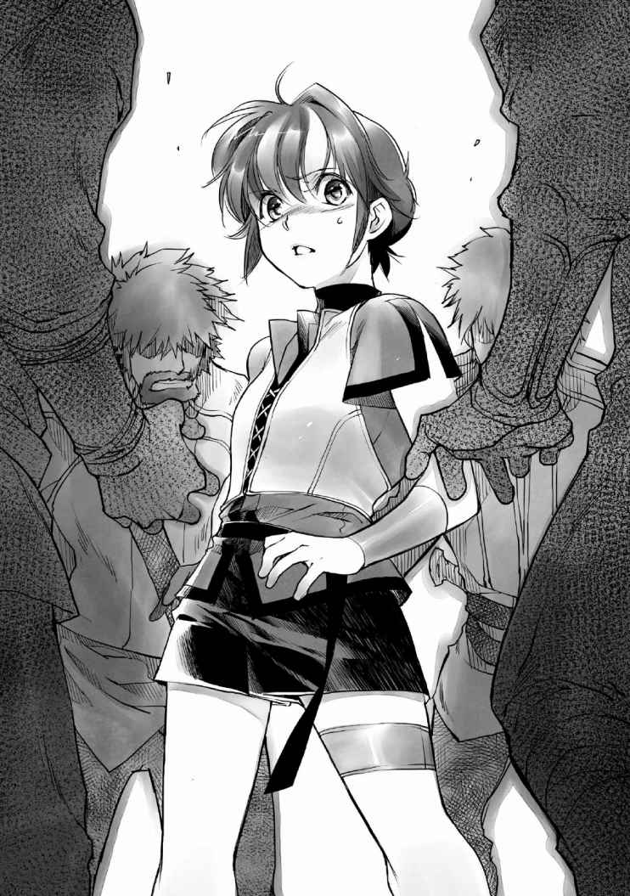
「おいっ。遊んでる場合か」
「駄目ですよ、マスター。カーラさんはまだ選択してません」
「......選択？」
「はい、そうです。マスターがおっしゃったじゃないですか。決めるのは、わたしでもマスターでもないって」
俺とスラ子が険悪なやりとりをしている間、広間の状況は加速していく。
「お嬢。多少、痛めつけちまっても構いませんかね？」
「構いません。精々、丁寧に嬲 って差し上げてください。悲鳴に釣られてなにか引き寄せられるかもしれませんからね」
台詞の裏を読んだのか、男達が下卑た笑い声を上げる。
「過激なリーダー様だぜ」
「言葉に気をつけやがれ、将来の町長様だぞ。まあ、そのお方からわざわざ公認してもらえるってのは悪くねえ。これからも色々と便宜を図ってもらえるよう、いいところを見せておかないとなぁ」
反吐 の出そうな台詞を吐く。
その連中の一人に、カーラが先手を打って飛びかかった。
振りかぶった拳の一撃は、だが大振りすぎて余裕を持って躱 される。そのまま円に取り囲んで、男達がそれぞれの得物を手に構えた。
「は、活きがいいじゃねえか、ルーキー！」
「そうじゃなきゃ面白くねえ。楽しませてくれよっ」
「っ......！」
挑発に応えず、カーラが一人に距離を詰める。殴りかかろうとしたところを横合いから鞘越しの長剣で小突かれ、体勢を崩した。
「おいおい、こっちだこっち」
反対側から蹴られる。
受けた衝撃を利用したカーラが、転がるようにそのまま囲みから抜け出そうとするが、逃げられない。行く手に待ち構えていたように別の男が現れて、
「おっと。残念、こっちは通れねえよ。狼女！」
両手で押し飛ばした。
「あぅ......！」
悲鳴を上げてカーラが倒れる。
すぐに起き上がって警戒の構えをとる彼女をなにかの見せ物のように、男達が笑った。
殴りかかろうとしたカーラが、後ろから羽交い絞めにされる。
──限界だ。
目の前で行われようとしているのは私刑 だった。
俺の中の低い沸点はとっくに限度を超えて、俺は後ろから緩やかに押さえつけてくるスラ子を睨みつけた。
「放せ、怒るぞ」
スラ子は穏やかな表情のまま、
「マスター。マスターはどうして、シィの羽を新しくされたんですか？」
訊ねられて、一瞬、なんのことかと思う。
「それはわたしを助けてくださるためで。そして、シィがそれを望んだからですよね。妖精にとっての一生を決める、大事な性分化。シィはそれを、あくまで自分の意思で決めました」
「それがどうした。だからなんだっ」
「でしたら。もう少しだけ我慢して下さい。カーラさんも、そうあるべきです。そう仰ったのはマスターじゃないですか」
それに反発しかけて──ふと。俺は広間の気配が違っているのに気づいた。
カーラを押さえつけ、嬲ろうと取り囲む十一人もの冒険者達。
だがその大半の視線が向いているのはカーラではなく、
「......なにか？」
目の前で、今まさに蛮行が繰り広げられるのを冷ややかに見守っていたルクレティアに、男達の一人が頭をかきながら、
「いやあ。考えてみりゃ、女を嬲れなんて話、元の依頼にはなかったはずでしょう。俺達も一応はプロなんで、そこんところをはっきりしておきたいわけで」
令嬢の立ち姿に不愉快そうな気配が生まれた。
「出来ない、と言うことですか？」
「いやあ。そういう訳じゃあありませんがね。依頼主のお望みなら、いくらでも。ただ、特別な報酬なんてものを頂けたら有り難いなあ、なんて思ったもんでね」
「若い女を一人、好きに出来るだけでは不足と？」
「別に金じゃなくたっていいんですぜ。そう、金以外のモノ でもね」
連中がいったいなにを言いたいのかを察して、俺は沸騰しかけていた怒りも忘れて呆れてしまう。
......あいつら、カーラだけじゃ飽きたらず、ルクレティアまで襲おうとしてるのか。
たしかにこんな田舎じゃお目にかかれないくらいの美人だが。いくらこの洞窟が人目につかないからって、依頼主にまで暴行しようとするなんて、ゴロツキどころか野盗や山賊と変わりやしない。
だが、考えてみればこれは十分に予想できる事態でもあったはずだ。
田舎町で燻 ってる冒険者の程度なんて、そんなもんだ。それを理解していなかったというなら、それはルクレティアの甘さだ。しかも、カーラを襲えと煽ってみせたのはそのルクレティアでもある。
今や、カーラを襲おうとしていた男達の半数はルクレティアを取り囲もうとしていた。
令嬢は無言。
絶対的なはずだった立場が一変して、自分自身が狼藉を働かれようとしていることへの恐怖に声も出ないのかと思ったが。
それが勘違いだと気づくまで、ほんの一瞬だった。
「......まったく。呆れます」
ぽつりとした声。
ここからは相手の表情までは見えないが、俺にははっきりとルクレティアがどんな顔になっているか想像できた。
冷笑。
心から見下した相手を貫き、心の臓まで凍らせる極寒の気配を伴って、令嬢の声が続く。
「町のギルドに所属している、〝自称〟冒険者。その方々の程度が著しく低いことは、以前から存じていましたけれど。ここまで予想通りの反応をされてしまうと、嬉しくもありませんわね......」
「はッ。なぁに強がりを言ってやがる。町長の身内だなんてことは、この場じゃあまったく関係ないんだぜ。いざとなったら、俺達ゃ町から逃げ出しちまえばいいんだ。もちろん、その前にたっぷりあんたの身体を愉しませてもらうがな」
劣情を抑えきれない様子で手を伸ばす男を冷ややかに見据えた令嬢が溜息をついた。
「勘違いですわね」
「勘違い？ いったい──」
男は最後まで喋ることを許されなかった。
金髪の令嬢。その全身から一気に緑色の魔力光が溢れたかと思うと、暴風が巻き起こる。渦を巻いた強風は一気に目の前の大柄な男に襲いかかり、その巨体を弾き飛ばした。男はとんでもない距離を吹き飛んで、そのまま洞窟の壁に激突。悲鳴もなく崩れ落ちる。
「なっ......！」
「この女 、やりやがったな！」
血相を変えた男達がルクレティアに襲いかかった。
カーラを押さえつけている相手ともう一人以外の、全員が殺到する。その数は八人。たった一人で対処するには無理がある。
「おんなじとこに固まるなよ！ 魔法使いたって、たかが一人だ。一斉に囲んじまえばなにもできやしねえ！」
「それも勘違いですわ」
吠える男に、ルクレティアは氷のような一瞥をくれて、
「私がこの場所に貴方がたを連れてきた意味が、護衛だとでも思っていましたか？ 私が自分の身の安全を任せる程に、貴方がたを信用していたとでも？」
──馬鹿馬鹿しい。冷えた侮蔑の言葉を吐いて、続ける。
「護衛が必要なら、自分で用意します。それだけのことでしょう」
そう言ったルクレティアが懐から何かを取りだした。
遠目には、それはただの羊皮紙に見えた。なにやら書きつけられているらしく、模様のようなものが見える。
まさか、と俺が思っているうちに、ルクレティアはその数枚の羊皮紙を適当にその場にばら撒いて、
「お目覚めなさい」
魔素 を伴った声を合図に、周囲の地面が盛り上がり、ばら撒かれた羊皮紙を取り込むように形を成していき。
あっという間に、五体の魔法生体がそこには創られていた。
ゴーレム。
それは魔法使いが使役する魔法生体としては、スケルトンと同じくらいポピュラーな存在だ。
細々とした作業に向いているスケルトンとは違って、大型であることが多く、力作業などによく使われる。より精巧な魔法生体を助手として持っていることは、一流の魔法使いの証明でもあった。
今、ルクレティアが創りだした代物は、ゴーレムとしては小型だ。
ほとんど人間の大人程度。だが、遠くからでも一発でわかるその精巧さと、なにより数が尋常じゃなかった。
「一度に複数のゴーレムを創造だと......？ 冗談だろ」
ほとんど恐れ慄くような心地で俺は呻いた。
魔法生体なんていうのは、一瞬で創りだせるような簡単な代物じゃない。長い準備と儀式を通じて、丹念に力を込めて魔法生体の〝核〟とそれを覆う〝肉質〟とを安定させる必要があるからだ。
だが、ルクレティアはほんの一瞬で、それも五体も同時にゴーレムを創り上げてみせた。核となるもの──間違いなく、あの羊皮紙だ──はあらかじめ準備してあったにせよ、とても尋常な腕前ではない。
俺なんて、作成キットを使って三日三晩寝ずに組み立てて、ようやくスケルを一体、創り上げたくらいだ。それは単に俺が未熟なだけだが、それにしてもルクレティアの魔法使いとしての力量は異常だった。
突然の護衛動像 の登場に、男達は絶句して立ち尽くしている。
相手はたった一人だと思っていたら、五体も護衛が湧いて出てきたらそうもなるだろう。一応、数の上では六対十ではあるが──ゴーレムに一対一で勝てるほどの腕利きがこの場にいるとは思えなかったし、それに今のルクレティアのやったことがどれほどとんでもないかくらい、連中にもわかるだろう。
底知れない魔道の力量。その一端を見せられて、完全に冒険者達は萎縮してしまっている。
ルクレティアは傲然とその男達を睥睨して、
「勘違い 。そうでしょう？」
嫌味の含んだ声音で、さっきから何度目かになるフレーズを繰り返した。
「やはり私の勘違いだと思うのですけれど、如何かしら」
「な、なにが──でしょう？」
引きつった声で応える男を見据えて、
「先程の、貴方がたの発言についてです。特別な報酬がどうとか。金以外でも云々。それか、私の聞き間違いなのでしょう。何故なら、貴方がたの役割は始めから〝そういうもの〟だったのですから。違いますか？」
物を含んだような口調に、男達は互いの顔を見合わせて。それから、かなり遠くまで吹き飛ばされた挙句、昏倒して意識のない自分達の仲間を見てから。全員が、慌てて頭を頷かせた。
「も、もちろん！ 俺達ゃあ、お嬢の忠実な配下ってヤツです！ さっきのはほんの冗談っていうか、なあ、そうだよな！」
「そ、そうです、そうです！ いやあ、ちょっと調子に乗っちまったみたいで、申し訳ありません！ この通りです！」
「声をかけられただけでも光栄なのに、護衛役だなんて身の程知らずなこたあ考えたりもしません！ 俺達はせいぜい、この女を嬲るくらいが似合いの役割でさあ！」
あっさり態度を豹変させる十人のゴロツキ達を、ルクレティアは極寒の眼差しで貫いてから、
「......まあいいでしょう。それでは、さっさと自分達の仕事にお戻りなさい」
その言葉に応えるように、
「あああああああああああああああ！」
咆哮が轟いた。
被さるような悲鳴。一人の男が盛大に吹き飛ばされ、地面を転がっていく。さっきも見たような光景だが、先程のものとは原因もそれをやった相手も異なっていた。
「がああああああああああああああああああああああ！」
洞窟の奥深くから、まるで夜空に浮かぶ満月に吠えるようにカーラが天井を仰いでいる。遠くからでもわかるその獣じみた振る舞いは、俺には見覚えがあるものだった。
「お、おい、なんだ。こりゃ──」
あわてて半歩をひいた男に、それ以上の速度でせまったカーラの拳が、相手の頰骨を砕いた。
声もなく。牛にでも体当たりされたように吹っ飛んでいく。
翼を持たずに宙を飛んだ男はその無茶のツケを食らうようにそのまま壁に激突し、壁面に抱きつこうとするかのような格好でずるずると倒れこんだ。
「なんだこいつ！」
「急にキレやがったぞ！ なんて馬鹿力だ！」
軽いパニックに陥りかける男達と違い、
「バーサーク。......相変わらず。まったくもって、美しくありませんわね」
複数のゴーレムを従えたルクレティアだけはあくまで冷静だった。
「なにを浮き足立っているのです。一人が防ぎ、二人が崩して、残る全員で抑えなさい。いくら化け物じみていようと所詮は獣一匹、対抗できないものではないでしょう」
落ち着いた指示に、浮き足立っていた冒険者達が落ち着きを取り戻す。
慎重に距離をとり、一人が別の一人を必ずフォローできる間隔を保って、死角からカーラの注意をひきつけ、的を絞らせない。
凶暴な獣を慎重に狩ろうとする連中の動きに、カーラも迂闊には飛び込めず、
「選択、しましたね」
緊迫したその様子を遠くから眺めるスラ子が、満足げに俺の耳元で囁いた。
「マスター。カーラさんはちゃんと自分で選択しました」
「選択？」
俺はスラ子の言葉を聞いて耳を疑った。
「あれが選択だと？ 追い詰められて、他にどうしようもなくて。それで狂暴化 しただけじゃないか」
「そうですね」
スラ子は頷いて、
「血に酔ったバーサーカー。あのままではカーラさんは仲間であるはずの同族に嚙みついて、群れから追われて。かといってもちろん他からも認めてもらえない、ただの可哀想な人狼さんです」
けれど、と艶やかな声で続ける。
「マスターが飼ってあげれば、カーラさんにだってきちんと居場所ができますよ？」
俺は思いっきりしかめ面になって、目の前の不定形を睨みつけた。
「お前、最初っからこうなるってわかってたのか」
「そんなことありません」
スラ子はやんわりと首を振る。
「けれど、カーラさんの気持ちなら。こうなるんじゃないかとは思いました」
「意味がわからん」
「マスターの言う、ちゃんと自分で決めるべきだっていうお考えは正しいです。ですが、少し無理やりにだって、相手からそうして欲しい時もあると思います。もちろん、自分が望む相手にってだけで誰でもいいってわけじゃありません」
わけがわからない。
いったいなんのことについてスラ子が言っているのかも理解できなかった。
だが、今はそんなことを議論している場合じゃないということだけははっきりしている。
広間では今も戦闘が続いていた。
狂戦士と化したカーラと、それを取り囲む八人の冒険者とルクレティア。
暴走状態のカーラはルーキー離れした異常な戦闘能力を発揮しているが、対する冒険者達もさすがに初心者とは違う。ゴロツキとはいえ、それなりの経験と技量でそれにわたりあっている。
多勢に無勢。
このままではやられてしまうのは間違いなくカーラだ。
そして、そんな緊迫した状態だからこそ、俺達には連中の横合いから奇襲をかけるという演出が可能になっていた。
目の前では、スラ子が俺の指示を待っている。
スラ子はこの状況のどこからどこまでを想定していたのか。一体なにを期待していたのか。
そんなことを考えながら、告げる。
「......カーラが〝人間〟か、〝魔物〟か。それはカーラが決めることだ」
でも、
「カーラが人間だろうが、魔物だろうが──俺達の仲間だ。助けるぞ」
「お心のままに。マスター」
恭しく返事をしたスラ子が、手に持った石に魔力を込める。手のなかの反応石はスラ子の魔力を受け、遠く離れた場所に合図を伝える。
前もって用意していた仕掛けがそれに反応して、箍 をはずし。
「っ。これ、は──」
一早くその場の異常に気付いたらしいルクレティアが、顔をあげた。
初めは感じ取れないほどの振動が徐々に音をもって明確になり。
不吉な轟音が、やがて一帯に響きはじめる。
俺達の住む洞窟はスライムの生息に適している場所だ。
その環境条件とは、暗く、ジメジメして水気に満ちているということ。
雨が降って山肌をすべりながら染みた降水。元々地下深くを通る流動水も表出してこの洞窟には流れている。
それは洞窟のすぐ近くの湖とつながり、また川となってそこから地下へと続いていた。
地上、地下を問わずに大地を巡る循環。それは恵みをもたらすとともに、氾濫や洪水となって牙をむくこともある。
俺達が仕掛けた罠は、洞窟のなかにある幾つかのそうした流れの一つを故意に堰 き止めることだった。
洞窟を流れる水量は日によって増減する。
大雨が降ったあとなんかにはたくさんの水が地表から染み込んでくるし、逆に日照りが続いたら、その反対だ。
だから洞窟のそうした水溜まりには、自然とある程度の〝ゆとり〟が生まれることになる。
大量の水が流れ込んできても大丈夫なよう、長い時間をかけて削られて拡張された天然の保水地。
そこに蓋をする。
当然、水が溜まる。
その蓋に穴をあける。
結果は、──決壊する。
広間上部の壁穴から溢れた出水は、そこにいた冒険者達になんの対処をする間も与えなかった。
轟音を伴った奔流が怒濤 の勢いで全てを流し尽くす。
水流はそのまま広間の奥にある縦穴に流れ落ち、完全にそこに散るまでの間、水位は一時、脛まで浸かるほどに上昇した。
少し高い位置にある物陰に隠れていた俺達だって、足をとられないようにしがみつくので精一杯だったのだから、それをいきなり頭上から浴びせられた連中とカーラはたまったものじゃなかっただろう。
大量の水に押し流され、散り散りになって倒れている。
さらには、
「スライムが──！」
出水経路の途中に配置しておいた大勢のスライムが、水流に押される形で広間に落ちてきていた。
「クソ！ なんでこんな急に......！」
「集まりなさい！ これは、敵襲です！」
怨嗟 の声を上げる冒険者達にルクレティアが一喝した。
その手に魔力の輝きが満ちて、
「ファイアボール！」
近くに蠢く手近なスライムの一匹に火球が放たれる。
魔法に弱いスライムは直撃を受けて、ひとたまりもなく崩れさ──らなかった。
「なっ!? 」
冒険者達から驚きの声が上がる。
表面が蒸発し、痛みに打ち震えながら、そのスライムはなお健在だった。
それは俺の与えた習性じゃない。スライムに恒常的な魔法耐性をつけるだなんて研究、俺程度には手が届かない。
俺の隣で、シィが背中の羽を最大限に輝かせて両手から魔力を放出していた。
アンチマジック。対象の耐魔法力をあげる支援魔法が全力で使用されている。
遠い場所から正確な魔法対象の選別は難しい。
だからシィは今、広間にいる誰にも彼にも向かってそれを放っている。当然、その加護はスライムだけではなく、冒険者達にも与えられてしまうことにもなるが、
「来るんじゃねえ！」
たとえ敵味方に同じ恩恵が与えられたとしても、その結果はこちらにとって有利に動く。
スライムは打撃攻撃に強い。互いに魔法への抵抗力が強まるなら、そのスライム生来の特性がより輝くことになるからだ。
もちろん、対処方法もよく知られてはいる。
スライムは魔法に弱い。塩などで水分を奪われるのにも弱いし、松明 なんかの炎だって有効だ。
しかし今、冒険者達は全員が頭から水をかぶった濡れネズミだった。
魔法を使えない連中だってなにか対応策くらい用意していただろうが、湿気て駄目になってるものも多いだろう。
そしてなにより、奇襲の成功が大きい。
突然の出水と大量のスライムによる不意打ち。それに動揺した連中が平静を取り戻す前に決着をつける。
相手より圧倒的に小数である俺達が多数の相手に勝つためには、それ以外に道はなかった。
「スラ子、シィ！」
「いきます！」
号令に、まずはスラ子が広間に躍り出る。
スライム達に気を取られて、冒険者連中はその存在に気づかない。スラ子は手近な一人に近寄ると、頭をがしりと鷲摑みして、
「えいや」
思いっきり放り投げた。
生まれた直後、スラ子は自分の筋力を大人一人程度だと言っていたが、湖の精霊を捕食した魔力で補っているのか、それとも身体の使い方を覚えただけか、軽々と男の身体は宙を飛び、スライムの群れの真っただ中に落ちる。
「うわ、わああああ！」
そこにのしかかるスライム達。
スライムの中に一旦取り込まれてしまえば、そこから自力で逃れるのは難しい。その男は無力化したと言っていいだろう。
作戦に使っているスライムは草食嗜好 だからとり殺されることもないはずだ。
運が悪ければ窒息死くらいあるかもしれないが。
そして、広間中にアンチマジックをばらまき終えたシィがスラ子に続く。
シィは真正面から相手にかかるような真似はしない。妖精の体格は人間の子どもくらいだ。勝てるわけがない。
背中の羽を使って灯りの魔法が浮かぶ天井近くまであがり、そこから下界の連中にむかって強い魔力を放出する。
冒険者達の二人が、かくんと腰から崩れて倒れこんだ。
眠り の魔法で強制的に意識を断ち切られて、脱落。シィ自身がかけたアンチマジックの効果が有効中だから、二人に効いただけでも幸運だ。
これで。残りは六人──！
「ファイアランス！」
凜とした声。それと共に虚空に生まれた炎の槍が、一直線にスラ子へと伸びた。
「おっとと」
あわててそれを回避するスラ子。視線を向けた先には、顔をしかめて膝をつくルクレティアが細く長い指先を伸ばしている。その周囲には、令嬢を囲むように五体のゴーレムが佇んでいる。
「......やってくれますわね。リリアーヌさんのお店に紛れ込んでいた輩かしら」
「お話しするのは初めてになりますね、ルクレティアさん。わたしはスラ子と言います、お見知りおき──は、あんまりしてくれなくても構いませんが」
「──なるほど。人型を模したスライムだなんて。しかも知性体？ ......これはまた、ずいぶんと珍妙な生き物ですこと」
「褒めていただけるんですか？ ありがとうございます」
吐き捨てるルクレティアの言葉に、スラ子は余裕の笑みを崩さない。
ルクレティアが不快げに眉間に皺を寄せた。
「それで、そんな悪趣味な代物を創った張本人は今どちらにいらっしゃいますの？ まさか自分は手を下さず、コソコソと隠れて高みの見物ですか。器が知れますわね」
ここにいるぞ。
なにを言われようが絶対に名乗りなんてあげないけどな！ 絶対にだ！
「気になりますか？ ふふー、でも残念。あなた程度の相手、マスターの手を煩わせるまでもありません。その分、わたしがたっぷりイジめてあげますから、いい声を聞かせてくださいね」
ルクレティアの挑発を受け流して、妖艶に微笑んでみせるスラ子。
断っておくが、俺は決して観戦モードというわけではない。ちゃんとフォローだってしている。
スライムは生まれつき、魔力の濃い方向に近寄る習性をもっている。さっきから俺はスタンプの魔法を飛ばして、スライム達を残りの冒険者達に向けて誘導している真っ最中だった。
ルクレティア以外の五人の冒険者は、あまり通用しない剣を使ってなんとかスライムたちを振り払っている。そこにシィが上空から支援、攪乱 する形で戦闘が進んでいる。
シィはよくやっているが、五人を相手にとなると少々厳しい。如何に周囲のスライムを活用できるかが勝負の分かれ目になりそうだった。
そして、やはりメインになるのはスラ子とルクレティアだ。
シィが広間にばらまいたアンチマジックの魔法も程なく途切れる。複数の動像さえ従えてみせるような腕のよい魔法使いであるルクレティアを御することができるかどうかが、すなわち今回の戦闘の全てだった。
いや、それだけじゃなかった。
この場にはもう一人、戦意も戦力も十分以上に兼ね備えた人物が残っている。
「ああああああああああああああああああ！」
雄叫び。
出水で遠くに流されていたカーラが一息に距離をつめる。致命的な威力をもつ魔力を込めた拳が振るわれた相手は、
「ちょっと、カーラさん!? 」
ほんの鼻先でそれを躱したスラ子が悲鳴をあげる。
「なんでわたしなんですか、あっちいってくださいウォータープレス！」
スラ子の生み出した水流に強引に押し流され、その奔流の途中でカーラは体勢を立て直す。
そのまま、今度はルクレティアへと飛びかかり、その前に立ちはだかる動像に一撃。十分以上に強度のあるはずの巨体を一撃で粉砕した。
「この、化物！ ファイアロンド！」
壁になるように立ち並ぶゴーレムの隙間から無数に放出された炎の粒が相手の接近を阻む。
カーラは俊敏な動作で後ろに飛び退 り、魔法の連弾の範囲外に逃れた。
──暴走状態のカーラには敵も味方も存在しなかった。
一瞬でも隙を見せた相手の喉首から搔っ切ってやろうとするかのように、低い姿勢で構えた獣の眼差しが油断なく二人に向けられる。
ルクレティアが動いた。
「ファイアランス！」
炎の槍が空を貫く。
狙いはカーラ。暴走した少女は向けられた魔力の穂先を躱そうともせず、
「摑んだ!? 」
魔力のこもった手のひらで受け止め、さらにカーラはそのままスラ子へ向かって投じてみせた。
「そんな無茶苦茶な──！」
慌てて距離をとろうとするスラ子に、追い討ちをかける形でカーラが迫る。迎撃のための魔力を集中させ、それをスラ子が放出する前に、
「ファイアボールッ」
スラ子に迫るカーラの背中から、ルクレティアが追撃の魔法を放った。
二人まとめて灼くことを目的にした火球が背中に迫り、カーラがちらと自分の背後を振り返る。
無造作に振るわれた拳が火の玉を薙ぎ払おうとした瞬間、
「──バースト！」
火球が空中で弾けた。
込められた魔素 の四散放射に従って膨れ上がった火炎が声もなくカーラの全身を包みこみ、
「ウォータッ！」
そのうえからスラ子の水魔法が降り注ぎ、すかさず消火する。
「余計なことを......」
ルクレティアが舌打ちする。
スラ子の魔法はダメージというよりカーラへのフォローに近い。
しかし、それがなくとも果たしてダメージがあったかどうか──。カーラはそれまでとまったく変わらない様子でその場に立っていた。
ルクレティアの応用魔法で髪が焼け、ところどころの服装が焦げついてはいる。軽度の火傷くらいならあったかもしれないが、表情には痛みを感じさせるものは皆無だった。
一連の応酬を終え、三人が再び距離を計る。
スラ子はカーラを倒す意思を持たず、ルクレティアは他二人の共倒れを狙っている。
カーラにはそもそも狙いというものが存在しない。暴走状態になった彼女は、ただ近くの相手を屠 ろうとするだけだ。
それぞれの立場が、戦闘の推移を非常に難しいものにしていた。
スラ子、ルクレティア、そしてカーラ。
三竦みの気配が渦を巻き、緊迫した空気が張り詰める。
先に動いた相手がやられる──そんな三人の様子をはらはらと遠くから見守っていた俺は、
「......まずい」
残り四体となったゴーレムを前面に押し立てて、自分は背後を確かめるような動きを見せるルクレティアの狙いに気づいて、舌打ちした。
──あの女、逃げるつもりだ。
メジハの町に逃げ帰ったルクレティアは、今度はもっと戦力を整えてやってくるだろう。
俺達の所在を知り、戦力を知ったうえで作戦を立てて進攻してくる。
ルクレティアには次があるが、俺達にそんなものはない。洞窟から逃がしてしまえば、それは俺達にとっては負けと同じだ。
それはスラ子だってわかっているだろうが、カーラの存在があるから下手に動けない。
もしも自分が先手をとってしまえば、それがカーラへの呼び水になって襲いかかられてしまいかねず、ルクレティアに脱出の機会を与える結果になってしまう恐れもある。
ルクレティアも、恐らくスラ子がしびれを切らすのを待っている。待ちながら、出口に向かって近づこうと少しずつ足先をにじり寄せていた。
場の均衡を崩す手は、カーラの存在そのもの。
そのカーラは、どちらから手を下せば、どちらともを手にかけることができるかを思案しているように、低く唸り声をあげながら二人を平等に見据えて動かない。
シィからスラ子への援護は無理かと様子を見てみると、小さな妖精はいまだに複数の冒険者達と対峙しているところだった。
ほとんどのスライムがやられ、シィが一人で残った男達と対峙している格好だ。
肉弾戦では小柄なシィの方が圧倒的に分が悪い。
距離をとり、上空に逃れようとするシィにそうはさせるかと冒険者が牽制し、そちらでも均衡状態が生まれていた。
シィは動けない。動けるのは──俺だけだ。
結局それか、と泣きたくなった。
──絶対に、やめてくださいね。
スラ子の切実な声が頭に響く。
俺だってやりたくないさ、んなもん。なにせ頭脳労働派だからな、痛いのなんて大っ嫌いだ。
だが、これで負けたらおしまいって時にそんなことも言っていられないのも確かなわけで。
一拍の呼吸。
それと同時に覚悟を決めて、
「スラ子、やれ！」
俺は広間に飛び出した。
視界でスラ子が柳眉を逆立てる（ああ、あとで絶対に怒られる）が、すぐに意識を切り替えて、ルクレティアに向かう。
カーラの注意は予想通り、突然、大声を出してその場に現れた俺へ向かって、
「があああああああああああ！」
咆哮と共にこちらに突撃してくる。
その形相はいつものカーラからはまるで想像できない。
ただ戦意に猛り、ひたすら狂気に満ちている。
正直言って夢に見そうなほど怖い。子どもが見たら泣く。俺も泣きたい。あとで泣こうと思う。
バーサーカー。
幾多の戦場で勇名を馳せるような存在に、一対一で張り合う？
残念ながらこの俺は、そういった功名心とかいう類にはまったく縁も未練もない男だった。
懐から包み袋をとりだす。大きさは鶏の卵くらいの、そのしっかりと巻かれた紐口を解いて、俺はそれを思いっきり、襲いかかって来るカーラに向かって投げつけた。
重み用の石を入れてあるから、けっこうな勢いで飛んで行ってあっさりと叩き落とされ、袋の中身が散る。が──
「ファイア！」
声に応じて生まれたのはひどく貧弱な魔法の種火。
槍どころか剣にすらならず、相手にぶつかってもせいぜい服に焦げ目をつける程度の情けない代物だが、それでも役割としては十分だった。
ぶちまけられた袋の中身が、きらきらと虹色に輝いている。
妖精の鱗粉。シィの羽から手に入れたばかりのその魔力の結晶粉が、俺の放った火種に感応し、連鎖して燃焼反応を起こして閃光を起こし、膨張する。
「つっ......があ！」
きっとカーラに与えられたダメージは皆無だろう。
だが、それでも目くらましにはなった。
その隙をついて、俺はカーラの横を抜け、そのまま対峙するスラ子とルクレティアの方へと駆ける。そこでは今まさに、ルクレティアが四体のゴーレムをスラ子にけしかけつつ、自分はその場から逃げ出そうとしているところだった。
「させるか！」
あえて大声で自分の存在を主張すると、それに気づいたルクレティアがゴーレムの一体を牽制に差し向けて来る。
緩くなった包囲を搔い潜り、すかさずスラ子がルクレティアに迫ろうとするが、
「ファイアランス！」
牽制の魔法が足元に突き刺さり、辛くもそれを避けたスラ子がこちらに合流してくる。頰を膨らませながら、
「マスター、顔を見せちゃ駄目だって言ったじゃないですかっ」
「言ってる場合か！」
ジト目を向けて来る相手に一喝して、視線を向ける。
金髪の令嬢が、四体の魔法生体を侍らせてこちらを見据えていた。
「自ら戦おうともせず、コソコソと隠れていた魔物の親玉が我慢できずにお出ましですか」
「このままじゃ、あんたを取り逃がしちまいそうだったんでな」
「この私が、貴方がた程度と相対して尻尾を巻いて逃げるとでも？」
ルクレティアが冷ややかに嘯 いてみせるが、
「あんたが、ケチなプライドに足を引っ張られて退き時を間違えてくれるような相手なら。俺がのこのこ出てくる理由もなかっただろうよ」
俺が言うと、ルクレティアはうっすらと笑みを浮かべてみせた。
「それでは、お言葉に甘えましてそのようにさせてもらいましょうか──」
させるか！
「あのゴーレムは俺が引き受ける！ スラ子、お前はルクレティアを絶対に逃がすな！」
「でも、マスター一人で四体もなんて無茶です！」
それに、とスラ子が目線を向けた先には、ようやく目くらましが晴れたらしいカーラが、獣の唸り声を上げている。
「シィ！」
大声で呼びかけると、どうにか最後の冒険者を無力化したらしい妖精が飛んで来てくれる。
「俺とシィでなんとかする！ お前はルクレティア一人に注力しろ！ いいな！」
「......っ。わかりました！」
スラ子が駆ける。
真っ直ぐルクレティアに向かうのではなく、ゴーレムを迂回するように大回りに走っていく。舌打ちしたルクレティアが、ゴーレムをそちらに差し向けようとするが、
「シィ、お前はカーラに〝幻惑〟をかけ続けてくれ、絶対に近づくんじゃないぞ！」
こくりと頷いてくれるのを確認してから、俺も走った。
真っ直ぐに、ルクレティアへ走る。
まったく別方向から迫る二人の敵。
ルクレティアはそれにわずかな逡巡も見せることなく、無言で手を差し伸べる。
四体のゴーレムが、二体ずつに分かれてそれぞれ俺とスラ子に対応して動き出す。
──ゴーレムというのはひどく不器用な存在だ。
お手軽な魔法生体としてはスケルトンと並んで広く一般的だが、身の回りなど、細やかな作業によく使われるスケルトンと違い、ゴーレムは門番など力仕事の、あまり細々としていない作業によく好まれる。
それは、生前の骨に染みついた記憶などから独自の自意識を内包し、与えられた命令の解釈に柔軟性を持つスケルトンと違い、ゴーレムが岩などを素材とするためにひどく杓子定規な行いしか出来ないからだった。
だから、ゴーレムを扱おうとする場合、どういった指示を与えるかが重要になる。
例えば〝敵を倒せ〟だなんていう曖昧な命令では、彼らはそれを十分に判断できない。〝刃物を持った相手を撃退しろ〟と言えば、たとえ武器を持っているのが味方だとしても、容赦なく殴り飛ばしてしまう。
今、俺達が相対するルクレティアの恐るべき手腕は、ゴーレムを五体、即席に創りだしたこともだが、尚且つ、それらを持て余すことなく十分に操ってみせているところだった。
下手な指示の出し方をしてしまえば、同士討ちだってしかねない。
それがないのは、よほど上手い命令を事前に系統だてて、前もって組み込んであるか──あるいは。もっと違う絡繰 りがあるか、だ。
──恐らく、後者だ。
と俺が決めつけた理由の半分は勘だが、根拠もある。
ルクレティアが使役するゴーレムの動き方には、中途半端な滑らかさがあった。事前に受けた命令に対して即断した反応には見えないし、微妙に違いのある複数の指示がせめぎあった結果の反応にも見えない。
前者にしては遅すぎて、後者にしては柔軟過ぎる。そういう違和感があった。
これでもアカデミーの出身だ。ほとんど研究室に引き籠 もっていたとはいえ、ゴーレムが活動しているところは何回も見て来ている。
なにより、こちとら十歳かそこらでアカデミーの門番をしていた巨大な守護動像 と張りあった経験があるんだ。この程度の動像、なんとでもしてみせる！
ちらと背後を見ると、天井近くまで飛んだシィが背中の羽を輝かせて、暴走するカーラを上手く攪乱してくれている。〝幻惑〟の魔法がかかったカーラはやたらめったに周囲に腕を振り回していた。
カーラがシィの術中にはまってくれている間に決着をつけなくちゃならない。
俺は腰の道具袋から、さっきカーラに投げつけた〝鱗粉〟詰めの小袋を取り出して、今度はそれの口紐をほどかず、思いっきりルクレティアに向かって投げつけた。
ルクレティアは自分でそれを対処するような愚は犯さず、ゴーレムの一体がそれを受け止めるように腕を伸ばそうとする。
その瞬間、
「ファイア！」
凝縮された鱗粉、濃度の高い魔素 の結晶が、ほとんど爆発と言っていいくらいの勢いで膨張した。
ゴーレムの腕が弾けた。
さっきの袋には鱗粉以外に小石や砂なんかを混ぜてあった。
それが至近距離で爆発すれば、十分以上の殺傷能力がある──それと同時、発生した土煙が辺り一帯に広がった。
「ちっ......！」
舌打ちしたルクレティアが手をかざし、それに呼応してゴーレム達がその煙幕状態の場所から距離をあけようとする。
その反応に、俺は自分の予想が正しいことを確信した。
「スラ子！ いくぞ！」
「はい、マスター！」
俺は腰から、さらに三つの小袋を取り出す。
それらの口紐を一斉に開いて、俺は金貨何枚分だろうっていう妖精の鱗粉を思いきり前方にばら撒いた。そして、叫ぶ。
「ファイア！」
薄く周囲に飛散した鱗粉が燃焼反応を連鎖させ、たちまちに煙幕を発生させる。
カーラへの目くらましに使ったのと同じ手口だが、今度のそれはさっきとは範囲がまるで違う。残り三つだった鱗粉包みには、今度はたくさんの灰も一緒にしてあった。
用途はもちろん、言うまでもない。
さらに俺は道具袋から最後の一袋を取り出すと、口紐を切って、今度はそれをおもいっきりルクレティアの上空に投げた。
きらきらと、七色の鱗粉が一瞬、宙に瞬き──すぐに煙幕にまぎれて消える。
「小賢しいことを......っ」
俺の狙いを察したらしいルクレティアが、緑色の魔力を貯める。風でも起こして〝晴らそう〟というのだろうが、そうはいかない。
「アイスランス！」
スラ子の放った氷の槍がルクレティアの足元に突き刺さった。
視界が悪いのはスラ子も同じだ。狙いは正確さを欠いたが、ルクレティアの集中を妨害することに成功している。
そして──今の攻撃でなにより注目すべきことに、ルクレティアへの攻撃を防ぐはずのゴーレム達が、今のスラ子の攻撃にまったく反応できていなかった。
理由は簡単。
指示が出ていないからだ。
前もってゴーレムに命令が与えられていた場合、それはどうしても柔軟性を欠くものになってしまう。あらゆる状況を想定して前もってその対応を指示しておくのは、不可能ではないかもしれないが、ひどく手間がかかる作業になるはず。
ルクレティアがそれをやり遂げたという可能性は、無論ある。あるいは、もっと手間のかからない、画期的なゴーレムへの事前指示の手法を編み出したとか。
だが、もっと簡単なやり方があるのだ。
ヒントは、ルクレティアがいまだにこの場に留まり続けていること。
そもそもが、もしもルクレティアの創造したゴーレムが、完璧に近い柔軟性で独自に行動できるのなら、ルクレティアは俺達の相手をゴーレムに任せてさっさと逃げ出してしまえばいい。
だが、そうしなかった。
いや。出来なかった のだ。
なぜなら──あのゴーレム達が行動しているのは事前に与えられた命令なんかではなく、今この場でルクレティアから与えられる指示だから。
その場その場の状況に合わせて、ルクレティアが臨機応変に対応を指示するなら、ゴーレムの動きも柔軟になる。
もちろん、複数のゴーレムに対して同時に、それぞれに並行して複雑な指示命令をその場で出すなんて無茶苦茶だ。ある意味、事前に完璧な指示命令を与えておくこと以上に難度が高いだろう。
当たり前だ。そんなことがほとんど不可能だからこそ、ゴーレムの使役には事前に指示命令を出しておくという手法が一般的になっているのだから。
だが、ルクレティアは現にそれをやってみせている。
その方法も、決して飛躍した思いつきによるものではないはずだ。
発想自体は至って単純。
例えば手を挙げることや、下げること。そうしたちょっとした所作そのもの。自分の一挙手一投足を合図にした、その振る舞いの組み合わせのパターンで、ルクレティアはゴーレムに指示を与えている。
尋常でないのは発想ではなく、それを実際に行おうとすることだった。
複数のゴーレムに、臨機応変な動作を可能とするだけの細やかな合図。それには一体どのくらいのパターンが必要になる？ 組み合わせはどのくらいだ？
しかも、それが五体──その内の一体はカーラに破壊されてしまっているが、それでも四体残っている。人形を両手の指から伸ばした糸で操れる興行師だって、それが四体になれば途端に糸が絡まってしまうに違いない。
それをやっているのだ、あの令嬢は。平然として。
はっきり言って人間業じゃない。
いったい全体、頭の構造がどうなっているのか本気で知りたかったが、それはともかく、今はその相手をどうにかすることを考えなくちゃならない。
......ルクレティアが直接、ゴーレムに指示を出していると考えれば、すぐに逃げ出さない理由もわかる。
ルクレティアがこの場を去れば、ゴーレム達は活動を停止してしまう。あるいは、事前に与えられた極めて単純な対応しか出来なくなってしまう。
その状態のゴーレムでは俺達の足止めには不足。ルクレティアはそう考えたのだろう。
だからルクレティアは、十分に逃げ切れるようこちらに痛撃を与えるか、あるいは追ってくるまでに時間がかかるだろうことまで確認してからでないと、逃げ出せないのだ。
なら、──勝機はある。
ルクレティアが複数のゴーレムを操る挙動。
その組み合わせがどのくらいの複雑さで、どういう行為にどんな命令が含まれているのかまではさすがにこの短時間ではわかりようがない。
だが、タネさえわかれば対処は可能だ。
あのゴーレム達が、ルクレティアの振る舞いを見て、あるいは魔力を感じて動いているというのなら──その繫がりを遮断してしまえばいい。
そのための煙幕。そして上空から広範囲に散布された妖精の鱗粉は、魔素 に対する一種の妨害幕となってゴーレム達の反応を瞬間、麻痺させていた。
あとは、この間にスラ子がルクレティアを叩いてくれれば──！
「マスター！」
悲鳴のような声。
それはスラ子のものではなく、滅多に聞けないシィが危険を喚起する叫びだった。
ぞっとするような寒気と共に振り向くと、〝幻惑〟の効果を脱したらしいカーラが、一直線にスラ子に向かっている。さすがに魔力を放出し続けたのか、シィは疲労困憊の様子でぐったりとしていた。
スラ子の顔に迷いが生まれる。
対応しないわけにはいかないが、そうしているうちに煙幕が晴れる。カーラに対している間にルクレティアが逃げ出してしまうかもしれない。
俺は迷わなかった。
一気に駆け出す。
もう鱗粉詰めの包み袋は残っていない。
武器はない。策もない。
ならどうする、という起死回生のアイデアだって浮かんじゃいなかったが、それでもやるべきことははっきりしていた。
拳を振り上げたカーラがスラ子に肉薄するのと同時、
「うらぁー！」
俺はカーラに頭から突っ込んだ。
いくらカーラが人間離れした筋力を発揮しようが、体重までが変わるわけじゃない。前回はそのあと、怪力にあっさり引き剝がされてしまったが。
大の大人からぶちかましを受けて、俺とカーラはそのまま地面を転がっていく。
ここで離れたら手詰まりだ。即、終了だ。
俺はごろごろと世界を回転させながらなんとかカーラの衣服の端を探して摑む。放さない。カーラが体勢を立て直す前に、その身体に後ろからしがみついた。
「あああああああああ！」
耳元で、鼓膜が破れそうな大声に叫ばれる。
それでも力は抜かない。抜いた先には死が待っているから、こっちだって必死だ。
しがみついた俺をひきはがそうとカーラが暴れる。髪の毛が引っ張られ、ぶちぶちと嫌な音がして千切れる。服が裂ける。
ヤバイ。無理。もう無理。
「スラ子、早くなんとかしろ、助けろ！ 死ぬぞ俺！」
情けない悲鳴をあげる俺の視界で、スラ子が一瞬、躊躇する。
こちらの方に駆け寄ろうとするのを、
「馬鹿！ こっちじゃない！ あっちだろうが！」
唇を嚙んだスラ子が、すぐにルクレティアへと向き直る。
「──すみません。大事なマスターが危ないので、決着をつけさせてもらいますね」
「なるほど」
ルクレティアがすっと目を細めた。
「それなら私は、時間を稼がせていただくことにしましょう」
ルクレティアの周囲にはいまだ正常な状態を取り戻せないでいるゴーレムが立ち尽くしている。
その陰に隠れるように、ルクレティアが移動する。
「逃がしません......！」
スラ子がそれを追う。
沈黙するゴーレムの隣を過ぎようとした瞬間、
「────！」
それまで活動を停止していたかに見えていたゴーレムが、大きく拳を振り回してスラ子に殴り掛かった。
不意をつかれたスラ子が、それでもなんとかその攻撃を躱したところに、
「フレアウィップ！」
飛来する炎の鞭。
体勢を崩していたスラ子はそれを避けられず、庇うように突き出した右腕が跳ね飛ばされた。
シィの支援を受けなければ、スラ子の魔法耐性は並みのスライムのそれと変わらない。肘から先をあっさり切り飛ばされて、スラ子が後退する。
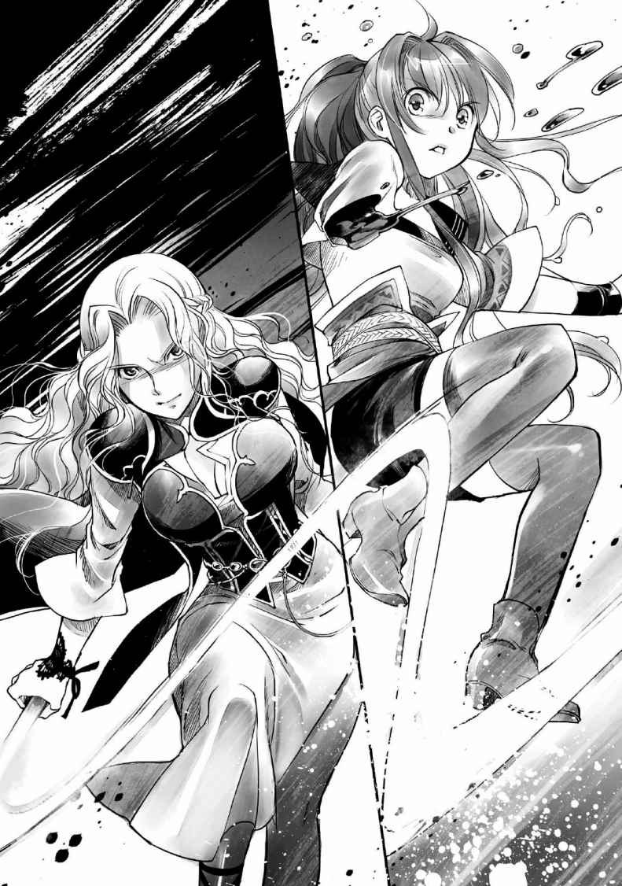
「魔法の鞭。よくよくご自分のイメージを大切にする人なんですね」
「......貴女のその身体、いったいどれくらい切り刻めばおしまいになるか、教えていただけたら楽なのですけれど」
右手に魔法の鞭を具現化させたルクレティアが言う。
......魔法使いのくせに接近戦までいけるのか。なんて奴だ。
スラ子と一対一の状況になって、ルクレティアは逃走という選択肢を捨てたようだった。逃げ切れないかもしれない可能性があるなら、さっさと目の前の障害を倒してしまえという算段だろう。
それより、さっきのゴーレムはなんだ。
煙幕はまだ晴れていない。ルクレティアのゴーレム操作術が俺の想像した類のものなら、それは機能していないはずだ。
実際、四体のゴーレムは沈黙している。
だがそのゴーレムの一体は、さっき確かにスラ子に殴り掛かった。
どういうことだ？
スラ子もそれを警戒して、踏み込めずにいる。
スラ子が慎重になるのは当然だ。ゴーレムが動くのなら、途端に状況は一対一ではなくて一対五になる。
そうした現状を理解しているのだろう、もちろん──ルクレティアが悠然と微笑んだ。
「迷っている暇があるのですか？ 貴女の情けない主が、いつ狂暴な獣に殴り殺されてしまうかわかりませんわよ」
俺は吠え返そうとしたが、そんな余裕がなかった。
俺が全身で押さえ込んでいるカーラの暴れ方はますます激しくなって、ちょっとでも違う部分に力を割いてしまえばそのまま一気に引き剝がされかねない。
ちら、とスラ子がこちらを見る。
その表情に、はっきりと焦りの色が見てとれた。
対するルクレティアは余裕綽々。
実際には向こうだってかなり追い詰められているはずなのに、まるでそんな素振りはない。
そして、現実により不味い状況にあるのは間違いなくスラ子だった。情けないが、俺の腕力はほとんど痺れきってしまっていて、今にもカーラの抑えが効かなくなりそうだ。
スラ子はすぐにでも決着をつけたがっている。
そのための『切り札』もスラ子は持ってはいたが──あれは正真正銘、最後の奥の手だ。デメリットだって半端ないから、相手の手の内が明らかになっていない状態では使えない。
それだけに、さっきのゴーレムの挙動が不気味だった。
そしてルクレティアの態度。
明らかに挑発をかけながら、自分からは決して仕掛けず相手の隙を待つ。
この期に及んで精神的な優位を崩さず、あくまで有利な立場を保守しているあたり、まったくもって始末が悪い相手だった。
「いらっしゃいな。細切れにしてあげますわ」
「残念ですが、叩くのも叩かれるのも、マスター以外からはお断りです！」
スラ子が吠える。
「トルネイド！」
新しく生えたスラ子の右腕。
その手のひらから、渦を巻いた奔流が巻き起こる。
「ちっ」
舌打ちしたルクレティアが炎の鞭を持たない手をかざした。
「ファイアボール！」
水量と熱量が、蒸発してその場に大量の水蒸気を発生させた。
薄れかけていた煙幕の補充？
同時に、相手の視界を妨げたスラ子が霧中に紛れるように踏み出したところで、
「────！」
再び豪腕が振るわれる。
ゴーレムの一撃。
今度は余裕をもってそれを躱してみせたスラ子が、
「──なるほどっ」
なにかを察したのか、微笑と共に囁かれた言葉を聞いた。
スラ子が駆ける。
霧がかった視界の向こうから風切り音。白い靄を切り裂いて、炎の鞭が唸りを上げる。
スラ子はそれを躱そうとせず、
「っ......！」
スラ子の身体が斜めに切り裂かれた。
それでも前進を止めようとしないスラ子の前に、ゆらりと影が現れる。
ルクレティアではない。横幅がある。
それはゴーレムだった。
まだ満足に他のゴーレムが稼働できない状況で、一体のゴーレムだけがルクレティアを庇うような動きを見せている。
その仕掛けはすぐに判明した。
ゴーレムを支えるようにルクレティアが手を添えている。
妖精の鱗粉と、煙幕による操作指示の妨害。
ならば直接、手に触れて操作すればいい。
咄嗟にそれを思いつき、実行してみせるのはさすがだが、しかし新しいタネもわかってしまえばそれまでだ。
すかさずスラ子は地面に手をつき、
「ウォーター、ライドぉっ！」
力ある声に反応して、まるでこの洞窟に流れる地下水流そのもののような奔流が、ゴーレムの足元から吹き上がった。
圧倒的な水圧に押され、ゴーレムが浮き上がる。そのままの勢いで天井に激突した。
同じように他のゴーレム達も直下からの水流を受けて天井まで飛ばされている。
これで落下までの数秒間、ルクレティアの手元にゴーレムはいない。近くにいなければ、操作のしようもない。
だが、ルクレティアは天井を見上げることなく、即座に次の行動に移っていた。
スラ子がゴーレムへ仕掛けた攻撃を致命的な隙と見て取って、右手の鞭を叩きつける。
鋭い鞭の一撃にスラ子の左腕が吹き飛んだ。
顔をしかめたスラ子が、そのままルクレティアに向かって駆けだす。鞭の追撃。今度はスラ子の身体を掠めるように、長く伸びる青髪を切り裂いていく。
スラ子は無視して接近。
先程切り飛ばされて、まだ完全に作り直せていない右腕で摑みかかる。
その手がかかる寸前。
相手が間近に迫るのを見たルクレティアは動揺することなく、右手に炎の鞭を握ったまま残る片手で腰紐に手をかけていた。凝った装飾品のあしらわれた、いかにも高そうな飾り紐だ。
なんだ、あれは？ と俺が思う前に結果が目の前に現れていた。
「っ......!? 」
まるで目に見えない壁にぶつかったように、スラ子が吹き飛ばされる。勢いよく跳ね飛び、地面を転がって壁に叩きつけられた。
魔道具。恐らくは接近戦を嫌う魔法使いが、緊急的な防御に使うタイプで、しかもかなり出来がいい。
左手に飾り紐を巻きつけるようにして垂らした令嬢が、その腕をスラ子へ差し向けたまま、わずかに眉をひそめた。
「......どうしてお笑いになっているのかしら」
令嬢が言ったように、スラ子は笑っていた。
壁に叩きつけられ、それどころかいくらかめり込むくらいの衝撃を全身に受けて、その口元には確かな笑みが浮かんでいる。
その理由は、俺には説明されなくともわかった。
なぜなら、必死にカーラを押さえつけながら二人の戦いを見守る俺も、そのスラ子と同じ表情になっていたはずだからだ。
「ふふー。やっと見せてくれたなあ って、思いまして──」
呟くように言ったスラ子に、ルクレティアがなにか口を開きかけて。はっと上を見る。
スラ子の水流に天井近くまで吹き上げられていたゴーレムが、重力という自然の摂理に従って落下してきていた。
その落下先には、狙ったのか、はたまたただの偶然か。金髪をたなびかす令嬢の姿。
「ちっ......！」
舌打ちと共に、ルクレティアが大きく横に飛んで押しつぶされるのを回避する。
その隙をスラ子は見逃さなかった。
一気に駆ける。
身体を投げ出すように大きく横に飛んだルクレティアは、右手の炎の鞭を消していて、しかし左手には飾り紐を握ったまま。
切り飛ばされた身体を復元させる間も惜しんで突進するスラ子に、ルクレティアは冷静にその『切り札』を掲げ──その麗貌がほとんど初めて、驚愕に歪んだ。
さっき、スラ子を弾き飛ばした強力な力場が発生しない。
いや、正確には発生しているが、その効果がまるでスラ子に及んでいないのだ。
よく見れば、スラ子の全身にはうっすらとした魔力の膜がかかっている。
それは内外の魔力の流れを阻害し、スラ子にとっては魔法の使用と形状の自在変化という自分のアドバンテージを同時に失うことになる一種の禁じ手。
ほんのわずかな持続時間しかもたないために相手の行動を読み、最後の切り札まで見た上でなければ安心して使用することもできないレジストマジックを全身に纏ったスラ子が、
「うりゃー！」
どこかの誰かがついさっきやったような体当たり攻撃でもって、ルクレティアの腹部に突き刺さった。
悲鳴も上げずにルクレティアが倒れ、そこにスラ子が覆いかぶさり。
すぐにスラ子が起き上がる。ほっと息をついて、こちらを見ると、得意げにＶサインをしてみせた。
ルクレティアは──起き上がらない。頭でもぶつけて気絶したのだろう。
「やったか──」
自分の置かれた状況も忘れてほっとしたのが間抜けだった。
俺の気の緩みを逃さず、カーラが暴れて腕の拘束が外れる。やばい、と思ったときにはすでに遅く、
「痛てててって！」
カーラに右腕に嚙みつかれていた。
肉食獣の鋭い歯列ではないが、骨ごと嚙み砕こうとするかのような力に激痛が走る。
「マスター！」
スラ子の悲鳴。
俺は一瞬、反射的に腕をひこうとして、
「くそ！」
逆に思いっきり腕を押しこんでカーラを地面へ叩きつける。
なぜかカーラは踏みとどまろうとせず、されるがままに転がって、そこで気づいた。
「ううう......っ」
咆哮が、いつのまにか嗚咽に変わっている。
さっきまで血に酔っていた大きな瞳に涙が浮かんでいた。
「ううううううう！」
ぼろぼろと大粒の涙をこぼして、悲鳴にも似た唸り声。
「......カーラ？」
嚙みつかれた腕にもう痛みはない。あまりに痛すぎて痛覚が麻痺したのかと思ったが、そうではなかった。
俺の非力な腕に縋りつくように、カーラは泣いていた。
「ううっ！」
「意識、戻ってるか？」
「うううぅ！ ううううう！」
返事なのか唸っているだけなのか判断が難しすぎる。
顔を覗き込むと、カーラは逃れるように俺の腕を持ち上げて目線を隠し、
「......ごめん、なさいっ」
獣じみた嗚咽にまぜて、かぼそい声でいった。
「ボク、こんなつもりじゃ──」
あとは言葉にならず、ただ号泣だった。
困惑する俺に近づいてきたスラ子が、カーラに向かっておだやかに告げる。
「確認してきました。皆さん、息はありますよ。......ちょっと大怪我の人もいますが」
俺はほっと息を吐いた。
とりあえず死者はなし。町との摩擦を最低限にする芽は残った。それに、カーラのせいで死人がでなかったことも。
「らしいぞ。よかったな、カーラ」
声をかけると、カーラは大きく頭を振って、
「ごめんなさい......っ」
なんについての謝罪なのかわからずに俺はスラ子を見あげた。
俺を見おろしたスラ子が、やれやれと大きなため息をつく。
「カーラさん、わたし達の為に調査隊についてきてくれたんですよね。うまく誤魔化そうって。隠し扉のことがバレないように」
よしよしとスラ子が頭を撫でると、カーラの泣き声がいっそう大きくなる。
「そうなのか？」
カーラに訊いてみるが、返事はない。
代わってスラ子が断言した。
「そうなんですっ」
「よくわかるな。お前」
「よくわかりませんね、マスターは」
なぜか俺が怒られている雰囲気だった。
「そか。ええと、ありがとう。カーラ」
泣き声が大きくなった。
ほとんど子どもが大泣きするような声量に、俺はどうしていいかわからずにスラ子に助けを求めるが、
「知りません。今度はマスターの番ですよっ」
なぜかスラ子は怒った口調で、向こうで冒険者達の手足を束縛しているシィの手伝いに歩いていってしまう。
取り残された俺は今さらカーラにのしかかっている状態でいることに気づいて、とりあえず身体を起こそうとしたのだが、がっしり腕を摑まれて身動きが取れなかった。
「まあ、あれだ。とりあえず無事でよかったよ」
返事なし。
カーラは、ただただ大声で泣いている。
しかたがないので独り言のように続ける。
「あの連中、どうするかな。......カーラのこともどうにかしないとな」
びくり、と身体がふるえた。
「違う町に行くとか。魔物アカデミーとか。まあ色々、手はあるが」
ふいに殺気を覚えて顔をあげると、スラ子が笑顔のままこちらを睨んでいる。
わかってるよ。
そこまで鈍感なつもりはない。むしろ敏感な方だと思う、悪い意味で。
それでもなかなか言いづらいのは、
「......カーラ。俺って甲斐性がないやつなんだ」
情けない話だが、そういうことだ。
「スラ子とシィが来るまでずっと一人で。ほんとダメダメで、この前言った、魔物アカデミーに通ってたけど、そこでだってもちろんてんで駄目でさ。それで、」
うだうだと言い訳をしながら、沸々とした怒りが沸いてくる。
それは、他の誰でもない自分への怒りだった。
つまりあれか。
俺はそんな自分が責任を負いたくなくて、カーラに決断を求めていたのか。
人間か、魔物か。その選択は自分次第だという考えが間違っているとは思わない。
誰だって、自分のことは自分で決めるべきだ。
だが、目の前で今、カーラが泣きじゃくっているのはいったい誰のせいだということになれば、理屈も論理も飛び越えて、頭の中では百人の俺が百人一致の有罪判決で俺を極刑に処している。
こんな女の子一人に言い訳もつくってあげられないその器量のなさに情けなくて目が眩むほどだが、それでも身に染みた言い訳癖は止まらない。
ほとんど無意識に垂れ流す言葉の奔流を断ち切ろうと感情が先走り、交友関係が不得手な人間特有の短気さが事を急ぎ、
「それでも、いいからもう一緒に来い。カーラ、これからはここが君の居場所だ」
顔を覗き込んで、腕の下に隠れようとするのを強引にこじあけて、告げる。
カーラが濡れてふやけきった瞳を驚きに見開いた。
ぱちくりと。まばたきとともに涙が筋をつくって落ちる。
そして、
「──はい。傍に、置いてください」
泣き笑いの表情でそう言って。
冒険者見習いの狼少女は、魔物に堕ちた。
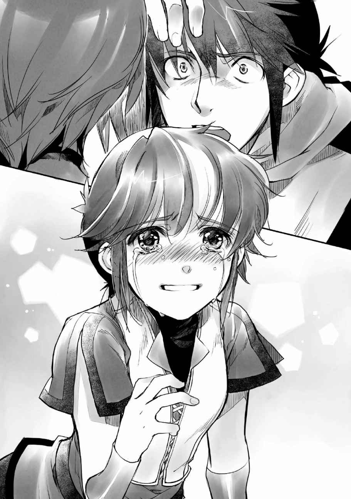
いい年をした男の逆切れという、しまらない告白劇だけで幕が下りてくれるわけではない。
俺はようやく泣きやんだカーラを連れて、スラ子とシィの元に向かった。
そこには捕らえられた冒険者達が縄についている。
総勢十一人にもなる冒険者と、ルクレティア。全員が気絶したまま、まだ意識を取り戻してはいなかった。
「で、どうする」
戦闘には勝ったが、後処理という難題が残っていた。
調査隊の連中を殺すわけにはいかない。
かといってこのまま帰すわけにもいかない。
カーラ達がやってきた時とは違い、この連中にははっきりと俺達の姿を見てしまっている者もいる。
「さすがに、こいつらまで全員パニックを起こして幻覚を見たなんて都合のいい言い訳、ギルドも信じてくれないだろうな」
「ちょっと苦しいですね」
「なにか考えがあるって言ってなかったか」
作戦会議をした時に、そんなことを言っていた覚えがある。
俺が訊ねると、
「とりあえず、ルクレティアさんにはわたしからたっぷりと説得するつもりですが──」
ルクレティアの処遇についてはいつのまにかスラ子の中で何事かが決定しているらしかった。
怖いから反論しないけど。
「この人達には、その下手人役になってもらいましょう」
「下手人？」
「はい。調査に向かった冒険者達が、調査隊を率いるうら若きリーダーの美貌にこう、ムラムラっと。それで、調査なんてそっちのけで悪さを働いてしまったと。ルクレティアさんとカーラさんはその被害者というわけです。おのれ、汚らわしい男どもの獣性め、奴らを去勢せよ！ こんな感じのストーリーラインでいかがでしょう」
「いかがでしょうと言われてもな。......つまり、こいつらにお前がこれからやること全部、罪を被ってもらおうってわけか」
「そういうことです。実際、そういう未遂ではあったわけですし」
無垢で邪気な笑みを浮かべてスラ子が頷く。
「ルクレティアさんは強情な方のようですからね。最悪、説得の途中で壊れてしまうことだってあるかもしれません。その時は王都に戻って療養という形で穏便に町から去ってもらいましょう。ふふー、どちらにしてもどこか壊れてしまわなければ、ここには残れたりもしないでしょうけれど。少なくとも、これまでの生き方を支えてきた価値観には、変質してもらわないといけませんね」
時々、俺は本気でこの自分がつくった人型スライムが恐ろしくなることがある。というかしょっちゅうだ。
スラ子の提案はえげつないの一言だが、かといってほかに代案があるわけでもなかった。
考えながら、俺は隣のカーラの様子をうかがう。
魔物になることを選び、相手が自分に決して好意をもっていなかった人物とはいえ、目の前でかわされる悪事の相談にカーラは顔を青ざめさせていた。
なにも言いはしない。
それが〝魔物〟だということはわかっているのだろう。ただ、カーラが俺の裾をつかんでいる手に、すがるようにぎゅっと力がこもった。
「......だが、ルクレティアが何日も帰ってこなければ町の連中が怪しがるぞ。お前の説得って言ったって、一日やそこらでそこまでするのは無理じゃないか？」
町から洞窟までは半日もない距離だ。
一日帰ってこないだけでも不審がられるだろうし、それが数日となれば絶対に捜索隊が向けられる。そうなれば意味がない。
「ですから、仕込みはこちらで。あとは向こうでやってしまおうかと思います」
「向こう？」
「はい。向こうです」
不審な表情を向けられて、スラ子は悪戯っぽく微笑んだ。
それから一晩中、スラ子はルクレティアを虐め抜いた。
詳細は知らん。精神衛生によろしくない。知ったら暗黒面に落ちてしまう気がする。
俺はシィやカーラと一緒に、洞窟の後片づけをした。
冒険者達にやられて殉職してしまったスライム達を弔い、幸運にも生き延びたものは治療して、とりあえず冒険者連中は縛って一室に転がしておく。
連中の中にはたいした魔法を使える相手はいないようだし、問題ないだろう。
シィには怪我はなかったが、カーラはあちこちに傷があった。
それを見れば、狂暴化した状態のカーラはいくら魔法が直撃してもほとんど動きが変わらなかったが、それは決してダメージがないわけではないことがわかる。
おそらくそれは、痛みを感じないとか。たとえ感じていても、それでも戦い続けるといったような。
......ぞっとしない話だ。
とにかくその日はカーラもすぐに休ませて、残りの作業は俺とシィでこなした。
それも夜更け頃には大体が終わり、
「シィ。ちょっとスラ子の様子を見て来てくれないか。ちょっとでいい」
寡黙な妖精は無言でうなずいた。
──少しして戻ってきたシィは、顔どころか全身が真っ赤に染まってしまっていた。
「ああ、もういい。ありがとう。悪かった」
詳しく話を聞かなくても、それだけでどんな痴態が繰り広げられているか、想像がつきそうだった。
さっきから洞窟には声が響いている。
意識せずに聞き過ごせば風の通り抜ける音にも似たそれは、よく耳をすませてみれば、女の嬌声であったり、悲鳴だったり。やっぱり嬌声だったりするわけで。
「......とりあえず、俺達も休むか。今日はシィもこっちで寝るか？」
いつもシィが休む部屋では、天然魔性な不定形がお楽しみ中だ。そんなところにシィが帰ったらなんに巻き込まれるかわからない。
俺がそう言うと、シィはかすかにほっとした表情で、おずおずとこちらに近づいてきた。
「それでは、マスター。行って参ります」
金髪の女が言った。
正確には、その声は金髪の持ち主の近くから聞こえただけだった。
目の前に立っているのはたった一晩で憔悴しきったルクレティア。
昨夜は休む暇など当然のように与えられなかったのだろうが、ルクレティアの様子はそれどころではなかった。
髪がほつれ、目は虚ろで、全身に力が入らず、ふらふらと今にも崩れ落ちそうだ。
それでいて、瞳の奥は粘りついた色に潤み、フードに覆われた肢体は風に触れただけで刺激を受けるように小刻みに不自然な反応を生じさせている。薄い唇を嚙みしめているのは、声が漏れるのを必死に耐えているからだった。
「......本当に大丈夫なのか？」
一目見ただけで普通ではない状態に、俺は思いっきり不安を感じたが、
「ほら、ルクレティアさん。マスターが心配してます。もう少し普通にしてくれないと、町の人達に不審がられますよ？」
からかうような声が言った。
声はするが、スラ子の姿は見えない。それが聞こえてくるのはまちがいなくルクレティアの立つ方向からで、
「そんな風にとろとろに蕩 けきった顔、他の皆さんに見せてしまっていいんですか？ わたしは全然かまいませんが」
ルクレティアにとりついたスラ子が言った。
身体変化。そして「姿消し 」の魔法。
その二つを使い、今のスラ子はルクレティアの全身に薄く膜のようにまとわりついているのだ。
「わたく、しに......こん──ぁあっ」
息も絶え絶えに、つぶやこうとするルクレティアの声が途中で切れる。なにかに口のなかをふさがれて嫌がるようにむずかる女に、
「言葉遣いはさんざん教えたでしょう？ イジめられるのがほんとに好きなんですね」
嬉しそうにスラ子の声がささやく。
傍から見ればルクレティアが一人で悶えているようにしか見えない、そんな異常な光景に俺はますます不安が強まるばかりで、
「本当に大丈夫なんだろうな」
「大丈夫です、マスター」
自信満々なスラ子の声が返った。
「ルクレティアさんが周りに助けを求めようとしても、こんな風にすぐに口は塞げます。いざとなれば、声帯を溺れさせるくらい簡単ですし──それに。昨日からずっとわたしから飲まされ続けて、それどころじゃありませんから。それでもこんなに口がきけるのは、凄いと思いますけれど」
「お前は大丈夫か？」
「はい。魔力はルクレティアさんから常時いただいてますから。エコですよねっ」
そんなエコはない。
俺は姿の見えないスラ子を、じっと睨むように目線を細めて、
「本当に。大丈夫なんだな」
全身を変化させ続ける魔力消費のことばかりではなく。
自分という姿を長時間にわたって失い続けることで、不安定なスラ子の自我にどんな影響があるか。俺はそっちのほうが心配だった。
返事のかわりに、覚えのある濡れた感触が唇に触れた。
離れる寸前にちらりと舌先が舐めていく。
「──ご褒美いただきましたから。これで、絶対に忘れません」
「......わかった」
スラ子に負担をかける以外、なにもいい考えがあるわけでもない。
「ひとまず一週間。十日程度あれば、ルクレティアさんも根負けしていると思います。それまでは例の冒険者さん達の処置は保留ということで」
「ああ。水と苔 さえ与えておけば、そのくらいじゃ死にはしないだろ」
「はい。こちらもなるべく早く済ませるようにします」
「ふざけ、ぁっ──」
搾り出そうとした声が、すぐに途切れる。
「町に着くまでに、もう少し蕩けておきましょうか」
「や、め......！」
おもねるように、ルクレティアの喉がごくりと強引になにかを飲み下させられて動く。
「なにも知らない町の人たちに見られてしまうのが嬉しくなるまで、いっぱい可愛がってあげますからね。ご飯の時も、寝ている時も。時間の感覚なんてすぐに失くなるくらい、ずーっとですよ？ 夜はお散歩にも行きましょうね。ふふ、ばったり誰かに遭ったらどうなってしまいます？」
「わかった、もういい。シィの教育によくないからやめてくださいお願いします」
シィの耳を塞ぎながら、カーラがまだ起きてきていなくてよかったと心から思った。
「ふふー。では、そろそろ行ってきます。調査隊のことはやっておきますので、カーラさんをお願いします。ルクレティアさんが素直になったら、こちらからご連絡しますね」
「やりすぎないようにな」
言っても意味ないだろうと思いつつ、だからといって言わないわけにもいかなかった。
「──さあ、ルクレティアさん。町の人たちが心配しています。はやく帰って、無事な顔を見せてあげましょう？」
「ああっ......」
意地悪く聞かされる言葉に絶望したかのような、それでいて奥底に喜悦のにじんだ声をあげて、ルクレティアが歩き出す。
もつれた足取りでふらふらと去る後ろ姿を見送りながら、俺は心の底から湧き上がるある種の感情とともにつぶやいた。
「......あいつには逆らわないようにしような。絶対に」
隣では、シィが懸命に首を頷かせて同意を示してくれていた。
エピローグ
スラ子から連絡が来たのはちょうど十日目。一週間が経った日の昼前に届けられた。
仲介して届けられた手紙を持ってきたカーラが、複雑そうな表情を浮かべている。
魔物になることになったカーラだが、今もメジハの町にある家に住んでいた。調査隊の件があるからすぐに姿を消すのもまずいし、別に洞窟に住まなきゃいけないと決まってるわけでもない。
「どうしたんだ？」
訊ねると、カーラははっきりとした眉を寄せて、
「......最近、町で噂になってて」
「ルクレティアか？」
こくりとうなずく。
「調査隊で、酷い目にあって......気が触れてしまったんじゃないかって。ずっと家の中に閉じこもって、たまに外に出たときも人の話を聞いてなかったり、ふらふらしてて。悪い病気なんじゃないかって」
「なるほど......」
さぞ、あの魔性スライムがはりきって虐めているのだろう。
スラ子のはっちゃけ振りもそうだが、俺は別のことが気になった。
「カーラは？ なにか言われてないのか？」
ルクレティアとカーラは、調査の途中でごろつきどもに襲われた、ということになっている。ルクレティアが奇行を見せるようになったのにカーラだけが普通にしているのはおかしいと思われるかもしれない。
カーラが苦い笑みを浮かべた。
「図太いんだろうって。魔物の血が流れてるようなやつと、街育ちのお嬢さんじゃショックも違うだろうって言われてます」
「なんだそりゃ」
勝手なことを言う町の連中にも腹が立つが、カーラが連中からそう言われるようなきっかけをつくったのは俺達だ。
「すまん。嫌な気分にさせて」
カーラはあわてて首を振った。
「平気です。──あの、でもやっぱりボク、こっちに引っ越してきてもいいですか？」
「それはいいけど......日当たりないぞ？ 湿気てるから、洗濯物だって乾かないしな」
スライム達には天国だが、人間にとっては決していい居住環境とはいえない。
「まあ、変なことを噂されるよりはいいか」
「そうじゃなくて。......ちょっとでも、近くにいたいから」
ストレートな感情表現には、大胆なスラ子でそれなりに慣れてきているつもりだったが。
カーラのそれはスラ子とはまたちょっと違う。
あくまで控えめに、それでいてまっすぐな気持ちをぶつけられることにどうしても慣れず、俺は照れくささに視線をそらした。
「ああ、うん。いいんじゃないか。あ、食器とかは余分な数ないから、持ってきてくれると助かる」
「はい」
「......じゃあ。行くか。今日でルクレティアの件にけりがつけば、カーラがこっちに引っ越しても変な目で見られないだろ」
「はい。マスター」
カーラが笑う。
それは洞窟の暗がりなんかでみるのはもったいないくらい、魅力的な笑顔だった。
町長の家に着いた瞬間、
「おお、おおっ。待っておりましたぞ」
町長に両手を摑まれて、俺は思い切り後ずさった。
「へ？」
「あなた様がうちの孫娘を治していただける薬をお持ちと聞いて、首を長くしてお待ちしておりました。先日のご無礼はこのとおり。どうか、どうか孫を助けてやってくださいっ」
「は？」
ほとんど拝み倒される勢いで言われるが、事情がさっぱりわからない。
「お願いします、あの子はまだ若い。それが、あんな、あんな......。あなたがお持ちという妙薬で、どうか！」
床にこすりつけるように頭をさげられて、ああ、とようやく理解が追いつく。
つまり、俺は病気が疑われるルクレティアに、効きの良い薬草を持ってきた人間という役どころらしい。
それが妖精の薬草。
俺達とカーラが試作中の妖精の傷薬はまだ完成していない。
妖精の傷薬に気を鎮める効果があるなんて話も初耳だったから、これはただの口実なのだろう。
町の外にいる俺が妖精の鱗粉を持っていたこと、それで薬草を作ろうとしていたことは道具屋のリリアーヌ婆さんが知っている。
突然、町の外の人間を呼びつける理由が不自然にならないよう、スラ子がでっちあげたわけだ。
「──最善を尽くします」
となればせいぜい神妙な顔で頷いておくべきで、それから使用人に連れられて案内される。
使用人は部屋の前で去った。流行り病が自分に移ることを恐れているような態度だ。
「......どう、ぞ」
ノックに応えたかすれ声を確認して、部屋のなかへ入る。
「マスターっ」
いきなり抱きつかれた。
「おい、こら」
あわてて扉を閉めて、胸元にしがみつく半透明の生き物を見る。
「なんだ、どうしたっ」
「一週間も会っていなかったので、不足していたマスター成分を補充しないとピンチですっ」
......心配した俺がアホだった。
無言で人型のスライムを引き剝がして、上から下まで確かめる。
「マスター、視線がエッチぃですよ？」
「黙ってろ」
スラ子の姿は記憶の限り、以前のものと変わっていなかった。
まずスラ子が長期間の身体変化で自分を見失っていないことにほっとして、
「無事か？」
「つつがなく」
スラ子はにっこりと微笑んだ。
俺はそこでようやくスラ子から視線をはずし、部屋の主の姿を探した。
ルクレティアはベッドの上だった。いかにも寝心地のよさそうな寝台に、ぐったりとして倒れている。
「......あれは平気なのか？ 生きてるか？」
「はい。たった今まで可愛がっていたばかりなので、少し疲れてるだけです」
「離れてもいいのか」
「ええ。ほとんど魔力は空ですし。それに今、ルクレティアさんはわたしに逆らえません」
さらりと、相手を征服したことを確信した台詞。
「この一週間、ルクレティアさんをずーっと可愛がってあげましたから。もちろんわたしの分泌液も絶え間なく与え続けて、普通の人ならとっくに壊れてしまってもいい頃だと思うんですが......」
「お前の顔を見るに、相当楽しかったみたいだな」
半眼で言うと、スラ子はふふー、と唇に手をあてて妖艶に微笑んだ。
「どんなことをしてあげてきたか、聞きたいです？」
「心の底から遠慮する」
「じゃあ、今度、マスターがわたしを可愛がってくれているときにお話ししますね。きっと興奮してもらえると思います」
「いらんと言っとろーが。それで？」
「はい。このまま続けていれば近いうちにルクレティアさんの限界はやってくると思うんですが、そのルクレティアさんから提案がありまして」
「提案？」
「──ルクレティアさん、いつまでそうしてるんですか？ マスターがやってきてくださったんですよ？」
スラ子の言葉にぴくりとルクレティアが身体を動かした。
のろのろと起き上がり、そのまま這いずるようにしてこちらへ向かってくる。
俺は言葉もなかった。
四つんばいのままなのは、単に起き上がる力がないだけかもしれない。
だが、貴族みたいな立ち振る舞いをしていたあのルクレティアが、まるで犬みたいな格好をしているのを見て驚かないわけがなかった。
毅然として誇り高かった姿が見る影もない。
そのルクレティアがふらふらと倒れそうになりながら足元までやってきて、
「貴方に......従います、わ」
「それじゃあ、なんのことだかわかりません。ちゃんと説明してください」
穏やかで強制的な口調でスラ子が言う。
「誓約、の......ご主人様に──私、から......」
意識が混濁しているのか説明がまるで要領をえない。
スラ子を見ると、ため息をついて説明が補足される。
「ようするに、ルクレティアさんがマスターの使い魔になりたいって言ってるんです」
使い魔？
「使い魔の魔法なんて、俺は使えないぞ」
「使うのはルクレティアさんになります。下の者から上位者に捧げる従属の誓約。契約の決定権は上位者、一度成った契約を破棄するのも上位者になります。自分自身を差し出すわけですね」
「......そりゃまた、えぐい魔法もあったもんだな」
「貴族の方々の間では昔から似たようなものがよく知られているらしいです。さすがというかなんというか、ですね」
魔法使いに使い魔はセットみたいなものだが、相手が人間となると話が違う。
だが同時にスラ子が言った通り、いくらでもありそうな話でもあった。他人を無理やりにでも従えたい人間なんていくらでもいる。
「......その魔法が本当に問題ないかわからなくないか？ 謀ってるだけかもしれん。なにかこっちに不都合があるかもだ」
「はい。なので試してみたんです。ルクレティアさん、見せてくださいますか？」
スラ子に言われて、ルクレティアがゆっくりと乱れた服装を持ち上げる。
突然のことにぎょっとしかけて、俺はその白く濡れた肌の胸元に赤く輝く呪印を見つけた。
「お前、まさか」
「はい。今、ルクレティアさんは私の使い魔さんになっちゃってます」
あまりにあっさり言われて、俺は相手を怒る気力も失せた。
ルクレティアが噓を言ったり、提案そのものが罠だったりしたらどうするんだ。というこちらの言いたいことを視線だけで察したのか、
「それについては、じっくりと身体に聞きましたから。大丈夫です」
平然と言ってのける。
「お前なあ」
「もったいないと思ったんです」
スラ子が言った。
「もったいない？」
「はい。これだけわたしから玩 ばれて、まだかろうじて正気を保っていられる強情さにも感心しますけれど。ルクレティアさんの立場は使えます。町の次期有力者。ギルドにも顔が利く。わたし達の立場に、とても有用だと思いませんか？」
それは、確かに。
メジハくらいの小さな町の長はギルドの長でもある。俺達の目標である洞窟の主導権だって、ルクレティアが口利きすれば一発だろう。
「私たちが人間側に持っておきたい内通者、情報提供者。彼女以上の適役はいません」
スラ子の言い分は理屈が通っている。
町のトップを従えてしまうのは、俺達に求められる最上の戦略だろう。こちらはあくまで裏側で、従えた相手にこちらの都合がいいようにさせればいい。
だが、
「......怪しいとしか思えないけどな」
実際に今、こうした自分の足元に這いつくばる姿を見ても、俺にはあのルクレティアがそんな無様な選択をするとは思えなかった。
俺はルクレティアがスラ子に責められているところを見ていない。だからかもしれない。
どうしても疑念が抜けない。
だってそうだ。
長い付き合いがあるわけじゃない。言葉を交わしたのだってほんの少しだ。
それでも──この女が、そんなタマか？
「マスターのお気持ちはわかります」
艶やかに、スラ子が笑う。
「ルクレティアさんにはルクレティアさんの思惑があるんでしょう。このままではわたしに、壊されてしまう。自分という存在を殺されてしまう。それならば、従属を。そういう天秤にかけた結果でしかありません。そうですよね、ルクレティアさん？」
問いかけにルクレティアは応えない。答えるほど余力がないからか、それとも図星だから黙り込んでいるかのようにも見えなくはなかった。
「誰だって死ぬよりは生きたい。当然かもしれません」
「魔物の手下になってまで？ この女がそんな惨めな立場を許容するのか」
この女は生粋の人間至上主義者だったはずだ。
「それについては、ルクレティアさんにしかわからない想いでしょう。ですが──」
スラ子がしなだれかかってくる。
「実際に、色々と確かめました。誓約は絶対です。相手が従ってしまえば、死ねと命じるのも上位者の意思次第。ですからここで死ねということも、王都に帰れと命じることもできます。この人を消すのも、遠ざけるのも、利用するのも。あとはマスターのご意思にお任せします」
「......お前がこのまま主人でいればいいだけじゃないのか？」
わざわざ俺がルクレティアを従える必要なんてない。
しかし、それにはスラ子は柔らかい表情のまま、
「わたしはマスターだけのものですから。それ以外には誰も、なにもいりません」
きっぱりと言った。
俺はため息をついて、それまで俺とスラ子の話を黙って聞いていたカーラを見る。
「カーラ。なにかあるか？」
急に話を振られ、カーラは戸惑ったようにこちらを見上げた。
「......ボクは、誰かが死ぬのは嫌かなって」
カーラらしい台詞だった。
俺はもう一度、床に這いつくばるルクレティアを見てから。決心した。
「わかった。そうしよう」
ルクレティアを王都に帰しても、それで町と俺達の関係が良くなるわけじゃない。
洞窟の主導権を奪うためにはこれからもなにか行動を起こさなければならないのだから。そのチャンスが今この場に落ちているというのなら、やるべきだ。
「では、わたしとルクレティアさんの契約は破棄します。──はい、破棄しました」
ルクレティアの胸元からあっさり呪印が搔き消える。
「さあ、ルクレティアさん。誓約する魔力くらいは戻ってますね？ わたしのマスターにそれを。なにかおかしな真似をすればどうなるかはわかりますよね」
笑顔のまま脅迫するスラ子に怯えるように、ルクレティアが顔をあげる。
その眼差しはどこかぼんやりとして焦点があわず、表情はまるでスラ子の言葉に操られているかのように覇気がなかった。
ルクレティアが震える両腕をあげ、顔の前で雨水をすくうようにあわせて、
「この身を捧げ......忠誠と、従属を......。あなたの命 に生き──あなたの命 に殉じ、──カーゾ、ース」
血のように赤い魔力光が、手のひらの上に凝結する。
「飲ませてあげてください。それで、ルクレティアさんはマスターのものです」
一摘まみしたそれを口元に運ぶと、ルクレティアは命の種であるように嚥下 して。
「──よろしく、お願いします......わ」
壮絶な笑みで俺を見上げ、気を失った。
床に倒れたその胸元に再びはっきりと、赤い呪印が浮かび上がる。
「マスター。おめでとうございます」
スラ子は嬉しそうだったが、俺は渋面になる自分に気づいていた。
気絶する直前にルクレティアが浮かべた表情。
床に這いつくばり、貧者のように見上げながらの視線にははっきりとした意思の輝きがあって、なんとも嫌な予感がしていた。
俺が感じた嫌な予感の正体が判明したのは次の日のことになる。
スラ子の責め苦から解放され、一日で多少でも体調が回復したらしいルクレティアがあらためて洞窟にやってきて、
「あらためてご挨拶に参りました」
はじめて会った時となんら変わらない傲然と見下した態度でそう言った。
「ルクレティア・イミテーゼル。貴方に命 を捧げ、貴方の命 に従うしもべですわ」
相手への従属を宣言して、なに一つ恥じることはないと、まっすぐにこちらを睨みつけるようにしながら吐き捨てる。
俺は無言のまま、隣でにこにこと笑顔のスラ子を見た。
「......なあ、スラ子」
「はい、マスター」
「使い魔って言ったら、あれだよな。従順で。謙虚で。忠実？」
「そうですね」
ちらりと視線を戻して、そこに主人然として立つ金髪の令嬢を見て、
「ものすごく違和感があるんだが、俺だけか？」
「忠実なしもべが挨拶をしたというのに、お返事もいただけないのでしょうか。私は貴方様に仕える身、非礼を咎める立場にはおりませんが、それでは他者を従えるお方がとる態度として如何なものでしょう」
「おい。おい、なんかいきなり説教始めてるぞ？」
「斬新な使い魔さんですねー」
斬新の一言で済ますつもりか。
「あー。えーと、ルクレティア？」
とりあえず、気を取り直して声をかけてみる。
「はい。ご主人様」
「その、もう大丈夫なのか？」
「質問は明快にしていただけませんでしょうか、ご主人様。あいまいな質問ですとお答えするのが大変な量になってしまい、ご主人様の貴重なお時間をわずらわせてしまうことになりかねません」
「もうあなたの身体の具合はケッコウナンデスカ」
「おかげさまで。しばらく奥からの疲労は抜けきらないかと思いますが、日常生活程度なら差し障りありませんわ」
「それはようゴザイマシタ」
「ありがとうございます。ところでご主人様、一介のしもべに向かってそのようなへりくだった言い方をなさる必要はございません。むしろ示しがつきません。どうぞもっと尊大に、馬鹿っぽくお話しください」
俺は隣を見て、
「......おい。今、馬鹿って言ったぞ。お前も聞いたよな？」
「気のせいじゃないですか？」
スラ子はにこにこと笑顔のまま。
「気のせい。そうか、そうだな。──ええとだ。それで、ルクレティア」
「なんでしょう、お馬鹿様」
「はっきり言ってんじゃねえか！」
大声に、ルクレティアは冷めた視線で、
「ご主人様の前振りにのっかってさしあげただけですわ」
「そんな気遣いいるか！」
「それは失礼いたしました。以後、注意いたします」
まったく悪びれもしない態度。俺は自分よりよっぽど上等な衣装を身につけた相手を睨みつけて、
「なにを企んでる」
「企む？」
怜悧な表情を閃かせて、ルクレティアが答えた。
高そうな服の襟ぐりを惜しげもなく広げ、豊満な胸元にうっすらと輝く赤い呪印を見せつけるようにしながら、
「とんでもありません。私は貴方の忠実なしもべです。この場で床を舐めろと言われようが、股を開けと言われようがすべて従いますわ」
挑発的な眼差しで俺を見る。
「ですが、私が貴方の使い魔ということは。貴方は私の主ということです」
「......そりゃそうだろ」
「はい。私は貴方のもの。ということは、貴方は私のもの」
「待て。ちょっと待て」
言葉をさえぎって、再び隣のスラ子を見る。
「なんかあいつ、変なこと言ってないか？ なんかごく自然に物凄く理不尽じゃなかったか？」
うーん、とこれにはさすがのスラ子も首を傾げて、
「斬新な解釈と言えないこともないですが......面白そうなのでいいんじゃないでしょうか」
「おい面白そうとかなにぶっちゃけてんだお前は」
ひそひそと言葉をかわす俺達に冷たい眼差しをくれたまま、
「──ご主人様、一つよろしいでしょうか」
ルクレティアが言う。
「なんだ」
「私は貴方の忠実なしもべです。貴方様がこの洞窟に人間が入りこむことを快く思われていないことは、そちらのスラ子さんからよく聞かされております」
「それで？」
「はい。そちらについては私にお任せください。祖父にかけあい、方針としてすぐに周知徹底いたしますわ。ルーキーの鍛錬そのものを中止させることは、さすがに町の自衛の問題から難しくありますが、この場所をその鍛錬所から外すことは可能です」
「そりゃありがたいが、そんなことをして一体お前になんの得があるんだ？」
「得などと。私は忠実なしもべなのですよ、ご主人様」
その一言がすべての行為を許される魔法の言葉であるように、鋭い表情のままルクレティアは繰り返した。
「貴方様がご自由にこのあたりで過ごすことのできるよう、私は私の立場と能力をすべて使ってあの町を掌握いたします。それがご主人様のためになると信じておりますので」
ルクレティアの意図を悟り、俺は目を細める。
「なにが言いたい？」
「私のようなしもべの立場から、ご主人様に強制するようなことはございません。ただ、もしも私がもっと動きやすいようにして頂けるというのであれば、それはきっと貴方様にとってもよい結果に繫がることかと思われます」
俺は呆れ返って声もなかった。
この女はつまり、自分があの町で権力を握る手助けをしろと言ってきているのか。
現状、ルクレティアの町での立場は微妙だ。
調査隊に失敗し、そのあと気が触れたような状態になったことは町中に知られている。
奇行癖のある権力者など誰がトップに据えたがる。このままではルクレティアは早々に婿を決められ、あとの一生をずっと家庭に閉じ込められるかもしれない。
それが許せないのだ。この女は。
だから魔物に屈服しても、その魔物の力を利用してまでも町を手に入れようとしている。
どこが従属だ。従順だ。
まぎれもない服従の証を燦々と胸元に輝かせながら、このルクレティアは何一つとして自分を見失ってなんかいなかった。
簡単に堕ちる人間だなんて思っちゃいなかったが。
転んでもただでは起きないどころじゃない。
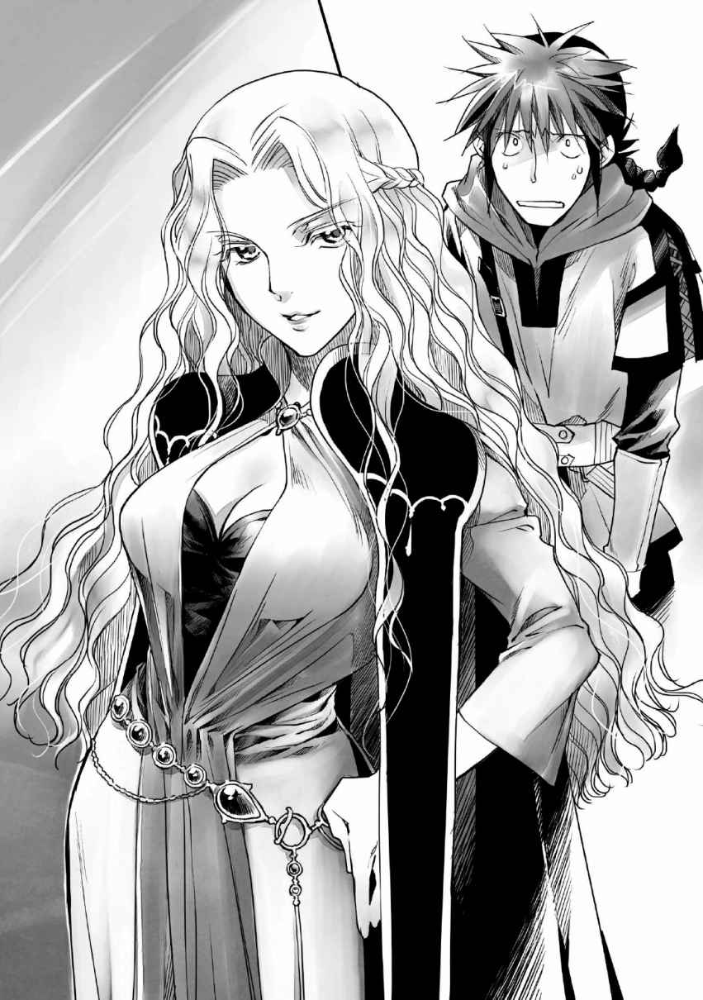
「......あの冒険者達はどうする？ お前が連れてきた連中だ」
ルクレティアの真意を確かめるつもりで訊くと、
「お許しいただけるなら、私が連れ帰ってギルドに引き渡して裁かせます。最低でもこの町からは追放ということに。それか、この場ですぐにでも始末されるべきでしょう」
平然と答えるのに渋面になってしまう。
「魔物だけじゃなくて、人間にも厳しいんだな」
「当たり前ですわ」
答える態度に全く欠片もブレを見せず、魔物に従属した令嬢は言った。
「魔物だろうが人間だろうが関係ありません。私は私が大事なのです。それ以外はなんであろうと知ったことではありません。そもそも──」
冷ややかな表情で、
「初めから、私はそのためにこそあの方々を洞窟へ同行させたのです」
「どういう意味だ？」
「あの方々は、いわゆる『冒険者』を名乗る中でも最底辺の方々でした。ろくに仕事をせず、昼間から酒を飲んでばかり。この町のギルドは確かに上質とは言えませんが、そのなかでも彼らはもっとも低俗と言える方達です。私にとっては邪魔でした。その方々が消えてくれるというなら、私にとっても悪い結果ではありません」
「......そう言えば、洞窟の中で言ってたな。お前、あの連中が自分を襲おうとするってわかってたのか」
「女二人に、ガラの悪い男達が十人以上。誰でなくとも十分に考えられる事態でしょう」
ルクレティアは平然と言った。
呆れた。
なら、最初からそれを見越して、その上で叩き伏せられる自信があったから、連中を同行させたってことか。
なんのために？ それはもちろん、連中をメジハのギルドから追い出すために。あるいは、力を見せつけて屈服させるためにだろう。
なんでそんなことをするかということについても、考えるまでもないことだ。
「......将来、長を継ぐならギルドの取り纏 めも仕事の内だ。そのために、今からギルドの大掃除までやろうとしてたってわけか」
つまりカーラという存在を使って冒険者連中の本性を曝 け出させた上で、その連中が暴走して自分にまで牙を剝こうとするのを叩き伏せて屈服、排除しようとした。カーラへの対処と町にいるごろつき連中の対処を同時にやろうとしたのか。
「機会があるのなら、それを活用しない理由がありません。......もっとも、今回ばかりは少し迂闊ではありましたが」
語尾に僅かな悔しさが滲む。
確かに、あの冒険者とカーラやルクレティアとの仲間割れがなければ、その後にあった俺達との戦闘の結果だって変わっていたかもしれない。
少なくとも、俺やスラ子という明確な敵との戦闘が確実に控えているとわかっていれば、ルクレティアもギルドの綱紀引き締めだなんてことは次回の機会に持ち越したことだろう。
なら、ルクレティアは俺達との戦闘が起こるとは思っていなかった？
それはそれで、明敏な令嬢らしくはない見落としではある。カーラが俺達と通じている可能性まではきちんと把握していたのだから。あるいは、それを見越した上でなお十分な勝算があると思っていたのか。だが、結果を見ればそれは誤りだったわけだ。
──焦ってるように見えて心配さ。
道具屋の婆さんの台詞を思い出す。
なるほど、と思った。
確かにリリアーヌの婆さんが言った通り、ルクレティアの焦りが足元を掬った形だ。
そう納得するのと同時、今のやりとりでようやく、俺は目の前にいる相手の本質を理解できた気になっていた。
人間至上主義なんかじゃない。
ルクレティア・イミテーゼルは、ほとんど究極と言っていい自己中心主義者だった。
そのあたりの魔物よりよほど魔物らしい。
自分がいくらなろうとしたってなれない、ある意味でまっすぐな生き方に、俺はただただ息を吐いて、
「──わかった。とりあえず、町のことは任す。ひとまず今日は連中をつれて帰ってくれ。また連絡をいれる」
「かしこまりました、ご主人様。それでは本日は失礼いたします」
完璧な礼儀作法に則って頭を下げ、退室する。
ルクレティアが部屋を出る直前、扉の近くに待機していたカーラとルクレティアの目線があった。
「────」
両者の間に流れる冷ややかな空気。
互いになにも言わないまま、視線がそらされる。
「カーラ。シィと一緒に、ルクレティアが冒険者達を連れて帰る手伝いをしてきてくれないか」
「......はい」
複雑そうな心境を表情に頷いて、カーラとシィも部屋を出て行く。
それを見送って、俺は深いため息を吐いた。
「ふふー」
部屋の中に二人きりになった途端、スラ子が抱きついてくる。
「なんだか凄いことになっちゃいましたねっ」
「なにがだ。なんだあの修羅場感。生きた心地がしないんだが」
「カーラさんもルクレティアさんもまだ慣れてませんから。そのうち仲良くなる機会だってありますよ」
本当にそうならいいんだけどな。
女性特有の言語下のせめぎあい。ああいうのは、寿命が縮むようでものすごく身体に悪い。
それに、
「ルクレティア、あれは従属なんて目じゃなかったぞ」
「そうですね」
表情を妖しく細め、スラ子が揺れる。
「あの人は、きっとマスターを虜にする自信があるんだと思います」
「虜？ 俺をか？」
「はい。ルクレティアさんの胸にはマスターへの隷属の証があります。それを外せるのはマスターだけ。でも、別に外さなくとも、マスターがあの人に心を奪われてしまえば、あの人の思い通りにマスターに命令をださせることだって出来ますよね？」
なにそれ怖い。
ふふー、とスラ子は楽しげに頭を揺らし、
「それだけの自信があるんでしょうね。マスターを虜にする容姿、能力に手練手管。ふふ、本当にすごい人だと思います」
そうしたルクレティアの考えを読んで尚、余裕でいるスラ子の態度が不思議で、
「お前はいいのか？ 俺があの女の虜になるかもしれないってのに」
俺は訊ねた。
虜云々はともかく、俺なんてあの欲望に正直な女にすぐ取り込まれてしまうかもしれない。
スラ子は妖艶に笑って、
「言ったじゃないですか。わたしに必要なのはマスターだけです。マスターがわたしのマスターである限り、他がどうなっても構いません。ルクレティアさんのおかげで、洞窟のことも町のことも落ち着きますし。──でも」
「でも？」
「マスターがわたしのマスターでなくなったら。その時は、どうなるかちょっと自分でもわかりません。ふふー、泣いちゃうかもしれません」
冗談めかして言ったその言葉がもっと深い意味を持っていることに、気づいた。
願い、あるいは強迫。
──ずっとわたしのマスターでいてください。
その言葉に秘められた真意が俺には摑みきれない。
いったいそれは、変われと言っているのか。それとも変わるなと言っているのか。
いや。その答えを、果たしてスラ子自身わかっているのかどうか。
目の前では、不定形の眼差しが揺れるようにこちらを見つめている。
俺の在り方がスラ子の全てを決める。
その事実を改めて苦々しく心に刻みつけながら、目を閉じる。
嚙み締めるように答えた。
「......俺はお前のマスターだ。情けなくて、弱っちい。それは変わらないだろ」
「でしたら、わたしはあなたのスレイブです。永遠に、心から。お仕えします──わたしのマスター」
柔らかくて温かな感触が、触れた。
貴族の令嬢と人狼の少女
その日、大陸の小国レスルートの辺境にある田舎町、メジハに一台の馬車が到着した。
この地域一帯を治める領主ゼベルート家の紋章が彫られた扉が開き、一人の女性が降り立つ。まだ十代半ばの年頃の相手は、その姿を見た町の人間が思わず鍬 を振るう手を止め、足を止めてしまう程に見目麗しかった。
煌びやかな金髪が腰近くまで伸び、すらりとした肢体も含めた造形は、創世の折、人の形を定めたという精霊が細部まで拘ったかのような繊細さで象られている。服装も、よく用いられる亜麻 や羊毛ではなく、もっと仕立てのよい物であると一目でわかる。貧しい家族であれば一月はゆうに食べるのには困らない程の値打ちがある紗織物は、その値に十分に見合うだけの光沢を発していたが、あくまで着ている人物の引き立て役に留まっていた。
それでいて全体に浮世離れした雰囲気がないのは、端整な風貌の中央にある切れ長の碧眼がはっきりとした意思で縁どられているからだった。御伽話 に登場し、蔦這う塔の最上階で憂いの吐息を漏らす深窓の令嬢とは一線を画する表情だった。
御者台から二人の男が降りる。こちらも良い格好だが、やや服に着られている印象だった。当人達の表情に拠るところも大きい。十歳程の年の差がありそうな二人の男は、どちらも自分自身の衣装に窮屈そうな気配があった。
「町長のところまでご一緒いたします」
「必要ありません」
育ちの良さが窺える典雅な発音で令嬢が言った。透明な声音は、聞く相手次第では冷ややかにとも受け取られかねない。そのことを察したように、令嬢は微笑を添えて説明を追加した。
「身内に会いにゆくのに護衛までしていただく必要もないでしょう。お二人とも、長旅でお疲れのはず。どうぞ、宿でお休みになってください。後ほど祖父と共に改めてお礼に伺います」
言いながら、年長の方の男に金貨を握らせる。
「......これは？」
「もちろん、町にいる間の滞在費ではありません。この町にいらっしゃる間、飲食にかかった代金はこちらで受け持ちます。酒場にあるお酒の味までは保証できませんが」
深い彫りの男は目の前の令嬢を探るように見て、頰を綻ばせた。
「──わかりました。なにかご用事があればお声がけを」
「ありがとう」
素っ気なく頷いて令嬢が振り返ると、そこには大勢の町人が集まっていた。先頭に腰を折った老人が杖をついて立ち尽くしており、
「......ルクレティア。ルクレティア、か？」
震える声で誰何を受け、金髪の令嬢は首肯した。
「初めてお目にかかります、お祖父 様。ただいま戻りました」
「おお......」
感極まったように声を詰まらせる老人に、ルクレティアはさりげない所作で相手との距離を詰め、小柄な身体を包み込むようにそっと腕を回した。
「お父様とお母様のことで、さぞや悲しい思いをなされたでしょう。今までお一人にしてしまって申し訳ありません。すぐに駆けつけられず、至らぬ孫をお許しください」
「なんの。お前こそ、ずっと親元を離れて辛い思いを。両親にも会わせてやれず、すまない......」
丸めた背中を震わせて無念さを滲ませる。目から鼻からの体液が高価な服装を汚したが、まったく気にする素振りもなく、孫娘は祖父の背中をさすって宥めにかかった。
突然の魔物の襲撃と、起こった不幸。
それによって叶った祖父と孫娘の出会いに、それを見守る周囲にも、つられて涙を流す人々の姿が多かった。町長の娘夫婦以外にも町では少なくない数の犠牲者が出ていた。
世に蔓延 る魔物を呪い、自分達を襲った不幸を嘆いて落涙する人々の間で、涙を流していない人物がいた。
愁嘆場の中央で年老いた祖父をあやす美貌の令嬢。彼女だけは苛烈なまでの眼差しを濡らすことなく、長い睫毛を半ば伏せたまま、目の前の地面を見据えていた。
メジハの人口はおおよそ七百人を数える。
これは集落としてはそれなりの規模ではあった。百年より昔、この大陸は世界的な災害に見舞われている。その結果、各地に魔物が跋扈 して、交通や物流は著しくその自由度を制限されることとなった。それが可能となる舗装された街道、あるいは魔物や野盗の襲撃に対処できるだけの態勢や周辺治安を保持できるのは、一部の街や都市に限られていた。
周囲との交流があまり見込めない以上、集落ではそこで消費する全てを自給自足する必要が出てくる。当然、まずもっとも重要なのは食料だった。
メジハでも大半の町人が農業を営んでいる。広さや形もまちまちの不恰好な畑に植えられているのは主に麦だった。小麦ではない。小麦を使ったパンの存在は広く知られていたが、気候の問題からこのあたりでもっぱら育てられているのは別の種類のものだった。
あちこちの畑では町の人間が横に並び、列を組んで麦踏みを行っている。春の出穂に向けて苗を鍛えるその作業は、本来は豊作を願う歌と共に行われるが、つい最近に知人を亡くしたばかりの人々から陽気な歌声は上がらなかった。顔を俯かせ、粛々とした光景にはどこか儀式に似た雰囲気があった。
町の高台にある長宅の前から、ルクレティアはその様子を眺めていた。緩く波打った金髪が風にそよいでいる。
「ルクレティア、どうしたね」
後ろからの声に振り返ると、町の長を務める彼女の祖父が杖をついて外へ出て来ていた。
「町の皆さんがお仕事されているところを見ていました」
「ああ、慣れていないとおかしな光景に見えるかもしれないね。ああやった方が、麦が丈夫に育つんだよ。天気や土の様子を見ながら、二回、三回と踏みつけてやるんだ」
「麦踏みですね。そういった工程があることは知っていましたけれど、実際に見ると大変そうな作業ですね」
「うん、うん。だが、それを怠けてしまうと収穫できる量が途端に減ってしまう。大事なことなんだ」
そうだ、と老人は皺の深く垂れ下がった瞼を持ち上げて、
「ルクレティア。よかったら、お前も作業を手伝って来たらどうだね。皆も喜ぶと思うが」
ルクレティアは手入れの行き届いた金髪をやんわりと揺らして応えた。
「せっかくですが。豊穣を司る土の精霊はなにより陽気さを好むと言います。皆さんが辛いのを堪 えて作業なさっているのに、私が行ってはかえって邪魔になってしまうだけかもしれません」
「そうか。無理にとは言わないが......」
渋面をつくりかける相手へ、ルクレティアは間を置かずに口を開いた。
「お祖父様。町で栽培されているのは大麦でしょうか。小麦もありますか？」
「ん？ うん、大麦が主だよ。小麦は、このあたりではあまり多く獲れないから、ほとんど領主様に納める分だけだな」
「なるほど。他に栽培されている食物はなんでしょう。あちらの空き地は、あれは亜麻 畑の後ですか？」
「あ、ああ。そうだが」
「収穫後はあのように放置なさっているのですか？ 亜麻 の栽培場所は年毎にお替えになっていることと思いますけれど、その時にはなにを育てられていますか？ 家畜の姿が見えないのはどこかに集めていらっしゃるからでしょうか。ああ、それから小麦のことですけれど。最近では寒さや、病にも強い品種も増えて来ています。よろしければ王都にいる知人に言って、そうした種籾 を融通していただきましょうか。それと──」
「ルクレティア、ルクレティア」
慌てた様子で町長が声をかけた。困ったような顔になっている。
「お前はまだこの町に来たばかりなんだ。そんなことより今はゆっくりと身体を休めて、そして、一刻も早く町の人間に馴染んで、いい家庭を築いてくれ。お前の両親もそれを願っていると思う......」
一瞬、ルクレティアの眉が急な角度に持ち上がりかける。だが、内心の感情を抑えて令嬢はすぐに表情を和らげて、
「......承知いたしました、お祖父様。出過ぎたことを言って申し訳ありません」
ほっとしたように町長は息をつき、小さく咳き込んだ。
「お祖父様。今日は冷えますから、どうぞ家の中へお戻りください」
「うん、うん。お前はどうするね」
「私は町へ下りて参ります。まだご挨拶できていない方もいらっしゃいますし、麦踏みをなさっている方々にも」
「おお、そうか。わかった。行っておいで。だが、あまり遠くには行かないようにな。いつ、また魔物どもがやって来るかわからない。最近、町に狼が住みついているとかいう話もある」
ルクレティアは興味を覚えたが、それを訊ね返すことはせず、自分の祖父を家に連れていき、使用人に補助を委ねてから背中を向けた。
「ルクレティア。くれぐれも、遠くへ行くんじゃあないぞ。お願いだから、儂 を一人にしないでくれ──」
後ろから届いた弱々しい声に、立ち止まって振り返る。相手を安心させるように柔らかく微笑んでから、再び前を向いた時には彼女はその笑みを消していた。
町の外れにある一軒の道具屋。
いかにも寂れた風情の店内に客の姿はなく、奥には意地の悪い目つきをした老婆が退屈そうに応対机 に頰杖をついている。店先に吊り下げられた鐘が鳴り、珍しい来客の訪問を告げても、老婆はまったく表情を変えなかった。
じろりとした目つきを店の扉へ向けて、そこで初めてかすかに眉を持ち上げる。開かれた口から、
加齢味にしゃがれた、だが十分に生気に満ちた声が押し出された。
「初めて見る顔だ。あんたが、こないだ王都からやって来たっていう町長の孫かい」
「はい。ルクレティアと申します」
「そうかい。あたしはリリアーヌさ。よろしくね、ルクレティア。それで、いったいなんの用だい」
つっけんどんな物言いに、金髪の令嬢は涼やかに応えた。
「一昨日、この町に着いたばかりでして。町の皆さんにご挨拶参りをさせてもらっています」
「そりゃいい心がけだ。けど、あたしのとこなんかやって来なくてもよかったよ。どうせこの店だって見ての通り、客なんか滅多に来やしない。たまに陰気な顔した駄目男が小金をせびりに来るくらいさね」
「......退屈なさっているのですか？」
「ああ、退屈だね」
「それでは、どうしてお店をやっていらっしゃるのです」
「決まってるじゃないか。退屈を楽しむためさ」
リリアーヌの言葉にルクレティアはわずかに眉をひそめて、
「失礼ですが、とても楽しんでいらっしゃるご様子には見えませんわ」
「なに言ってんだい。退屈を楽しもうってのに、退屈そうな顔以外のどんな顔をしろってんだ」
大真面目な口調で、それこそ退屈そうに言う。相手をまじまじと見つめてから、ルクレティアは小さく笑みを零した。
「おかしな人ですわね」
「そう言うあんたも、ただのお嬢様ってわけじゃなさそうだね」
老婆は胡乱 げな眼差しを向けて、
「こんな田舎町にやって来ることになっちまったんだ。都会暮らしに慣れた貴族のお嬢様なら、さぞ落胆して口を開けばため息ばかりだろうと思ったら、そうでもないらしい。田舎が過ぎて逆に新鮮かい？」
「そうですね。確かに、この数日はとても新鮮な驚きに触れることが出来ています」
ふん、とリリアーヌは鼻を鳴らした。
「そりゃ良かった。まあ、すぐに飽きちまうだろうけどね。退屈の過ごし方ってのを今の内から覚えておいた方がいいよ、あんたも」
「そうかもしれません」
ルクレティアは頷き、それからぽつりと続けた。
「......退屈は、嫌ですわね」
小さな呟きだったが、それを聞きつけた老婆がひょいと眉を持ち上げた。
「なんだい。もう飽きちまったのかい」
「そういうわけではありませんが、」
金髪の令嬢は頭を振った。
「自分にいったいどのような役割が求められているかはわかっているつもりです。周囲からの監視に息を詰まされるのも、王都で慣れました。ただ──」
そこで言葉を区切り、息を漏らす。
「失礼。初対面の方に愚痴を聞かせるなど、とんだ無作法でした。忘れてください」
「そうかい？ まあ、忘れろってんなら、そうするよ」
気のない様子で老婆は言い、自分の世界に浸るように瞼を落とした。
ルクレティアは老婆の様子を窺い、相手の言葉が信用に足るものであることを確認すると、軽い会釈を残して踵 を返した。扉に手をかけたところで、
「......あんまり焦らないことだよ。都会と田舎じゃあ、時間の流れる速さが違う。それに慣れることだね。そうしたら、そのうちあんたが振る舞いたいようにもできるさ」
令嬢が肩越しに振り返った。冴えた容貌に皮肉げな表情が浮かんでいる。
「〝そのうち〟という言葉が意味する期間にも、随分と齟齬がありそうですが？」
「十年もありゃ十分だろうよ。あんたは若いんだ。そのくらい、あっという間だろ」
老婆が眠たげに目を開け、令嬢の表情に失望の色が差しているのを見て肩をすくめた。窓の外に視線をやる。
「そんなに待てないってんなら、地道にやってくしかないね。今、町の連中が総出でやってる、麦踏みに交じって顔を売るとか。ああいうのに参加するのが、連中から受け入れられるには一番手っ取り早い。そうすりゃあ、田舎育ちののんびり歩きじゃなくて、早歩きくらいにはなるかもだ」
「全員が参加しているというわけでもないようですね」
ちょうど窓の外を、彼女と同じ年頃と思われる少女が歩いている。老婆は顔をしかめた。
「......あの子はまた、ちょいと事情が違うのさ」
ルクレティアはちらと視線を向けたが、老婆がそれ以上補足するつもりがないことを見て取ると、小さく頷いて、
「それでは失礼します。また伺ってもよろしいでしょうか」
「かまわないよ。どうせなら、今度はなにか買っていってくれたら嬉しいんだけどね」
令嬢は肩をすくめた。
「それはこの店の品揃えによりますわ。私、無駄使いはしない主義ですので」
「言ってくれるじゃないか」
町長の孫娘が店を去った後、それと入れ替わるように別の客が訪れた。
今度の相手はさっきの人物とはまるで異なる少女だった。活動しやすいよう短めの髪には白っぽい一房がまじり、しなやかに伸びた腕と脚はよく日に焼けている。
「こんにちはっ」
太陽の陽射しをそのまま持ち込むような潑剌とした挨拶に、リリアーヌが眩しげに目を細めた。
「こんにちは、カーラ。今日も元気がいいね」
「それだけが取り柄だもん」
照れくさそうに微笑んで、手にしたバスケットを掲げてみせる。
「綺麗なお花が咲いてたから、摘んできたの。活けてもいい？」
「ああ、ありがとう。助かるよ。花なんて、自分じゃもう採りに出たりしないからね」
「うん。流し台、借りるね」
老婆の横をすり抜けて奥にある住居へ続く扉を開け、食卓に飾ってある花瓶から古くなった花を抜き取り、近くに汲み置きしてある水桶から新しい水に入れ替えて、摘んできた花を生ける。大ぶりな黄色の花弁が水気に揺れた。
手慣れた動きできびきびと働く少女を眺めていた老婆が、ふと床に置かれたバスケットの中身を見て口を開いた。
「そっちのは、薬草かい？」
「うん、ちょっとそこの川辺まで採りに行ってきたところ」
「へえ。挽いたら、また持っておいでよ」
老婆が言うと、カーラは困ったように眉をひそめた。
「なんだい？ もう売り手が決まってるんなら、無理にとは言わないよ」
「そうじゃないけど。リリアーヌのとこには、ちょっと前にも買い取ってもらったばっかりだし。悪いんじゃないかなって」
「あんた、ここが道具屋ってことを忘れてるんじゃないのかい。道具屋が、店で売る品を仕入れようとしてなにが悪いんだい」
「それはそうだけど......」
少女は頷いて、遠慮がちに店内を見回した。
店内に客の姿はなく、適当に積まれた品々には埃を被っているのも多い。売買が行われた形跡どころかそうしたことが行われそうな気配さえ窺えない状況に、心配そうに口ごもってから、恐る恐る訊ねた。
「本当に、大丈夫？」
「大丈夫って言ってるだろ。だいたい、この店以外にどこで売ろうってんだい。アポジのとこなんて行ってごらん。あのケチのことだ、ボロクソに買い叩かれっちまうよ」
「あ、うん。アポジさんのところ、前に行ったんだけど......」
「ひどい値をつけられたろう？」
「ううん。買い取ってもらえなかった」
恥ずかしそうにカーラが首をすくめる。老婆は顔をしかめ、それから頭を振った。
「ったく。しょうがないね。......いいから、こっちに持ってきな。グズグズしてる間に駄目になったりしたら勿体ないじゃないか」
「......ありがとう」
「感謝するくらいなら、ほれ、茶でも淹れるからちょっと付き合ってから帰っておくれ。ちょうど退屈してたんだよ」
「......やっぱりお店、心配だなあ」
「いいんだよ。退屈を楽しむためにやってるような店だけどね、だからって、なにも退屈以外を楽しんじゃいけないってわけでもないさ」
韜晦 するように諳 んじてみせてから、老婆はよいしょと重い腰を持ち上げた。
「ねえ、カーラ。やっぱり、あんたはこの町を出た方がいいと思うんだけどねぇ」
自分好みの渋味のある花草茶を啜りながら老婆が言った。
「言いたかないが、町の人間があんたをどう思ってるかは知ってるだろう？ 人手なら少しだって欲しいはずの麦踏みにだって参加させないくらいだ、連中はあんたを疎んでる」
メジハの町が人狼と呼ばれる魔物に襲われたのはつい一月ほど前のことだ。壊された家屋は補修され、亡くなった者の葬儀も行われたが、人々の心に落ちた影は拭い難く残ったままだ。
カーラと名乗る少女が町に現れたのはそんな時のことだった。
冒険者を目指しているというその少女は、当初、町から歓迎された。家屋の修理や葬儀などで若い労働力は必要だったし、率先して手伝いに励む少女の人柄は閉鎖的な町人からも好まれたからだ。
だが、しばらくして町にある噂が流れ始めた。
最近、町にやってきた少女は魔物まじりだという。頭髪に一房、色違いに表れているものこそがその証。そして、その血がまじっている魔物というのが、ほんの一月前に町を襲った魔物と同じ〝人狼〟だというのだ。
根も葉もない噂だったが、その話は町の人間達の間にすぐに広がった。わざわざ本人に確かめようとする者はほとんどいなかったが、ある日、酒に酔った男が訊ねたところ──少女はそのことを否定しなかった。
少女へと向けられる町の人間達の視線は、それを機に一変した。
手伝いを申し出れば断られ、売買を願えば露骨に嫌がられる。白眼視は陰でだけでなく、正面から堂々と舌打ちを浴びせられた。
そうした町の人間達の変化に、もちろん本人は気づいたようだった。気づかないはずがない。
その上で、その少女はこの町に留まり続けている。
老婆にはそれが不可解だった。
「うん、わかってる」
「あんたが悪いわけじゃないんだ。それはわかってる。きっと町の連中だってね。ただ──そうさね、間が悪かったんだよ。何事にもタイミングってもんがある」
「うん。......それもわかる」
「だったら、」
「──大丈夫」
老婆の言葉を遮り、カーラははにかむように微笑んだ。
「大丈夫だよ。町の人達が悪いわけじゃない。だからって、自分が悪いなんてボクも思ってないんだ。きっと、誰も悪くなんてない」
「そうさ。誰も悪くなんかない。だけどね、あんたは辛いだろう」
決めつけるように老婆は言ったが、それを聞いた瞬間の少女の表情を見れば、それは間違いなく事実の指摘に事実に違いなかった。
「......大丈夫だよ」
小さく呟き、茶碗を包み込む。そこから伝わる温かさを大事にするように、
「大丈夫。ボクは、大丈夫」
その台詞は自分自身に言い聞かせようとするように聞こえたから、痛ましさを覚えた老女はさらに口を開きかけた。なにも言わなかったのは、顔を上げた相手の表情を見たからだった。
少女は真っ直ぐな眼差しで老婆を見つめると、確信を込めた口調で頷いた。
「ありがとう。リリアーヌ。でも、本当に大丈夫だから」
老婆は深く吐息を漏らした。
「頑固なこった。どうしてこんな町に拘る必要があるんだい」
少女はぽつりと呟いた。
「逃げたくないもん」
老婆は顔をしかめて、
「......時間がかかるよ。恨み辛みってのは根が深い。正しい、正しくないなんて関係なくね。あんたが悪くもないことで〝許される〟まで、十年だってかかるかも知れない」
「待つよ。十年だって。だってボク、この町のこと好きなんだ」
「やれやれ。同じくらいの歳だろうに、随分と違うもんだよ」
不思議そうに瞬きする相手に肩をすくめ、老婆はそれ以上の説得を諦めた。
老婆が危惧した通り、魔物の血をひく少女の苦労は続いた。
少女に対する町の人間の態度は軟化するどころか、悪化するばかりだった。面と向かって悪態をつき、嫌がらせは過激になる一方を辿る。
事件が起きたのは、そうした日々が幾らか続いたある日のことだった。
魔物の群れが町を襲ったのだ。
人間族と同じく大陸中に繁栄する、その魔物の種族は小鬼 族と呼ばれる。
痩身矮軀。多種多様な生物種の中では、決して身体能力に秀でているわけではない人間よりさらに非力で、特別に魔素 の扱いに長けているわけでもない。高度な社会性と狡猾さを持つが、文明的には低い水準にある。彼らの習性がその要因だった。
小鬼 族は定まった住処 を持たない。彼らはいまだ大陸の過半を占める森林域の全体を塒 として、集団を構成して放浪する種族だった。恐らくは、縄張りを維持できないために獲得したと思われるその社会的習性は、同時にひどくやっかいな代物でもあった。
小鬼 は作物を育てることをしない。家畜を養うことも、ほとんどない。ただひたすらに森の中をさすらい、食料を見つけて食い荒らし、強い相手に出遭っては散り散りに逃げ、落ち延びた先でまた集団を成してひっそりと森を徘徊する。そして──弱い獲物を見つけると、殺到する。
その日の深夜、メジハを襲ったゴブリンの総数は流浪する小鬼 族の集団としては決して大きくはないが、それでも辺境の田舎町を蹂躙するのには十分な数だった。
「ゴブリンだ！ もの凄い数が、町中を取り囲んでやがる！」
夜警に出ていた冒険者が緊張にひきつった声音を張り上げる。
悲鳴にも似た大声を聞きつけた町の人間達は、即座に寝床から飛びあがった。彼らが人狼に町を襲われてまだ一月しか経っていない。まだ記憶に新しいその恐怖とそれによる睡眠の浅さが、彼らの反応を迅速にしていた。
各自が鍬や鋤 を握って、町人は長の屋敷に向かった。緊急の際にはまず町長宅に集まるようにという風に取り決められている。
町の高台にある長宅の前に集まり、町人達はそれぞれ不安そうな顔を見合わせた。そうした表情は彼らの前に立つ腰を曲げた老人も同じであり、
「魔物の数はどれくらいだ......？」
声に混じった震えは加齢だけのものではない。一人の男が頭を振って答えた。
「わかりません。冒険者連中が、塀んとこで迎撃しようとしてますが──」
「ここに来る途中、外の火が見えた。数えきれないくらいあったぜ。きっと、とんでもない大群がやってきてるに違いねえ......」
男の言葉は抑揚が効いていたが、語尾に色濃く恐怖の成分が入り混じっていた。それを察した他の町人達もさらに顔色を青ざめさせる。
恐怖が伝播して、集団を容易く恐慌状態へと引きずり込もうとしたところに、
「──皆さん、落ち着いてください」
涼やかな声を響かせたのは、老いた長のすぐ後ろに控えるようにした美貌の令嬢だった。普段の装いとは異なり、戦闘用の外套を羽織っている。腰元から下がった紐状の装身具が澄んだ音を立てた。
「闇と恐怖。この二つは、容易に敵の正体を錯覚させます。恐れる眼で見たものは、それが風にそよぐ木々であっても凶悪な獣の何事かに思えてしまうもの。まずは正確な情報を知ることが大切です」
優雅に奏でられる言葉には、それを聞く相手の精神を落ち着かせる効果があった。令嬢は続けた。
「迎撃に出てもらっている冒険者の方々から、詳しい情報をいただきましょう。彼らの報告はどういう手順でやってくることになっていますか？ その役割を担っていらっしゃるのは？」
令嬢の問いに、町人達は困惑したように答えない。質問の意味を理解していない様子ではなかった。令嬢は眉をひそめ、
「......有事の連絡手順について、決まっていないのですか？」
「連中の誰か、その内やってくると思いますよ。なにせ、あいつらはそれが仕事なんだ」
やや言い訳じみた口調で、若い町人の一人が言った。
確かに、冒険者という存在は元来、集落の用心棒として発生したものだった。それをまとめるのは集落の長の役割だったが、メジハではそれが組織化されているとは言い難い状況にあった。
仕方がないことではあった。「冒険者」の素性とはつまり、畑仕事にもつけない、あるいはつかない輩のことでもある。町の人間と彼らとの間には深い溝が存在する。冒険者と彼らを所属させるギルドには、そうした集落の鼻つまみ者を半ば隔離する目的もあった。
集落の防衛上の観点から言えば、それはもちろん問題だったが、辺境の田舎町であるメジハはその程度の集落ではあった。効率性、先進性など望むべくもない。王命布告により認められた「冒険者」や「ギルド」。それらについて積極的に解釈し、軍備としての組織化を試みるのはもっと大きな集落や、地方の領主と呼ばれる者達の領分となる。
「それでは、冒険者の方々にはいったいどういう防衛行動をとるように指示していらっしゃいますの」
この質問にも、すぐに答えは返ってこなかった。彼女の祖父が弱々しく頭を振って、
「連中には。冒険者達には、塀を使って撃退するように言ってある。それが一番、防衛しやすいはずだ。なのに連中、この間は町の外へ追撃に出ていってしまって、その間に魔物が──」
「わかりました」
令嬢は老長の言葉を遮るように頷いて、
「それでは私が直接行って、彼らから情報を受け取ってきましょう。相手の規模を把握できないことには、対策を立てようがありません」
「いかん！」
老長が目を剝いた。
「ルクレティア、お前が行く必要はない。そんな危ないことをさせてしまっては、お前の両親に申し訳がたたない。誰か、他の者に──」
「ご安心ください、お祖父様。私は王都の学士院で魔道を修めております。ゴブリンが束になったところで、後れを取ることはありません」
安心させるように微笑んでから、令嬢は町の人間を見渡すようにして、
「私が外に出ている間、皆さんには町の方々の避難をお願いします。逃げ遅れた方がいないか家々を回って、全員をこの屋敷まで集めさせてください。誘導に出る際には、男の方々が必ず三名以上で一組をつくり、決して一人では行動しないように気をつけてください」
周囲の反応が微妙に鈍いことに、令嬢は口調の勢いを強めた。
「しっかりしてください。自分達の町は、自分達で守るのです。彼ら、冒険者の方々が、命を懸けて護ってくれるなどという幻想をまさかお持ちではないでしょう。いざとなれば、彼らはこの町を捨ててしまえばよろしいのですよ」
令嬢の言葉に、はっとしたように町人達の顔色が変わった。危機感が浮かんだ表情で頷く。
「けっこう。この屋敷の敷地の外にゴーレムを一体、立てておきます。なんの指示も与えていないただの張りぼてですが、いざという時に魔物の警戒を誘うくらいのことは出来るでしょう。避難誘導に出た残りの方々は、全員でこの屋敷を護ってください。女子ども、そして年老いた方々は屋敷の中から決して出ぬように。よろしいですか？ それでは、行動してください」
毅然とした声で令嬢が宣言する。
それに対する反論もないまま、町の人間達は勢いに押されるように首肯した。
町の外れ、塀と堀で区切られた境界線では、小鬼 族との攻防戦が繰り広げられている。
ルクレティアは町にある唯一の門に向かう。そこがもっとも危険な進入路になるのは自明の理だった。
門には数名の若い冒険者達が集まっていた。三人が門を押さえつけ、三人の男が門の上から槍で突いている。彼らの槍の先には小鬼 達が殺到して、門を破って押し入ろうとしているのだと知れた。
ローブを翻して門の上に駆けあがったルクレティアは、そこにいた冒険者を押しのけるように下界を見やると、そこに蠢 く魔物達へ細腕を向けた。
「ファイアロンド！」
無数に生み出された炎の連弾が、たちまちに門前に群がっていた小鬼 達を打ち倒す。
「た、助かった......！」
「状況は？ 敵はこれが全てですか？」
ほっと安堵の息を吐く冒険者の一人に向かって、ルクレティアは鋭く問いかけた。
「いや──多分。他にも。集落の周りを、囲んでると」
「......他の方々はどちらに？」
要領を得ない説明に、相手がひどく若いことに気づいて訊ねると、冒険者は泣きそうな顔を左右に振って、
「他の場所を見て来るから。守っとけって。ここが一番、安全だからって、言われて──」
メジハの周囲に設けられた掘や塀はさほど堅牢ではない。水も張っていない空堀に、木板を組み合わせただけの塀では、非力な小鬼 でも破るのにそう苦労はかからない。
そちらから侵入されてしまう危険性は確かにあるが、だからといってもっとも危険な場所である町門を、いかにも未熟な連中ばかりに任せるのは道理に合っていない。
──逃げた。あるいは、すぐにでも逃げられるよう、要領の悪い連中にこの場所を押しつけた。
一瞬、ルクレティアの美貌に冷酷な笑みが浮かび、すぐに消えた。目の前の冒険者が、なにか恐ろしいものを見てしまったという顔つきで彼女を見ていた。
「他の場所を見て来ると言って行かれた方々は、何名です？」
「じゅ、十人とか──もっと。先輩達が」
「なるほど」
ルクレティアは冷たく頷いて、改めてその場にいる冒険者の顔ぶれを見渡した。いずれも若い、いかにも経験が不足していることが表情に表れている不安そうな冒険者一同に告げる。
「──貴方がたに倍額をお支払いします」
六人の冒険者が、ぽかんとした。
「貴方がたに、今回の件で支払われるであろう報酬の、倍の褒賞をお支払いします。私はルクレティア・イミテーゼル。この町の長の孫娘です。その代わり、これから貴方がたには私の指示に従っていただきます。よろしいですか？」
冒険者達は顔を見合わせ、その一人が恐る恐る訊ねた。
「ほ、本当に──倍の報酬を？」
「本当です。私の指示に従ってもらえるのなら、ですが」
「従う！ 従います！」
一も二もなく頷く。果断というよりは即物的な反応だった。
「けっこう。──ああ、倍の額を払うということは、十人の方々には伝えないように。彼らにそのことが知られてしまっては、約束した分をお支払いできなくなってしまいます。よろしいですね？」
冒険者達は怪訝な顔つきになったが、全員が了承の意を示した。
「けっこう。では、貴方がたには今のまま、この門を守っていただきます。ひとまず門前にいたゴブリンは駆逐しましたが、すぐにまた集まってくるでしょう。私が戻るまで、この場を死守してください」
「ど、どこに──行くんですか？」
「私は避難所へ戻って、今の状況を伝えます。正門に群がっていたゴブリンの数からいって、この襲撃の規模は恐らく数十匹程度。その大半がまだ周辺に残っています。それらを掃討しなければなりませんが、まずは町人の安全を確保することが第一です。──お下がりなさい」
冒険者達に門から距離を取らせて、令嬢は虚空に右腕を突き上げると、力ある言葉を囁いた。
「ウォータ」
門の上空に巨大な水たまりが具現すると、重力を思い出したかのように落下して、門全体を水浸しにした。
「ゴブリンは火を使いますからね。焼き打ちをされては厄介ですが、これで門がすぐに延焼することはないでしょう」
「いっそのこと、氷漬けにでもしちまえば──」
令嬢は頭を振った。
「この門が〝入れない〟となってしまえば、ゴブリンは当然、他に進入路を求めるでしょう。あちらこちらの塀を破られ、町中に入られれば被害が甚大になります。敵は一つの場所に集まってもらった方が都合がよろしい。彼らには、せいぜい可能性だけを見ておいてもらいましょう」
冒険者達が息を吞んだ。目の前の令嬢が、勝利ではなく勝ち方まで考えていることを察したからだった。
「でも、今にもどこかの塀から登って、入り込んで来るかも」
ルクレティアは頷いた。
「確かに。ですが、それを確認して回る余裕まではありません。その為にも、まずは町の方々の安全を確保しなければならないのです」
「なら、俺が見て来ます！」
一人の冒険者が勢い込んで口を開いた。自分の大声に驚くような表情で、それから窺うような顔つきになる。
「だから、あの──特別な報酬みたいなのは」
ルクレティアは切れ長の眼差しで相手を見つめ、薄く微笑した。
「強欲者は嫌いではありません。よろしい。金貨一枚。ただし、私が町の中央に報告へ行って、またここに戻って来るまでに町を囲む塀を一周して戻ってくることが条件です。出来ますか？」
「走るのは得意ですから！」
「けっこう。もしゴブリンが町の中に侵入していた場合、それに遭遇しても、一人で戦う必要はありません。貴方の受けた命令はあくまで町塀状況の確認です。よろしいですね」
力強く頷いた男が、さっそく駆け出していく。残された五名の冒険者に羨望と、不安の色があるのを見てとって、ルクレティアは懐から羊皮紙を取り出した。
「──お目覚めなさい」
地面に落とされた羊皮紙を喰うように地面が盛り上がり、一体の動像が創られる。
「このゴーレムに門を押さえさせます。貴方がたは門の上からゴブリン達を攻撃してください。万が一、町門が破られてしまった場合はゴーレムを囮 にするように。死守とは言いましたが、無駄に命を散らす必要はありません」
指示を与えられ、のそりのそりと門へと歩いていく動像を見送る五人に、令嬢は華麗な表情を向けた。
「自慢ではありませんが、私は金払いがいいですわよ。せいぜい、長く生きて稼がれることをお薦めいたします」
それを聞いた冒険者達の表情を見る限り、その時点で彼らはほとんどこの麗しい令嬢の信望者と化しているようだった。
ルクレティアが屋敷に戻ると、顔面を蒼白にしていた町長が彼女に取り縋った。
「おお、ルクレティア。戻ったか......！」
「はい、お祖父様。門の様子を見て参りました。冒険者の方々が奮闘されていて、よく食い止めてもらっています」
十人かそこらの不穏な動向について、彼女はあえて口にしなかった。今の時点で伝えても無意味だと判断している。
「町の皆さんの避難は如何ですか？」
「うん、うん。順調だ。南側は、全て見てまわった。あとは北だけだ」
ルクレティアは眉をひそめた。
メジハの東から南にかけては小川が流れ、北側には鬱蒼とした森が広がっている。森を流浪する小鬼 族は間違いなく北からやってきたはず。であれば、町の家々を見てまわるのも、侵入の危険性が高い北側から先にするべきだろう。そこまで細やかには指示していなかった不手際を悟るのと同時、軽い失望を覚えていた。
「わかりました。それでは、これから私もそちらに参加します。そのまま、門前で迎撃の指揮を──」
「いかん！」
長が、周囲が驚くほどの声を張り上げた。
「ルクレティア、もうお前はここに残っていなさい。あとは冒険者や、町の男達に任せておけばいい......！」
強い口調で命令され、ルクレティアは反論しかけたが、そこで周囲からの視線に気づいた。冷ややかな気配が漂っている。
明らかに自分を異質なものとして捉えている周囲からの圧力に、ルクレティアは口を閉じ、全身から意識して力を抜いた。
「お祖父様」
表情を緩め、穏やかに呼びかける。
「お祖父様が私を想ってくださるお気持ち、大変嬉しく思います。私としても、お祖父様に心配をかけてしまうことは本意ではありません」
「わかってくれるか......？」
「はい。ですが──このことも、どうかわかって欲しいのです。私が、この町のこと、そしてこの町に住む方々のことを、とても大切に思っていることを」
ルクレティアは顔を上げ、周囲に視線を向けた。
「私はお父様のことも、お母様のこともほとんど覚えておりません。そんな私には、お祖父様とこの町だけが両親との繫がりを感じさせてくれる存在なのです。いわば、私にとってこの町こそが両親が残してくれた形見のようなもの......。だからこそ、私はこの町を守りたいのです」
真摯な情感で訴えかける。真に迫った言葉に、純朴な町人達の顔には感動が浮かんでいた。
「──お願いします、お祖父様。どうか私に、このメジハを守らせてください。誓って、無理は致しません」
両手を合わせて懇願してみせる。老長は渋面になってしばらく黙り込み、それから周囲に集まる町人達の顔色を窺うようにしてから、重く息をついた。
「わかった。わかった、ルクレティア。お前の好きにしなさい......」
「ありがとうございます」
ルクレティアは微笑み、立ち上がった。
屋敷の外へ向かう令嬢の前に男達が立ちはだかった。
「俺達も一緒に！」
「ありがとうございます。けれど、皆さんはどうかこの屋敷を、そして女子ども達を護っていただきたく思います。家は建てられます。畑は耕せます。しかし、失った命は戻りません」
男達にそう言い含めて、ルクレティアは外に出た。
町の北側へ足を向けながら、その美貌には苦笑じみたものが浮かんでいる。必要だったとはいえ、過剰な演技をしてしまったように思えたのだった。
だが、噓をついたつもりはなかった。
この町の存在は彼女にとって重要な意味を持っている。少なくともそのことについては、間違いなく本心からのものだった。
濃い闇に軌跡を描くように、松明 が揺れた。
それが町の人間が手に振ったものであることに気づいて、ルクレティアは身体の裡 に集中させていた魔素 を霧散させた。
「全ての家屋を見回れましたか？」
「はい、大丈夫です──」
数名の女子どもを連れた男達の顔色は、松明に照らされてなおはっきりとわかるほどに悪い。
「ゴブリンがいたのですか？」
「いえ──火が。ああ、いいからもう行かせてくださいっ」
周囲の闇に押しつぶされそうな男の様子に、ルクレティアはそれ以上の質問を重ねず、彼らを行かせた。彼らがやってきた北側への闇を見つめ、すぐに町門へと足を向け直す。
町門では、再び門の外に集まったらしい小鬼 達が乱暴に扉を叩いていた。金切り声じみた叫びが重なって、そこにいるおびただしい数の存在を示している。
「お待たせしました」
門の上の見張り台から槍を突いていた五人が、ほっとした様子を見せた。ルクレティアは門に駆け上がり、それと同時に練り込んでいた魔力を解放した。
「ファイアボール！」
真昼の太陽じみた輝きの火球が、おびただしい数の小鬼 達の中央に落下した。火に巻かれた小鬼 達から無数の絶叫が連なる。
「ほ、他の連中までこっちにやって来るんじゃあ......」
「むしろ呼び込んでいます」
素っ気なく言いながら、ルクレティアは息を整えた。短時間に魔法を連続して使用することは、極端に体力を消耗する。熟練した魔法使いである彼女ならば、数発を連続する程度で問題になることはないが、熟練しているからこそ体調の変化には慎重だった。
ふと町の中から駆けてくる足音が響いて、塀の様子を見に行った若い男が戻ってきた。
「遅かったですね」
「すみま、せん......」
息を切らしたまま肩を落とす。男が小さな子どもを連れていることにルクレティアは気づいた。
「その子は？」
「町の、北側で。はぐれちまってたみたいで。えんえん、泣いてて──」
──あの男。
先程すれ違った相手の不審な態度を思い出しながら、ルクレティアは冷静に頷いてみせた。
「よくやりました。しかし、約束は約束です。私がここに戻るまでに一周して来れなかった以上、報酬の件はなしです」
「はい......」
がっくりと項垂れる男に、まったく変わらない口調のまま令嬢は続けた。
「しかし、取り残された子どもを助けてきた手柄は、それとは別にあるべきでしょう。金貨一枚。後ほどお渡しします」
「あ、ありがとうございます！」
ぱっと顔を上げた男が喜びに相好を崩した次の瞬間。その男の首に、闇夜から飛来した矢が突き刺さっていた。
「────ッ」
呼吸のできそこなった息を漏らしながら、もんどりうって倒れる。
ルクレティアは目を見開いた。矢の飛んできた方角を見る。闇に潜むようにした矮身が、かろうじて認識できた。
五人の冒険者から悲鳴が上がった。
「伏せなさい！」
命じながら、ルクレティアは駆け出している。
男に連れられた男児は、自分の目の前で倒れた男をきょとんと見つめて、また泣き出そうと顔を歪めようとしていた。それに向かって手を伸ばした。
視界の端で小鬼 が矢を番 えている気配を感じて、唇を嚙み締める。──間に合わない。練り上げた魔素 が形を成す前に、矢は放たれてしまうだろう。その鏃 の切っ先が捉えようとしているのは明らかに彼女ではなかった。
小鬼 の弓矢が放たれた。
その矢が、正確に泣きじゃくる子どもの額を貫く寸前、その前に影が躍り出た。
「痛ッ......」
肩に矢を受け、子どもを抱きかかえるようにしながら地面に転がったのは、まだ若い少女だった。ルクレティアはその相手に見覚えがあった。名前も知っている。町でなにかと噂の人物だったからだった。
「この子を！」
町で魔物まじりと噂される、カーラという名前の少女は、苦痛に歪んだ表情で腕の中の子どもをルクレティアに託すと、彼女がなにか言う前に鋭く続けた。
「ボクから──離れて！」
ざわり、と短い髪が揺れた。
本能的な危険を覚えたルクレティアは、子どもを抱いて素早く後ずさった。
狼の咆哮が轟 いた。
その小柄な身体のどこから発生しているのかと疑うような狂声で遠吠えた少女が、一気に地を駆けた。
自分に矢を射かけた小鬼 へと唸りを上げて突進する。
なにか恐ろしい獣を怒らせてしまったことを悟った小鬼 が、動揺しながらも次の矢を射かける。狙ったというよりは、偶然の産物で矢は目標へ直進したが、獣は闇夜の中で放たれたその矢を軽々と目の前で避けてみせた。そのまま一気に接近し、拳を振り下ろす。
どこか気の抜けた、乾いた音と共に、小鬼 の頭骨が粉砕された。
悲鳴が上がった。頭を潰された小鬼 ではなく、その周囲からのものだった。いつの間にか、町中には少なくない数の小鬼 が浸透してしまっている。
塀さえ乗り越えてしまえば、町中は逆に守る側にとって不利になる。死角を突き、防衛の隙から略奪を行うのは小鬼 族の得意とする行為だったが、しかし、今回は小鬼 達が町に被害を与えることは出来なかった。
「がああああああああああああああああああ！」
狂暴な獣が拳を振るい、その周囲の小鬼 達も瞬く間に撲殺し始めたからだった。小鬼 達が悲鳴を上げ、逃げまどう。それを容赦なく追いかけて、人の形をした獣は全て一撃で粉砕していった。
悲鳴を上げたのは小鬼 達ばかりではない。
「ば、バケモノ......！」
門の上で身体を屈めていた冒険者達も恐慌を起こしていた。競うように門から転がり落ちて、彼らはそのままどこかへと逃げ去っていってしまう。
ルクレティアはその背中に呼びかけなかった。大声を出すことで、あの獣の注意をこちらへ引きつけてしまうことになるかもしれなかった。
小鬼 達の阿鼻叫喚が響き渡り、途絶えた。
ゆっくりと、闇の向こうから獣が戻って来る。焚火の灯りに浮かび上がるその全身は、無事なところがない程に血の赤一色に染まっていた。
爛々とした眼光。更なる獲物を求めて渇望している様子が見て取れる、殺戮の化身じみたおぞましさに子どもが大声で泣き喚いたが、ルクレティアはそれを相手にせず、
「なるほど。これがバーサークですか」
呟きに応えるように獣が吠えた。
それに応えて、彼女も壮絶な笑みを浮かべてみせる。
「──けっこう。人狼如きが私に敵うと思うのなら、かかっていらっしゃいな」
獣が駆けた。
四肢で走るように姿勢を低く、一直線に向かってくる敵を見据え、ルクレティアは無言のまま溜めていた力を解放した。
地面に添えるように伸ばした手のひらから放射状に魔力が浸透する。励起した魔素 が地面を割り、そこから突き上がった大地が歪な牙となって無数にそそり立った。
眼前に突然現れた障害物の存在に、獣はそれを迂回しようとしなかった。両の拳で殴り、目につくものを破壊して直進する。ただし、さすがに突進の速度は著しく低下していた。
相手の足が止まっている間、ルクレティアは後方へと退きながら、素早く思考を巡らせた。ふざけた破壊力。狂暴性。闘争本能の塊とでも言うべき先程の戦いぶりから、一瞬で戦略を組み立てる。懐から羊皮紙を取り出し、地面に投げ捨てて力ある声で彼女は命じた。
「目の前のモノを打ち砕きなさい！」
即座に土礫が組み上がり、無骨な動像の形を成す。優に成人の倍ある体高の魔法生体が起動した直後、何重にも隆起した土の障害の全てを突破して、獣が姿を現した。
動像が拳を振り上げる。一見すると緩やかな動作で、軋むようなうねりと共に豪腕が振り下ろされた。
獣はやはり避けなかった。
鉄槌じみた一撃に対して、自身も真正面から拳を打ちつける。体格の差を考えれば、それはほとんど結果を見るまでもない無謀さのはずだったが、
「──ッ」
粉砕されたのは獣の如く狂じる少女の、動像のそれに比べれば小枝のような華奢な腕ではなく。魔素 によって象られ、強化された土礫の巨椀の方だった。
ルクレティアは驚きに目を見張り、しかしすぐに動揺を消して口を開いた。
「閉じなさい！」
片方の腕を失い、バランスを崩しかけていた動像が獣に寄りかかるように倒れながら、残った腕で抱きつこうとする。背中に回された腕に砕かれた腕の破片が集まり、即席の土壁となって獣の全身を覆った。
動きを拘束された獣が暴れようとする前に、ルクレティアは続けて唱えていた。
「ファイアボール！」
生み出された紅蓮 の火球が半ば一体化した動像ごと獣に直撃して、盛大な炎を撒き散らす。
「がああああああああああああああああ！」
苦悶に満ちた叫び声。ルクレティアは息をつきかけ、意識に耳元でわめき続けていた子どもの泣き声が蘇って、顔をしかめた。
「静かになさい」
ますます大声をあげて彼女の腕から逃れようとする。令嬢はため息を吐き、男児の頰を摑んで強引に自分へと振り向かせた。
「喚いたところで助けはやってきません。ならば、どのような行いこそがこの場においてもっとも自分の生存確率を高めることになるか、わかりませんか？」
彼女の言葉より、むしろ一瞬だけ向けられたその眼差しと口調の恐ろしさに子どもが息を吞んだ。けっこう、と頷いて、ルクレティアは視線を戻した。
魔素 による燃焼現象は程なく消失し、崩れかけた動像が燻製にされたような煙を立ち昇らせている。その動像の頭が、内側から突き出された拳に粉砕された。
「あああああああ！」
動像の腸 を食い破るように、獣が飛びだして来る。
獣はいくらかの火と煙に巻かれてあちこちを燻らせてはいたが、それだけだった。獣が全身に浴びた血。それが衣服への引火を防ぎ、被害を最低限に留めたのだとルクレティアは察した。
獣が怒りの咆哮を上げた。
ルクレティアは優雅にすら見える落ち着いた動作で腰巻きの飾り紐を外すと、宝石類でふんだんに装飾されたそれを片手に掲げた。
今まさに彼女に殴り掛かろうとしていた獣が、直前、見えない力場に弾かれるように盛大に吹き飛んだ。地面を転がり、町塀に身体ごとぶつかってようやく止まる。家の一軒分程度の距離を吹き飛んでいった相手が起き上がって来ないうちに、ルクレティアは懐からもう一枚の羊皮紙を取り出した。一瞬、目まいに似た感覚を覚えて力を込める。
「......目覚めなさい」
声に応じて組み上がった動像に、腕の中の子どもを預け、包み込むような体勢を取らせる。ゴーレムの腕の中から不安そうに見上げる相手へ彼女は告げた。
「ここでじっとしていなさい。動かない限り、あの獣はまず私を狙うはずです。決して大声を出さないように」
男児が涙の溜まった瞳で大きく頷くのを見て、ルクレティアは静かに頷きを返した。すっくと立ち上がり、子どもを抱える動像から距離を取るように足を進める。
地に伏したままの獣へと彼女は冷笑を向けた。
「まさか、今のでおしまいではないでしょう？」
唸り声を上げながら獣が起きあがった。
よほど強く叩きつけられてのことか、足元をふらつかせる。しかし、その瞳に宿った闘争心はまったく衰えていなかった。
ルクレティアは冷笑を浮かべたまま、左手に巻き付けるようにした飾り紐をしゃらりと鳴らしてみせた。
「これは魔素硝子 と言います。貴石や天然石を溶かし込んだ魔法道具の一種です。魔法の補助やいざという時の為の護身具ですが、王都から持ってくるのには苦労しました。貴族でもそうそう手が届かない程には高価ですし、あまり自由な身でもありませんでしたからね」
もっとも、と頰を歪めて、
「獣に言ったところで、価値がわかるわけでもなし。理解できることでもないでしょうけれど」
皮肉に含められた悪意に獣が応えた。
一気に間合いを詰めてくる相手に、ルクレティアは眉ひとつ動かさないままそれを迎えた。
「ぐぁうッ！」
拳が触れようとした瞬間、強大な力場が発生して獣を弾き飛ばす。その力はルクレティアが片手に巻く飾り紐から放たれていた。それを使う本人はそよ風一つ受けず、悠然と、
「貴女の身体能力はおおよそ理解しました。諦めなさい。どれだけ怪力を誇ろうと、獣では私には敵いません」
起き上がった獣が再度、突進をかける。
結果はやはり同じ。それでも三度起き上がり、そして獣は三度、遠くへと吹き飛ばされた。それでも起き上がり、唸り声と共に足を踏み出そうとする姿に、ルクレティアはわずかに眉目をひそめた。
「死ななければ止まりませんか？」
獣が吠えた。肯定とも否定とも取れる声だった。
不快げに顔をしかめたルクレティアが、なにかを口にしかけた瞬間。
それまで断続的な衝突音が続いていた町門から激しい音が鳴り響いたかと思うと、門扉が破壊された。突き破った丸太がそれまで門を押さえていた動像を勢いのままに打ち倒し、破壊された門の向こうから無数の小鬼 が姿を現した。
雪崩 を打つように次々に町中へ侵入してくる小鬼 の群れに、ルクレティアは舌打ちして体内に魔力を練り込んだ。
「フレアロンド！」
広範囲にばら撒かれた礫弾が、散開する前のゴブリンの集団を一掃する。しかし、その背後にも数えきれない程の小鬼 の姿が続いていた。呼吸する間もなく、次の魔法の用意をと意識を集中させかけたルクレティアの視界が揺れた。
意識が暗転しかける。魔力の消耗が激しすぎた。ルクレティアはすかさず状態を持ち直したが、その復帰にかかった一瞬の間は、この場においてはあまりに長すぎた。
気づいた時、彼女の目前には獣の姿が迫っていた。
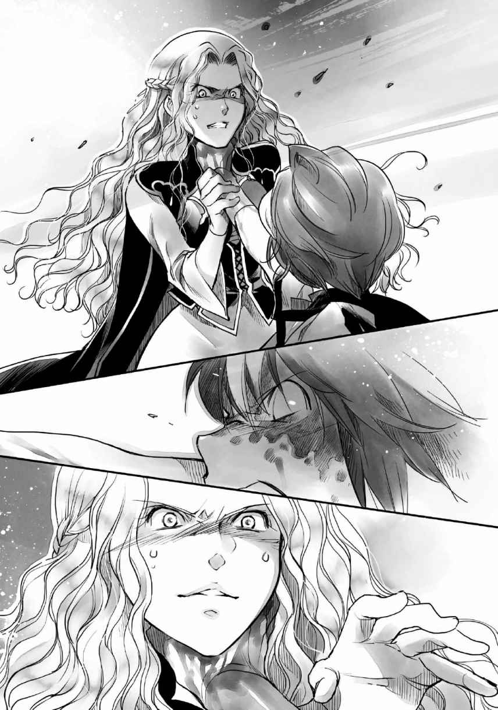
無言。あるいは、ルクレティアの意識が音を拾えなかっただけかもしれなかったが、そのどちらが正解かを考える余裕はない。ルクレティアは左手の飾り紐を相手に差し向けようとしたが、それも間に合わなかった。
「くっ......！」
獣の血に濡れた右手がルクレティアの細首を摑み、軽々と持ち上げる。
気道を圧迫され、それ以前に頸椎を折られかねない状態で、ルクレティアは懸命に左手を獣の額へ押し当て、不敵に頰を歪めて言った。
「──どちらが......先に。相手を、死に落とせるか。試して、みますか？」
血に飢えた眼差しの獣が、牙を剝いて笑った。
細首を摑む拳に力がこもる。
ルクレティアが、苦痛に顔を歪めながら左手に力を込めようとしたその時、不意に獣の表情が一変した。
不愉快そうに低く唸りながら背後を振り返る。
首を絞め上げていた力が抜け、ルクレティアはあっさりと解放されて地面に倒れ込んだ。咳き込みながら顔を上げると、獣の背中に一つ、二つ、矢が突き刺さっている。
遠くで小鬼 達がなにかを騒いでいた。
鋭く空気を裂く音と共に、いくつかの矢が飛んでくる。いずれも獣を狙ったその矢撃を、狙われた獣は全て叩き落としてみせた。
「がああああああああああああああああああああああああああああ！」
その日一番の咆哮。
そして、獣はそのまま小鬼 達へと向かって飛びかかっていった。
小鬼 達が悲鳴を上げ、逃げ出す。
ルクレティアは懸命に息を整えながら、左腕を持ち上げた。小鬼 達を相手に縦横無尽に駆け回り、一方的な戦いを繰り広げる獣に狙いを定める。
それまで意識になかった疲労が纏わりつき、腕を静止させるだけでも大変な苦労が必要だった。残る魔力も少ない。ルクレティアは薄い呼吸に紛らせるように体内の魔力を搔き集め、左手に握って垂らす飾り紐に力を集中させた。そこにあしらわれた多くの貴石類の重みがひどく疎ましかった。
彼女が残る渾身を練り上げている間、獣はこの場における虐殺を極めようというかのように殺し続けていた。町の中に入り込んだ小鬼 の数は瞬く間に減り、残りが外に逃げ出そうと門に殺到する。
小鬼 達を追いかけようとした獣が無防備な背後を晒した。
瞬間、ルクレティアは左手の指先までを限界に開ききって──しかし、そこから魔力が解放されることはなかった。
人型の獣が門の外に消える。
そのまま、逃げ惑う小鬼 達を執拗に追いかけ始める気配を確認して、ルクレティアは全身の力を抜いた。それと同時、どっと疲労感が肩に重く圧し掛かり、息を吐く。乱れた金髪を搔き上げて、初めて愚痴じみた呟きがその形良い唇から漏れた。
「まったく。酷い夜ですこと......」
それからしばらく、ルクレティアは血に飢えた獣が戻って来ることを警戒してその場を離れなかった。
小鬼 達の悲鳴が途絶え、獣の咆哮が収まり。彼女が町門の外に様子を見に行ったのは朝方のことである。
そこには一人の少女が倒れ伏していた。
全身に無数の擦過傷をつくり、おびただしい量の血化粧を纏って、死んだように眠るあどけない少女。
周囲には小鬼 達の死骸が累々と転がっている。
ルクレティアが数えたところによると、その数はおよそ三十近く。血の海に引き裂かれた肉片が無数の小島を成す、まさに地獄絵図としか言いようのない光景だった。
次の日の昼過ぎまで泥のように眠ったカーラが目を覚ました時、彼女に降り注いだのは町の人間達からの賞賛と感謝ではなく、非難と恐れの入り混じった冷ややかな眼差しだった。
狂暴化。人狼種族の恐るべき能力の発現に、町の人達はこぞって少女を責めたてた。
それはまったく根拠のないものばかりだったわけではない。動く敵を求め、見境なく周囲に襲いかかろうとする少女の危険性は事実その通りだった。今回、奇跡的にカーラによる町への被害はなかったが、奇跡はあくまで奇跡に過ぎない。
だが、ひどく一方だけに加担した歪な弾劾であることも間違いなかった。彼女が護った子ども、それにほとんど戦力にならなかった十人以上の冒険者の存在については話にも上らず、ただカーラの狂暴な振る舞いだけが攻撃の的になった。
町の人間達の心情も、仕方がなくはなかった。立て続けに魔物の襲撃を受けた彼らは、次があるかもしれないという恐怖を紛らわせ、心の平衡を保つ必要があった。なにより少女は人狼だった。
やがて、町の人間達の間からカーラの排斥を求める声が上がり始めた。
その声はたちまちに燃え上がり少女を取り囲んだ。言葉による火炙りを受けながら、人狼の少女はじっと黙ってそれに耐えていた。一言の弁解もないまま、彼女の町からの追放が決まりかけたところに、声がかかった。
腰を曲げた町長が母子を伴って現れていた。
長に促された母親が、震える声で囁いた。──子どもを、助けてくれてありがとう。
長が言った。カーラが町の危機を救ってくれたのは事実だ。ならば我々はまず感謝をするべきであって、追い出すのは酷い。カーラは冒険者を目指しているという。その力を町の防衛に正しく役立ててもらえるのなら、それを認めてやったらどうか。
町長はそう告げて、最後に付け加えた。無論、カーラが町の人間に被害を与えるような事態を招いたなら、その時はただちに追い出さなければならないだろう。
母親の言葉と町長の提案に、町の人間達は渋々ながら同意を示した。しかし、心から賛成したわけではなかった。彼らの表情を見ればそれは一目瞭然だった。
そればかりか、追放を叫んでいた人々ばかりでなく、カーラに感謝を述べた母親や町長の表情にすら、彼女への疑念はありありと表れていた。母親に連れられた子どもは最後まで、カーラの顔を見ようともしなかった。
そうした話の推移を、その場に参加していなかったために後から人づてに聞き及んだ老婆は、黙って顔をしかめた。
そして、なにかを考え込むように、しばらく表情を変えなかった。
「御機嫌よう、リリアーヌさん」
「ああ、ルクレティア。元気そうだね」
ゴブリン撃退から数日。
店を訪れた令嬢に、老婆は気怠げな声をかけた。
「お陰様で。こちらのお店は、大した被害はなかったようですね」
「それこそ、お陰様でね。......急ぎかい？ よかったら、ちょっとお茶でも飲んでかないか」
令嬢は瞬き一つ分の間を置いてから、小さく微笑した。
「お誘いありがとうございます。喜んで」
「こっちにおいで」
店の奥から居住部屋に移り、老婆は二人分のお茶を淹れた。
「花草茶なんて口にあわないかもしれないけどね」
「そんなことはありません。いただきます」
洗練された挙措 で椀を運ぶ様子を感心したように眺めてから、自分も花草茶を含む。一息をつき、老婆はそれとなく口を開いた。
「この間は大活躍だったそうじゃないか」
「ありがとうございます。町に大きな被害が出ず、ほっとしています」
「周りの人間の見る目も変わったんじゃないかい？ 並の男どもなんかより、よほど冷静で指示も的確だったって聞いたよ」
「どうでしょうか。けれど、それも全て指示を受けて動いていただいた皆さんのおかげですわ」
控えめに謙遜してみせる相手をしばらく見つめた後、老婆は本題を切り出した。
「カーラのことだけどね」
「カーラ？」
不思議そうな表情を浮かべる令嬢に、老婆は苦笑した。
「誤魔化すのはお止しよ。話は聞いてるんだ。カーラが暴れちまった時、あんたもその場にいたんだろう？」
「別に誤魔化そうとしたわけではありません。どうしていきなりその名前が出たのか、不思議に思っただけです」
ルクレティアは言った。
「そうかい？ 町の連中の間じゃ、最近よく名前があがってるみたいだよ。もちろん、悪い意味でね」
「そのようですね」
「この町から追い出そうって話もあったらしいじゃないか。町長がなんとかそれを諫めて、事なきをえたってね」
「それについても聞き及んでいます」
「あんたの仕業だね？」
ルクレティアはすぐに応えなかった。
答えに詰まったのではなく、図ったように優雅な動作で花草茶を一口すると、涼やかな微笑を湛えて、
「なんのことでしょう」
老婆はうんざりと頭を振って、
「お止しったら。腹の探り合いをやるつもりはないんだよ、こっちは」
「そう言われましても、わからないことには答えようがありません」
「あの長のことは、どういう人間かよぅく知ってる」
芝居がかったルクレティアの返答を無視するように、老婆は続けた。
「悪い人間じゃないけどね。器のちっさな男さ。大事な娘夫婦を殺されたことで人狼への憎しみも人一倍だ。そんな人間が、よりにもよってその人狼の血をひいてるカーラを庇うだなんてありえると思うかい？ 町の人間への説得のために子連れの母親まで連れてくるだなんて、そんな小細工を思いつける頭でもない。だったらそりゃあ、他の誰かがそれをさせたってことだ。そうだろ？」
令嬢は目線を落とし、黙って茶椀を傾けている。
「なら、それはいったいなんの理由があってのことだろうって思ってね。温情？ それとも感謝かい？ 気になるじゃないか。どうしてって、あたしにゃその〝誰か〟が、そんな生っちょろいことを考える相手だとはとても思えなくてね」
令嬢に動揺の気配はない。
老婆はため息をついた。
「ほんと言うとね。あたしは、あの子がこの町を追い出されるんなら、それでもいいと思ってたんだ」
ちらとルクレティアが視線を持ち上げた。老婆はそれに気づかないように、
「......あの子は、他所に行った方が幸せになれる。本人はこの町が好きだとかって言ってるけどね。馬鹿なことったらないよ。好きになるなんて、どこだって出来るんだ。どんなに駄目な男だろうが、美点を見つけっちまうのと似たようなもんさ。どこでもいい、新しい場所へ行けばきっとそこが気に入る。もし行った先が駄目なら、さっさとまた別のところへ行けばいい。駄目な男に見切りをつけなきゃいけないのとおんなじさ」
「そう本人に仰いましたの？」
「言ったとも。何度も、そりゃもうしつこいくらいにね。その上で......それでも、あの子がここに残るって言うんなら。あたしはそれを応援したいと思ってるんだよ」
じろりと老婆はねめつけるように令嬢を見据えて、
「だからね、ルクレティア。あんたの考えってのを聞いておきたいのさ。いったいどうして、あんたはわざわざ町長にカーラを庇わせたりしたんだい？」
「私がそれをさせたと、前提のように言われても困りますが......」
ルクレティアは苦笑を浮かべ、しばらく沈黙してから、
「そうですね。もしもリリアーヌさんが仰ることが正しかったのだとしたら──あくまで仮定ですが──祖父に何事かを進言した、その〝誰か〟の考えを私なりに想像することはできるかもしれません」
迂遠な物言いに老婆は頭を振って、
「なら、それでもいいよ。教えておくれ」
「簡単です。集団をまとめるのに必要なものはなにか、ということです」
花草茶の椀を手元に置き、静かな声音で令嬢は言った。
「まず食料。規則。組織化すればそれを動かすための税制。効率性。──そして、その集団にとって共通する〝敵〟です」
「敵？」
反芻するように呟いた老婆が、眉を跳ねあげる前に令嬢は続けた。
「敵とは魔物に限りません。飢えという〝敵〟。寒さという〝敵〟。集団というものの意義は結論、利益の為にこそあるのです。であれば、敵という存在を確立することが、集団を、組織をまとめる重要な要素であることは疑いようがありません。そしてそれは、なにも集団の外に限った話でもないでしょう」
「不満のぶつけ先。鬱屈した感情の矛先。これから町でなにかあった時の、わかりやすい犯人候補。──カーラ、あの子は態 のいい生贄ってわけかい」
渋面で老婆が吐き捨てる。
「そのように利用できるのなら、私なら当然そうします。ただ捨てるなど勿体ない 」
あくまで他人事のように、令嬢は言った。
睨みつけるような眼差しでしばらく目の前の相手を見つめてから、老婆は諦めるように瞼を下ろした。
「......為になったよ。ありがとうね」
「お役に立てたのなら幸いですわ」
「なったとも。ああ、けど、ついでにもう一つ教えてくれるかい」
澄ました表情で、どうぞ、と令嬢が首を傾げる。
「どうしてそこまで話してくれたんだい？」
令嬢が眉をひそめた。
「どうして、と言うのは？」
「だってそうだろう。聞いといてなんだけどね。あんたにとっちゃ一銭にもなりゃしない。ルクレティア、あんたにとってもあの子は両親の仇のはずだ。だったら、酷い目に遭った方がスカッとするんじゃないのかい。今の話なんか聞いたら、あたしはなおさらこの町から出るよう勧めちまうよ」
ルクレティアは視線を落とし、花草茶を持ち上げた。自然な動作で一口するその姿が様になりすぎていたから、老婆は目の前の相手がなにかを考えているのだということにしばらく気づかなかった。
「──生まれ育ちというものは、本人が望んでそうなるものでもないでしょう」
ぽつりと言う令嬢の表情に、一瞬なにかの感情が浮かびかけたが、老婆がその意味を読み取ろうとする前に消え失せて、すぐに普段のものに塗り替わっている。
「それに、ただの結果論にせよ、彼女のお蔭で町に大きな被害が出なかったことも事実です。そのことに私は感謝していますし、他の方々もそうでしょう。ですから、リリアーヌさん。貴女が件の相手と親しくされていらっしゃるのであれば、穏便に町から出て行くことをお勧めになるべきだと、私も思います。彼女が自分自身の意思でこの町に残ることを選ぶのなら、当然、相応の扱いがこれから先には待っていることでしょうから」
「柵の羊は、いつ処理されたって文句は言えないってかい？ あの子はとても普通の羊じゃないと思うけどね」
「羊だろうが狼だろうが、獣であることには変わりませんわ」
老婆は大きく肩を落として、
「ねえ、ルクレティア。もっと違ったやり方ってのはないもんかね。あの子とあんたは、いい友人になれるんじゃないかと思うんだよ、あたしは」
「友人？」
それを聞いたルクレティアは冷ややかな微笑を浮かべて、
「そんなものは必要ありません。誰かに縋ろうとは、思いません。私は私の意思に拠って立ち、私の行動によって功を成し、私の過誤から敗れ失う。ただそれだけです」
「......あんたには敵と味方しかいないのかい、ルクレティア」
「いいえ、違います。私にいるのは〝私〟だけです」
傲然とした態度で令嬢は席を立った。
去ろうとする背中に向かって呼び止めることはせず、その代わりに老婆は声をかけた。
「またおいで。ルクレティア」
「......お茶、御馳走様でした」
振り向かないまま応える令嬢の口調はあくまで硬い。それを崩してしまえば、なにか大切なものが失われてしまうことを確信しているような声だった。
寂れた店内の応対机 に戻り、老婆はため息をつく。
──どいつもこいつも。頑固な相手ばっかりだ。
誰が悪いわけでもなく、世は何事も上手くいかない。無常と非情とが積み重なって、擦れ、引っ掛かり、転がりながら過ぎていく。
その理不尽さに怒りを覚え、敢然として立ち向かうには、老婆は年を取りすぎていた。
憂鬱な面持ちで考える。誰か、なんとかしてくれる相手がいないものか──縋るように、ふと、店の扉の向こうに誰かの人影が立った。
鐘が鳴る。まさかと思い老婆は目を見開いて、すぐにそれを半眼にした。
「......婆さん。金を。それか......なにか、食い物をくれ......」
店の中に入って来たのは冴えない風貌をした、いかにも頼りなさそうな青年だった。よほど飢えているのか、ふらふらと彷徨う死屍人のように左右に揺れながら、店の中に入って来る。
「もう、三日も、食ってないんだ......。頼む、メシ──」
「知るもんかい。木の根でも食ってな」
「そんなもん、とっくに食い尽くしたに決まってんだろ......」
奥までやってきて応対机 に両手をつき、声を震わせる。大声を出したいが、どうあってもか細くしかならないらしい男の無様さを冷ややかに見上げて、
「だったら水でも飲んでりゃいい。どうしてあたしが、あんたに恵んでやらなきゃならないんだ」
二人の少女に向けるものとはまったく異なる冷ややかな口調で老婆は言った。
「無料、でなんて、言わない。とっておきを......持ってきたんだ......っ」
男は震える腕で腰から袋を取り出し、その中身をそっと机の上に置いた。
目の前の代物を胡散臭そうに老婆は見て、
「なんだい、こりゃ」
「スライムの──化石だ。これは凄く珍しいぞ。不定形のスライムの形が残ってるなんて、ほとんどない。それがこんなにはっきりと、なんて。出すとこに出せば、銅貨一枚くらいには──」
「叩き割るよ」
「鬼か......！」
泣きそうな顔で若者は言った。
「ホントだぞ、本当に本物なんだっ。売れば金になる。なにがあっても、これだけは手放さなかったんだ......！」
「そうかい。だったらギーツかどこかまで行って金にしてくりゃいいだろう。そんなもん、こんな町じゃ一銭の価値もないよ」
「ギーツに着く前に干物になっちまうだろ！」
「なに言ってんだい。その前に魔物に食われちまうに決まってんだろう。骨と筋ばかりで、たいして美味くもないだろうけどね」
「う、ううっ......」
いよいよ力が尽きたのか、ずるずると男がその場に崩れ落ちる。
餓死寸前の相手を見下ろして、老婆は嘆息して居住部屋に向かうと、傷みかけたライ麦パンと水入りの茶碗を持って来て、男の目の前に置いた。
「ほら、さっさと食べて帰りな」
「おお......」
男がげっそりとこけた頰で見上げて、
「婆さん、初めてあんたがいい奴に見える......」
「うるさいよ。喉に詰まらせたりしても助けてやらないからね。水に浸して食べな。胃がびっくりするといけない」
がっつくように男はパンを食べきって、ほっと息を吐いた。そのまま床で横になりそうな背中を蹴り、老婆は冷たく告げる。
「食ったんならとっとと帰りな。居ついてもらったら迷惑だ」
「......ちょっとは休ませてやろうって優しさはないのか」
「あるわけないだろ。言っとくけど、こんなことはもう二度とないからね。ほら、これも持って帰りな」
ただの石にしか見えない代物を放り投げると、男は慌ててそれを受け止めて、
「わ、割れたらどうすんだっ。宝物なんだぞ」
「だったらそんなもの売りに来るんじゃないよ。いい年して餓死しかける奴がいるかい、まったくなにやってんだか」
「仕方ないだろ。ちょっと没頭してたんだから......」
ぶつぶつと言ってから、男ははあっとため息をついた。
「......やっぱ上手くいかないのかなぁ。そりゃそうだよな、あんなの今まで誰も成功したことないもんな。俺なんかに──」
ぶつぶつと独り言ちる。その男の呟きを聞いて、応対机 に戻った老婆が口を開いた。
「だったら死ねばいいさね」
老婆の一言に、ぎょっとしたように若者は顔を上げた。
「凄いこと言うな、婆さん」
「なにがだい」
老婆は頰杖をついたまま平然と、
「なにをやろうとしてるのかは知らないけどね。やって駄目ならそれだけさ。失敗して死ぬか、もう一回やり直すか。やらないんなら、あんたはずっとそのままだ。今のあんたにいったいなにがある？ だったら、いっそ死んだほうが潔いってもんじゃないか」
淡々と告げる相手を、青年はほとんど呆然と見つめてから、
「──わかったよ」
「なにがだい」
「手前がひどい意地悪婆さんだってことがだよ、この野郎！」
青年は涙目になって立ち上がり、老婆に人差し指を突きつけた。
「見てろよ！ 誰が諦めてやるもんか！ 今に大金持ちになって、さっきのパン代だって何倍にして返してやるんだからな！ ばーか、ばーか！」
捨て台詞のように言って店から飛び出していく。
「パン代はいいから、せめて年齢相応に落ち着いて欲しいもんだけどねぇ」
ぱたん、と扉が閉まってから、老婆は改めてため息をついた。
......ちょっとでも期待しかけたのが馬鹿みたいじゃないか。あんな駄目男に、なにが出来るわけもないだろうに。
それまで長い年月を生きてきた老婆の人を見る目は確かだった。
世の不条理に異を唱え、それを打破する気概も器量も、今の人物に見ることはほとんど不可能だった。
ただし、老婆にもわかりようもないことはあった。
それはたった今、店から出て行った男が食事も忘れるほどに没頭する研究がついに実を結ぼうとしているということと、それが周囲に及ぼす影響について。
そして、老婆の何気ない言葉こそがその最後の一押しになったということだった。
不定形でありながら、人の形と知性を与えられたモノ。
スラ子と名付けられるその存在が生まれるのは、もう少しだけ後のこととなる。
あとがき
「お祝いにウチでなんかやるか」
「なら、あれがいいや」
「あれか。了解」
というやりとりがあったのは昨年末のことでした。
相手は、今までの人生の半分どころか３分の２にも至る長さの付き合いがある、いわゆる腐れ縁の友人です。高校まで一緒、大学はさすがに違ったものの同じ関東。社会に出た後もなんだかんだと付き合いはそのまま、ふと連絡を取り合って飲みにいくことがあります。
昨年、『スライムなダンジョンから天下をとろうと思う。』の出版のお話があった際にも、この友人にだけはかなり早い段階から報告、というか連絡をしていました。突然、その話を伝えた時の友人の驚きようは随分と痛快なものではありましたが、その友人が出版のお祝いをしてくれるということで、私が彼にリクエストをしたのは「ラーメン鍋」でした。
友人の実家は地元でラーメン店を営んでおりまして、昔から長い休みの度に大勢の友人で泊まりに押しかけ、たくさん御馳走になりました。そのスープを鍋つゆに使った鍋に、地元特産の黒豚肉をしゃぶしゃぶ風にまぶして、最後の〆にはうどんでもおじやでもなくラーメン──という食べ方をするのが「ラーメン鍋」なのですが、これが本当に美味しいのです。
そちらのラーメンは飛行機便での販売、配達がされていて、自宅でも美味しく食べられるのですが、素材や製法にこだわりがあるためにどうしても賞味期限が短くなってしまっています。今回はラーメンと、地元の豚肉を友人がわざわざ取り寄せてくれて、私にとっても久しぶりにその味にありつけることになったのでした。
ついでに大学時代、私と同じゼミに所属していた友人の奥さんがまだ出版の話を知らないので、作者を隠したまま前日までに本を読ませておいて、当日「実はその本の作者が来ています」とドッキリを仕掛けよう──イタズラ小僧のように目を輝かせた友人が言いました。いい年をしてなにをガキみたいなことを言ってやがる......、私は顔をしかめて答えました。「よしやろう」 私の中にも、まだ在りし日の少年の心は残っていたのです。
ドッキリ、もといお祝い当日。
昼過ぎに友人と合流し、混雑する街中をぶらついた後で大量の酒とつまみと鍋の材料を買い込み、自分も少しは払おうとして蹴倒され。それから友人宅に向かい、真昼間から酒を飲み始めました。無論、お昼から飲酒などということは実に不届きな、しかし最上の贅沢です。友人宅に行く途中ではちゃっかり『ウイイレ』も買って帰り、久しぶりの対戦に熱中して絶叫を上げたりしているうちに友人の奥さんが戻って来て、そろそろ鍋にしようか。というところで事件が起きました。
──寝落ちです。
学生の頃には似たような騒ぎ方なんて何度となくやっていたはずなのですが、日頃の疲れか、はたまた早くも体力低下の兆しなのか。「10 分だけ......」とのたまった私は、そのまま机に突っ伏してぴくりともしなかったそうです。
ふと私が気づいた時には、時刻は十一時にもなろうとしていました。
あわててリビングに戻ると、そこには寂しそうに一人、お手製のラーメン鍋をかき回す友人の奥さんの姿がありました。眠ってしまったのは自分だけではなく、友人まで寝入ってしまったそうです。二人して大馬鹿以外の何物でもありません。
終電の時間も近づいていた為、あわてて鍋を食し、それはやはりとても美味しかったのですが、ゆっくりと味わえなかったことが非常に残念でした。もちろん、ドッキリのタイミングなんて計る余裕あるはずがありません。精々、帰り際に「あ、実はですね......」と作者であることを打ち明けることくらいしか出来ず、なんとも計画倒れな結果となってしまいました。
まったくしょうがない話なのですが、これだけでは済みませんでした。
テーブルで寝ていた私はその後、覿面に風邪を引いてしまい、それどころか友人はインフルエンザにまでなりました。さらには仕事柄、毎年きちんと予防接種を受けている友人の奥さんまで、インフルエンザではと疑いをもたれるような風邪を引きこんでしまったそうです。
菌を持ち込んだのは明らかに、その日の昼間、雑踏を歩いていた私と友人の仕業かと思われます。
そういえば友人宅に着いた後に手洗い、うがいをしなかったなあ、と。そのことについて、後日、別の機会でまた友人夫妻とお酒を飲んだ時に、友人の奥さんから二人して説教を受けることになったのでした。
少年の心はともかく。手洗い、うがいは忘れずに──そう固く胸に誓った出来事でありました。
正月早々、阿呆なことをやらかした私ですが、今回も多くの方々のお力に助けられ、書籍化作業をやり遂げることができました。
お忙しい中、一巻以上に魅力的なイラストを手掛けてくださいました椎名様。担当編集の稲垣様。未熟な私に、丁寧なご指摘、提案で校正を受け持っていただきました、鷗来堂ご担当者様。椎名様の美しいイラストをより印象的に、素晴らしいデザインへと仕上げていただきました装丁の内田様。組版、印刷、製本、営業、販売、その他全てに関わってくださいました方々。
メールアドレスの紛失後に再掲載を許可していただきました「小説家になろう」運営様。こうして二巻まで本にすることができましたのは、なによりそのご厚意あってのことです。また、「小説家になろう」で私の作品を楽しんでくださっている読者の皆様方にも、格別の御礼を申し上げます。
そして、今この本を手に取っていただいておりますあなた様へ、深く感謝いたします。
本当にありがとうございます。
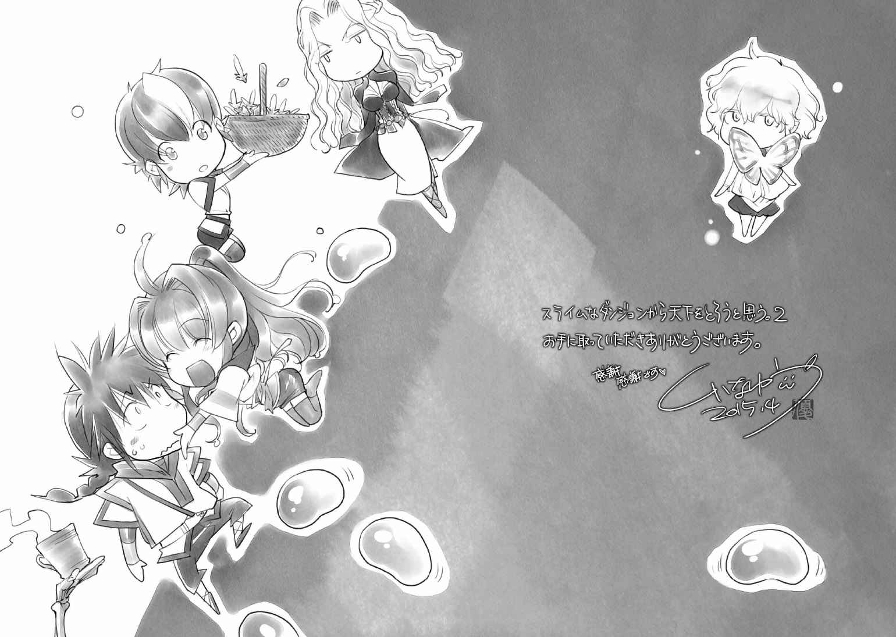

スライムなダンジョンから天下をとろうと思う。
２ 二人の少女
発行 ────────── 2015年4月15日 初版第1刷発行
著者 ────────── 再藤
イラストレーター ──── 椎名 優
装丁デザイン ────── 内田圭祐（8823DESIGN）
発行者 ───────── 幕内和博
編集 ────────── 稲垣高広
発行所 ───────── 株式会社 アース・スター エンターテイメント
〒150-0036 東京都渋谷区南平台町 16-17
渋谷ガーデンタワー 11F
TEL：03-5457-1471
FAX：03-5457-1473
http://www.es-novel.jp/
発売所 ───────── 株式会社 泰文堂
〒108-0075 東京都港区港南 2-16-8
ストーリア品川 17F
TEL：03-6712-0333
印刷・製本 ─────── 中央精版印刷株式会社
© Saitou / You Siina 2015, Printed in Japan
この物語はフィクションです。実在の人物・団体・事件・地域等には、いっさい関係ありません。
本書は、法令の定めにある場合を除き、その全部または一部を無断で複製・複写することはできません。
また、本書のコピー、スキャン、電子データ化等の無断複製は、著作権法上での例外を除き、禁じられております。
本書を代行業者等の第三者に依頼してスキャン、電子データ化をすることは、私的利用の目的であっても認められておらず、著作権法に違反します。
乱丁・落丁本は、ご面倒ですが、株式会社 アース・スター エンターテイメント 読書係あてにお送りください。
送料小社負担でお取替えいたします。価格はカバーに表示してあります。
ISBN 978-4-8030-0716-9